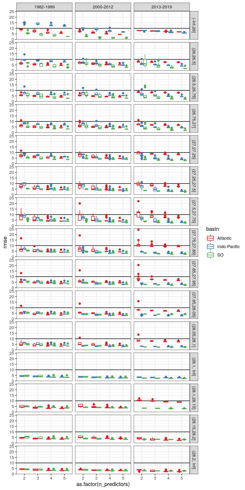
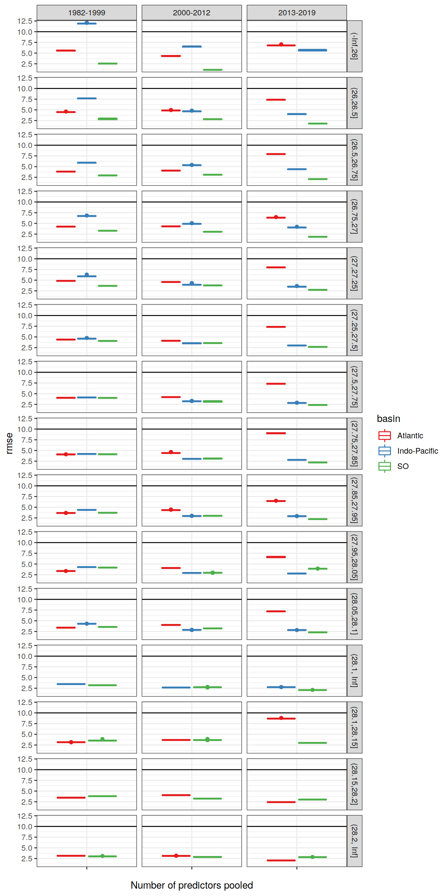
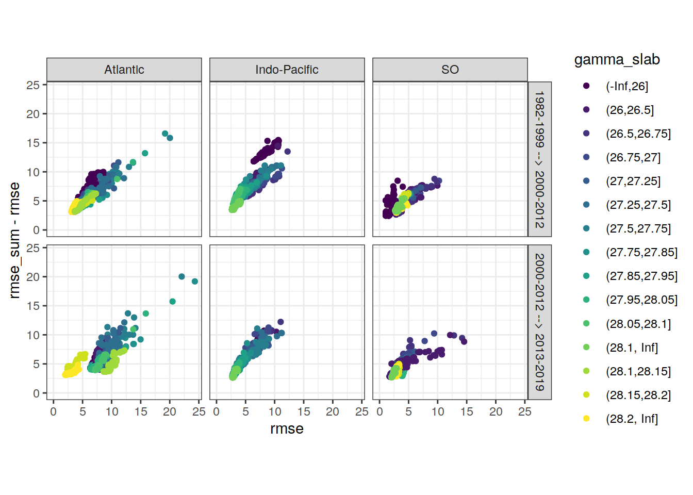
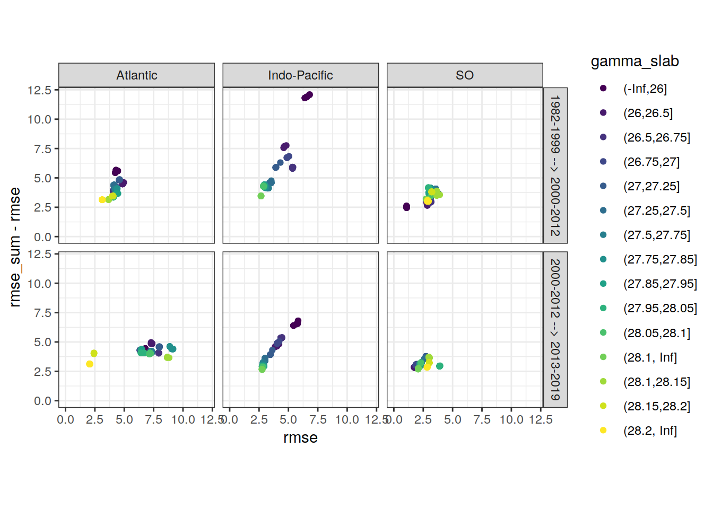
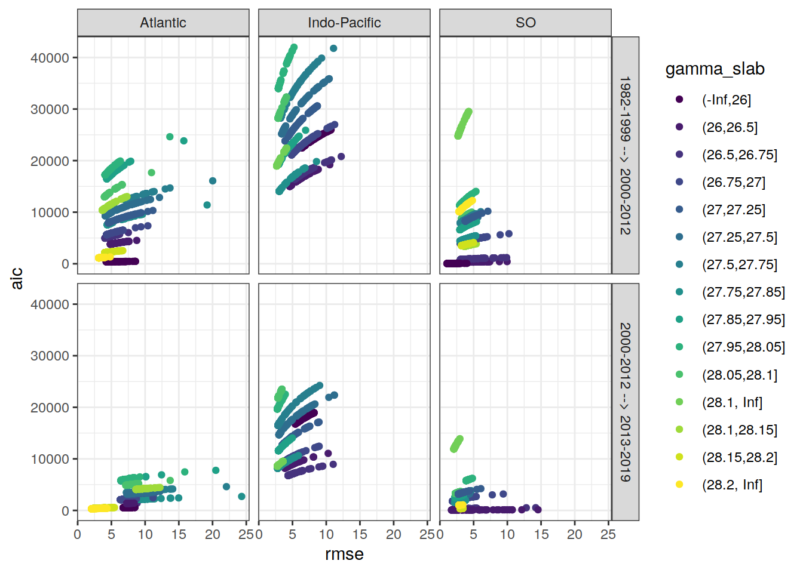
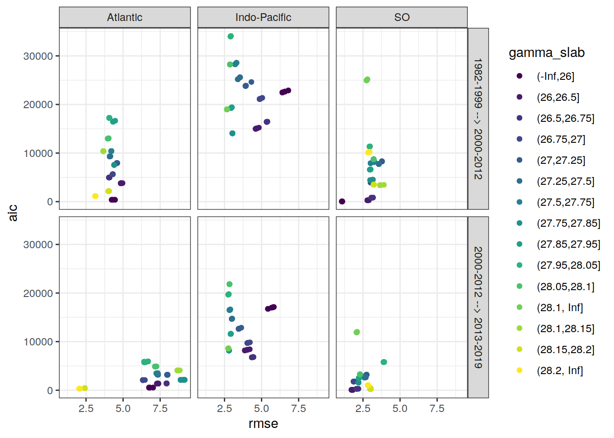

Last updated: 2020-12-23
Checks: 7 0
Knit directory: emlr_obs_v_104/
This reproducible R Markdown analysis was created with workflowr (version 1.6.2). The Checks tab describes the reproducibility checks that were applied when the results were created. The Past versions tab lists the development history.
Great! Since the R Markdown file has been committed to the Git repository, you know the exact version of the code that produced these results.
Great job! The global environment was empty. Objects defined in the global environment can affect the analysis in your R Markdown file in unknown ways. For reproduciblity it’s best to always run the code in an empty environment.
The command set.seed(20200707) was run prior to running the code in the R Markdown file. Setting a seed ensures that any results that rely on randomness, e.g. subsampling or permutations, are reproducible.
Great job! Recording the operating system, R version, and package versions is critical for reproducibility.
Nice! There were no cached chunks for this analysis, so you can be confident that you successfully produced the results during this run.
Great job! Using relative paths to the files within your workflowr project makes it easier to run your code on other machines.
Great! You are using Git for version control. Tracking code development and connecting the code version to the results is critical for reproducibility.
The results in this page were generated with repository version 5eda1b5. See the Past versions tab to see a history of the changes made to the R Markdown and HTML files.
Note that you need to be careful to ensure that all relevant files for the analysis have been committed to Git prior to generating the results (you can use wflow_publish or wflow_git_commit). workflowr only checks the R Markdown file, but you know if there are other scripts or data files that it depends on. Below is the status of the Git repository when the results were generated:
Ignored files:
Ignored: .Rproj.user/
Unstaged changes:
Modified: analysis/_site.yml
Modified: data/auxillary/params_local.rds
Note that any generated files, e.g. HTML, png, CSS, etc., are not included in this status report because it is ok for generated content to have uncommitted changes.
These are the previous versions of the repository in which changes were made to the R Markdown (analysis/eMLR_model_fitting.Rmd) and HTML (docs/eMLR_model_fitting.html) files. If you’ve configured a remote Git repository (see ?wflow_git_remote), click on the hyperlinks in the table below to view the files as they were in that past version.
| File | Version | Author | Date | Message |
|---|---|---|---|---|
| Rmd | 8af6f06 | Jens Müller | 2020-12-23 | Initial commit |
Required are:
GLODAP <-
read_csv(paste(path_version_data,
"GLODAPv2.2020_MLR_fitting_ready.csv",
sep = ""))Find all possible combinations of following considered predictor variables:
# the following code is a workaround to find all predictor combinations
# using the olsrr package and fit all models for one era, slab, and basin
i_basin <- unique(GLODAP$basin)[1]
i_era <- unique(GLODAP$era)[1]
# subset one basin and era for fitting
GLODAP_basin_era <- GLODAP %>%
filter(basin == i_basin, era == i_era)
i_gamma_slab <- unique(GLODAP_basin_era$gamma_slab)[1]
print(i_gamma_slab)
# subset one gamma slab
GLODAP_basin_era_slab <- GLODAP_basin_era %>%
filter(gamma_slab == i_gamma_slab)
# fit the full linear model, i.e. all predictor combinations
lm_full <- lm(paste(
params_local$MLR_target,
paste(params_local$MLR_predictors, collapse = " + "),
sep = " ~ "
),
data = GLODAP_basin_era_slab)
# fit linear models for all possible predictor combinations
# unfortunately, this functions does not provide model coefficients (yet)
lm_all <- ols_step_all_possible(lm_full)
# extract diagnostics of each linear model
lm_all <- as_tibble(lm_all$result)
# format model formula
lm_all <- lm_all %>%
select(n, predictors) %>%
mutate(lm_coeff = str_replace_all(predictors, " ", " + "),
lm_coeff = paste(params_local$MLR_target, "~", lm_coeff))
# remove helper objects
rm(i_gamma_slab,
i_era,
i_basin,
GLODAP_basin_era,
GLODAP_basin_era_slab,
lm_full)Select combinations with a total number of predictors in the range:
lm_all <- lm_all %>%
filter(n >= params_local$MLR_predictors_min,
n <= params_local$MLR_predictors_max)This results in a total number of MLR models of:
Individual linear regression models were fitted for the chosen target variable:
as a function of each predictor combination. Fitting was performed separately within each basin, era, and slab. Model diagnostics, such as the root mean squared error (RMSE), were calculated for each fitted model.
# loop across all basins, era, gamma slabs, and MLRs
# fit all MLR models
for (i_basin in unique(GLODAP$basin)) {
for (i_era in unique(GLODAP$era)) {
# i_basin <- unique(GLODAP$basin)[1]
# i_era <- unique(GLODAP$era)[1]
print(i_basin)
print(i_era)
GLODAP_basin_era <- GLODAP %>%
filter(basin == i_basin, era == i_era)
for (i_gamma_slab in unique(GLODAP_basin_era$gamma_slab)) {
# i_gamma_slab <- unique(GLODAP_basin_era$gamma_slab)[1]
print(i_gamma_slab)
GLODAP_basin_era_slab <- GLODAP_basin_era %>%
filter(gamma_slab == i_gamma_slab)
for (i_predictors in unique(lm_all$predictors)) {
# i_predictors <- unique(lm_all$predictors)[110]
# extract one model definition
i_lm <- lm_all %>%
filter(predictors == i_predictors) %>%
select(lm_coeff) %>%
pull()
# extract number of predictors
i_n_predictors <- lm_all %>%
filter(predictors == i_predictors) %>%
select(n) %>%
pull()
# fit model
i_lm_fit <- lm(as.formula(i_lm),
data = GLODAP_basin_era_slab)
# find max predictor correlation
i_cor_max <- GLODAP_basin_era_slab %>%
select(!!!syms(str_split(i_predictors, " ",
simplify = TRUE))) %>%
correlate(quiet = TRUE) %>%
select(-term) %>%
abs() %>%
max(na.rm = TRUE)
# calculate root mean squared error
i_rmse <- sqrt(
c(crossprod(i_lm_fit$residuals)) /
length(i_lm_fit$residuals)
)
# calculate maximum residual
i_resid_max <- max(abs(i_lm_fit$residuals))
# calculate Akaike information criterion aic
i_aic <- AIC(i_lm_fit)
# collect model coefficients and diagnostics
coefficients <- tidy(i_lm_fit)
coefficients <- coefficients %>%
mutate(
basin = i_basin,
era = i_era,
gamma_slab = i_gamma_slab,
model = i_lm,
rmse = i_rmse,
aic = i_aic,
resid_max = i_resid_max,
n_predictors = i_n_predictors,
na_predictor = anyNA(coefficients$estimate),
cor_max = i_cor_max
)
if (exists("lm_all_fitted")) {
lm_all_fitted <- bind_rows(lm_all_fitted, coefficients)
}
if (!exists("lm_all_fitted")) {
lm_all_fitted <- coefficients
}
# plot model diagnostics, if activated
if (params_local$plot_all_figures == "y") {
p_model <- ggnostic(
i_lm_fit,
columnsY = c(params_local$MLR_target, ".fitted", ".resid"),
title = paste(
"| era:",
i_era,
"| basin:",
i_basin,
"| gamma slab:",
i_gamma_slab,
"| predictors:",
i_predictors
)
)
ggsave(
plot = p_model,
path = paste(path_version_figures, "eMLR_diagnostics/", sep = ""),
filename = paste(
"MLR_residuals",
i_era,
i_basin,
i_gamma_slab,
i_predictors,
"predictors.png",
sep = "_"
),
width = 14,
height = 8
)
rm(p_model)
}
}
}
}
}
rm(i_lm_fit, coefficients, i_rmse,
GLODAP_basin_era, GLODAP_basin_era_slab,
i_lm,
i_basin, i_era, i_gamma_slab, i_predictors,
lm_all,
i_aic, i_n_predictors, i_resid_max)Coefficients are prepared for the mapping of Cant and the chosen target variable.
# select relevant columns
lm_all_fitted <- lm_all_fitted %>%
select(basin, gamma_slab, era, model, n_predictors,
term, estimate,
rmse, aic, resid_max, na_predictor, cor_max)
# set coefficient to zero if not fitted (=NA)
lm_all_fitted <- lm_all_fitted %>%
mutate(estimate = if_else(is.na(estimate), 0, estimate))
# Prepare model coefficients for mapping of target variable
lm_all_fitted_wide <- lm_all_fitted %>%
pivot_wider(values_from = estimate,
names_from = term,
names_prefix = "coeff_",
values_fill = 0)Within each basin and slab, the following number of best linear regression models was selected:
The criterion used to select the best models was:
The criterion was summed up for two adjecent eras, and the models with lowest summed values were selected.
Please note, that currently the lm() function produces NAs for some predictors. It is not yet entirely clear when this happens, but presumably it is caused by some form of collinearity between predictors, such that including another predictor does not help to explain the target variable any better. The issues also expresses as exactly identical rmse values of different models. As an interim solution, models with fitted NA predictors were not included.
# remove models with predictors fitted as NA
lm_all_fitted_wide <- lm_all_fitted_wide %>%
filter(na_predictor == FALSE)# calculate RMSE sum for adjacent eras
lm_all_fitted_wide_eras <- lm_all_fitted_wide %>%
select(basin, gamma_slab, model, era, rmse, aic, resid_max) %>%
arrange(era) %>%
group_by(basin, gamma_slab, model) %>%
mutate(eras = paste(lag(era), era, sep = " --> "),
rmse_sum = rmse + lag(rmse),
aic_sum = aic + lag(aic)
) %>%
ungroup() %>%
select(-c(era)) %>%
drop_na()
# subset models with lowest summed criterion
# chose which criterion is applied
if (params_local$MLR_criterion == "aic") {
lm_best <- lm_all_fitted_wide_eras %>%
group_by(basin, gamma_slab, eras) %>%
slice_min(order_by = aic_sum,
with_ties = FALSE,
n = params_local$MLR_number) %>%
ungroup() %>%
arrange(basin, gamma_slab, eras, model)
} else {
lm_best <- lm_all_fitted_wide_eras %>%
group_by(basin, gamma_slab, eras) %>%
slice_min(order_by = rmse_sum,
with_ties = FALSE,
n = params_local$MLR_number) %>%
ungroup() %>%
arrange(basin, gamma_slab, eras, model)
}
# print table
lm_best %>%
kable() %>%
add_header_above() %>%
kable_styling() %>%
scroll_box(width = "100%", height = "400px")| basin | gamma_slab | model | rmse | aic | resid_max | eras | rmse_sum | aic_sum |
|---|---|---|---|---|---|---|---|---|
| Atlantic | (-Inf,26] | cstar_tref ~ sal + aou + oxygen + silicate + phosphate | 4.296341 | 382.21788 | 9.495767 | 1982-1999 –> 2000-2012 | 9.960014 | 793.4973 |
| Atlantic | (-Inf,26] | cstar_tref ~ sal + aou + oxygen + silicate + phosphate_star | 4.296341 | 382.21788 | 9.495767 | 1982-1999 –> 2000-2012 | 9.960014 | 793.4973 |
| Atlantic | (-Inf,26] | cstar_tref ~ sal + aou + silicate + phosphate + phosphate_star | 4.296341 | 382.21788 | 9.495767 | 1982-1999 –> 2000-2012 | 9.960014 | 793.4973 |
| Atlantic | (-Inf,26] | cstar_tref ~ sal + temp + aou + oxygen + phosphate | 4.234528 | 380.36292 | 11.624385 | 1982-1999 –> 2000-2012 | 9.676068 | 786.6010 |
| Atlantic | (-Inf,26] | cstar_tref ~ sal + temp + aou + oxygen + phosphate_star | 4.234528 | 380.36292 | 11.624385 | 1982-1999 –> 2000-2012 | 9.676068 | 786.6010 |
| Atlantic | (-Inf,26] | cstar_tref ~ sal + temp + aou + phosphate + phosphate_star | 4.234528 | 380.36292 | 11.624385 | 1982-1999 –> 2000-2012 | 9.676068 | 786.6010 |
| Atlantic | (-Inf,26] | cstar_tref ~ sal + temp + aou + silicate + phosphate | 4.421500 | 385.89344 | 9.785365 | 1982-1999 –> 2000-2012 | 10.039081 | 796.1432 |
| Atlantic | (-Inf,26] | cstar_tref ~ sal + temp + aou + silicate + phosphate_star | 4.436362 | 386.32297 | 9.795307 | 1982-1999 –> 2000-2012 | 10.041805 | 796.3002 |
| Atlantic | (-Inf,26] | cstar_tref ~ sal + temp + oxygen + silicate + phosphate | 4.451504 | 386.75910 | 9.827008 | 1982-1999 –> 2000-2012 | 10.042764 | 796.4172 |
| Atlantic | (-Inf,26] | cstar_tref ~ sal + temp + oxygen + silicate + phosphate_star | 4.451504 | 386.75910 | 9.827008 | 1982-1999 –> 2000-2012 | 10.042764 | 796.4172 |
| Atlantic | (-Inf,26] | cstar_tref ~ sal + aou + oxygen + silicate + phosphate | 6.748808 | 539.87210 | 24.277516 | 2000-2012 –> 2013-2019 | 11.045148 | 922.0900 |
| Atlantic | (-Inf,26] | cstar_tref ~ sal + aou + oxygen + silicate + phosphate_star | 6.748808 | 539.87210 | 24.277516 | 2000-2012 –> 2013-2019 | 11.045148 | 922.0900 |
| Atlantic | (-Inf,26] | cstar_tref ~ sal + aou + silicate + phosphate + phosphate_star | 6.748808 | 539.87210 | 24.277516 | 2000-2012 –> 2013-2019 | 11.045148 | 922.0900 |
| Atlantic | (-Inf,26] | cstar_tref ~ sal + temp + aou + oxygen + phosphate | 7.023177 | 546.16837 | 23.962473 | 2000-2012 –> 2013-2019 | 11.257704 | 926.5313 |
| Atlantic | (-Inf,26] | cstar_tref ~ sal + temp + aou + phosphate + phosphate_star | 7.023177 | 546.16837 | 23.962473 | 2000-2012 –> 2013-2019 | 11.257704 | 926.5313 |
| Atlantic | (-Inf,26] | cstar_tref ~ sal + temp + aou + silicate + phosphate | 6.782166 | 540.65113 | 24.360510 | 2000-2012 –> 2013-2019 | 11.203665 | 926.5446 |
| Atlantic | (-Inf,26] | cstar_tref ~ sal + temp + aou + silicate + phosphate_star | 6.791467 | 540.86766 | 24.369045 | 2000-2012 –> 2013-2019 | 11.227829 | 927.1906 |
| Atlantic | (-Inf,26] | cstar_tref ~ sal + temp + oxygen + silicate + phosphate | 6.792743 | 540.89735 | 24.421106 | 2000-2012 –> 2013-2019 | 11.244247 | 927.6565 |
| Atlantic | (-Inf,26] | cstar_tref ~ sal + temp + oxygen + silicate + phosphate_star | 6.792743 | 540.89735 | 24.421106 | 2000-2012 –> 2013-2019 | 11.244247 | 927.6565 |
| Atlantic | (-Inf,26] | cstar_tref ~ sal + temp + silicate + phosphate + phosphate_star | 6.792743 | 540.89735 | 24.421106 | 2000-2012 –> 2013-2019 | 11.244247 | 927.6565 |
| Atlantic | (26,26.5] | cstar_tref ~ sal + aou + silicate + phosphate + phosphate_star | 4.963354 | 3814.44343 | 20.510246 | 1982-1999 –> 2000-2012 | 9.574849 | 6286.6507 |
| Atlantic | (26,26.5] | cstar_tref ~ sal + temp + aou + oxygen + phosphate | 4.860431 | 3788.08249 | 21.115368 | 1982-1999 –> 2000-2012 | 9.338686 | 6235.8380 |
| Atlantic | (26,26.5] | cstar_tref ~ sal + temp + aou + oxygen + phosphate_star | 4.860431 | 3788.08249 | 21.115368 | 1982-1999 –> 2000-2012 | 9.338686 | 6235.8380 |
| Atlantic | (26,26.5] | cstar_tref ~ sal + temp + aou + phosphate + phosphate_star | 4.860431 | 3788.08249 | 21.115368 | 1982-1999 –> 2000-2012 | 9.338686 | 6235.8380 |
| Atlantic | (26,26.5] | cstar_tref ~ temp + aou + oxygen + phosphate | 4.864505 | 3787.13670 | 21.041863 | 1982-1999 –> 2000-2012 | 9.350115 | 6234.2608 |
| Atlantic | (26,26.5] | cstar_tref ~ temp + aou + oxygen + phosphate_star | 4.864505 | 3787.13670 | 21.041863 | 1982-1999 –> 2000-2012 | 9.350115 | 6234.2608 |
| Atlantic | (26,26.5] | cstar_tref ~ temp + aou + oxygen + silicate + phosphate | 4.842145 | 3783.34091 | 20.652623 | 1982-1999 –> 2000-2012 | 9.323259 | 6231.6285 |
| Atlantic | (26,26.5] | cstar_tref ~ temp + aou + oxygen + silicate + phosphate_star | 4.842145 | 3783.34091 | 20.652623 | 1982-1999 –> 2000-2012 | 9.323259 | 6231.6285 |
| Atlantic | (26,26.5] | cstar_tref ~ temp + aou + phosphate + phosphate_star | 4.864505 | 3787.13670 | 21.041863 | 1982-1999 –> 2000-2012 | 9.350115 | 6234.2608 |
| Atlantic | (26,26.5] | cstar_tref ~ temp + aou + silicate + phosphate + phosphate_star | 4.842145 | 3783.34091 | 20.652623 | 1982-1999 –> 2000-2012 | 9.323259 | 6231.6285 |
| Atlantic | (26,26.5] | cstar_tref ~ sal + aou + oxygen + silicate + phosphate_star | 7.284327 | 1362.24681 | 31.704345 | 2000-2012 –> 2013-2019 | 12.247681 | 5176.6902 |
| Atlantic | (26,26.5] | cstar_tref ~ sal + temp + aou + oxygen + phosphate | 7.285632 | 1362.31770 | 31.544617 | 2000-2012 –> 2013-2019 | 12.146062 | 5150.4002 |
| Atlantic | (26,26.5] | cstar_tref ~ sal + temp + aou + oxygen + phosphate_star | 7.285632 | 1362.31770 | 31.544617 | 2000-2012 –> 2013-2019 | 12.146062 | 5150.4002 |
| Atlantic | (26,26.5] | cstar_tref ~ sal + temp + aou + phosphate + phosphate_star | 7.285632 | 1362.31770 | 31.544617 | 2000-2012 –> 2013-2019 | 12.146062 | 5150.4002 |
| Atlantic | (26,26.5] | cstar_tref ~ temp + aou + oxygen + phosphate | 7.373907 | 1365.08695 | 31.551842 | 2000-2012 –> 2013-2019 | 12.238413 | 5152.2237 |
| Atlantic | (26,26.5] | cstar_tref ~ temp + aou + oxygen + phosphate_star | 7.373907 | 1365.08695 | 31.551842 | 2000-2012 –> 2013-2019 | 12.238413 | 5152.2237 |
| Atlantic | (26,26.5] | cstar_tref ~ temp + aou + oxygen + silicate + phosphate | 7.372933 | 1367.03464 | 31.442124 | 2000-2012 –> 2013-2019 | 12.215079 | 5150.3756 |
| Atlantic | (26,26.5] | cstar_tref ~ temp + aou + oxygen + silicate + phosphate_star | 7.372933 | 1367.03464 | 31.442124 | 2000-2012 –> 2013-2019 | 12.215079 | 5150.3756 |
| Atlantic | (26,26.5] | cstar_tref ~ temp + aou + phosphate + phosphate_star | 7.373907 | 1365.08695 | 31.551842 | 2000-2012 –> 2013-2019 | 12.238413 | 5152.2237 |
| Atlantic | (26,26.5] | cstar_tref ~ temp + aou + silicate + phosphate + phosphate_star | 7.372933 | 1367.03464 | 31.442124 | 2000-2012 –> 2013-2019 | 12.215079 | 5150.3756 |
| Atlantic | (26.5,26.75] | cstar_tref ~ sal + temp + aou + oxygen + phosphate | 4.083405 | 4981.87914 | 18.663958 | 1982-1999 –> 2000-2012 | 7.888876 | 8495.2094 |
| Atlantic | (26.5,26.75] | cstar_tref ~ sal + temp + aou + oxygen + phosphate_star | 4.083405 | 4981.87914 | 18.663958 | 1982-1999 –> 2000-2012 | 7.888876 | 8495.2094 |
| Atlantic | (26.5,26.75] | cstar_tref ~ sal + temp + aou + phosphate + phosphate_star | 4.083405 | 4981.87914 | 18.663958 | 1982-1999 –> 2000-2012 | 7.888876 | 8495.2094 |
| Atlantic | (26.5,26.75] | cstar_tref ~ sal + temp + aou + silicate + phosphate_star | 4.050385 | 4967.60544 | 17.617042 | 1982-1999 –> 2000-2012 | 7.958546 | 8514.7523 |
| Atlantic | (26.5,26.75] | cstar_tref ~ sal + temp + oxygen + silicate + phosphate | 4.047199 | 4966.22218 | 17.689286 | 1982-1999 –> 2000-2012 | 7.946026 | 8510.3320 |
| Atlantic | (26.5,26.75] | cstar_tref ~ sal + temp + oxygen + silicate + phosphate_star | 4.047199 | 4966.22218 | 17.689286 | 1982-1999 –> 2000-2012 | 7.946026 | 8510.3320 |
| Atlantic | (26.5,26.75] | cstar_tref ~ sal + temp + silicate + phosphate + phosphate_star | 4.047199 | 4966.22218 | 17.689286 | 1982-1999 –> 2000-2012 | 7.946026 | 8510.3320 |
| Atlantic | (26.5,26.75] | cstar_tref ~ temp + aou + oxygen + silicate + phosphate | 4.074618 | 4978.09208 | 19.436862 | 1982-1999 –> 2000-2012 | 7.909876 | 8501.3246 |
| Atlantic | (26.5,26.75] | cstar_tref ~ temp + aou + oxygen + silicate + phosphate_star | 4.074618 | 4978.09208 | 19.436862 | 1982-1999 –> 2000-2012 | 7.909876 | 8501.3246 |
| Atlantic | (26.5,26.75] | cstar_tref ~ temp + aou + silicate + phosphate + phosphate_star | 4.074618 | 4978.09208 | 19.436862 | 1982-1999 –> 2000-2012 | 7.909876 | 8501.3246 |
| Atlantic | (26.5,26.75] | cstar_tref ~ sal + temp + aou + oxygen + phosphate | 7.920935 | 1402.40224 | 34.441282 | 2000-2012 –> 2013-2019 | 12.004341 | 6384.2814 |
| Atlantic | (26.5,26.75] | cstar_tref ~ sal + temp + aou + oxygen + phosphate_star | 7.920935 | 1402.40224 | 34.441282 | 2000-2012 –> 2013-2019 | 12.004341 | 6384.2814 |
| Atlantic | (26.5,26.75] | cstar_tref ~ sal + temp + aou + phosphate + phosphate_star | 7.920935 | 1402.40224 | 34.441282 | 2000-2012 –> 2013-2019 | 12.004341 | 6384.2814 |
| Atlantic | (26.5,26.75] | cstar_tref ~ sal + temp + aou + silicate + phosphate_star | 7.942995 | 1403.50914 | 33.725374 | 2000-2012 –> 2013-2019 | 11.993381 | 6371.1146 |
| Atlantic | (26.5,26.75] | cstar_tref ~ sal + temp + oxygen + silicate + phosphate | 7.942326 | 1403.47560 | 33.733867 | 2000-2012 –> 2013-2019 | 11.989526 | 6369.6978 |
| Atlantic | (26.5,26.75] | cstar_tref ~ sal + temp + oxygen + silicate + phosphate_star | 7.942326 | 1403.47560 | 33.733867 | 2000-2012 –> 2013-2019 | 11.989526 | 6369.6978 |
| Atlantic | (26.5,26.75] | cstar_tref ~ sal + temp + silicate + phosphate + phosphate_star | 7.942326 | 1403.47560 | 33.733867 | 2000-2012 –> 2013-2019 | 11.989526 | 6369.6978 |
| Atlantic | (26.5,26.75] | cstar_tref ~ temp + aou + oxygen + silicate + phosphate | 7.936452 | 1403.18111 | 33.848651 | 2000-2012 –> 2013-2019 | 12.011070 | 6381.2732 |
| Atlantic | (26.5,26.75] | cstar_tref ~ temp + aou + oxygen + silicate + phosphate_star | 7.936452 | 1403.18111 | 33.848651 | 2000-2012 –> 2013-2019 | 12.011070 | 6381.2732 |
| Atlantic | (26.5,26.75] | cstar_tref ~ temp + aou + silicate + phosphate + phosphate_star | 7.936452 | 1403.18111 | 33.848651 | 2000-2012 –> 2013-2019 | 12.011070 | 6381.2732 |
| Atlantic | (26.75,27] | cstar_tref ~ sal + temp + aou + oxygen + phosphate | 4.289153 | 5637.55456 | 30.888929 | 1982-1999 –> 2000-2012 | 8.526504 | 9590.8730 |
| Atlantic | (26.75,27] | cstar_tref ~ sal + temp + aou + oxygen + phosphate_star | 4.289153 | 5637.55456 | 30.888929 | 1982-1999 –> 2000-2012 | 8.526504 | 9590.8730 |
| Atlantic | (26.75,27] | cstar_tref ~ sal + temp + aou + phosphate + phosphate_star | 4.289153 | 5637.55456 | 30.888929 | 1982-1999 –> 2000-2012 | 8.526504 | 9590.8730 |
| Atlantic | (26.75,27] | cstar_tref ~ sal + temp + silicate + phosphate + phosphate_star | 4.314754 | 5649.19448 | 30.947983 | 1982-1999 –> 2000-2012 | 8.553233 | 9602.8793 |
| Atlantic | (26.75,27] | cstar_tref ~ temp + aou + oxygen + phosphate | 4.302491 | 5641.62756 | 30.539898 | 1982-1999 –> 2000-2012 | 8.553163 | 9597.2650 |
| Atlantic | (26.75,27] | cstar_tref ~ temp + aou + oxygen + phosphate_star | 4.302491 | 5641.62756 | 30.539898 | 1982-1999 –> 2000-2012 | 8.553163 | 9597.2650 |
| Atlantic | (26.75,27] | cstar_tref ~ temp + aou + oxygen + silicate + phosphate | 4.302491 | 5643.62735 | 30.542506 | 1982-1999 –> 2000-2012 | 8.548207 | 9599.6597 |
| Atlantic | (26.75,27] | cstar_tref ~ temp + aou + oxygen + silicate + phosphate_star | 4.302491 | 5643.62735 | 30.542506 | 1982-1999 –> 2000-2012 | 8.548207 | 9599.6597 |
| Atlantic | (26.75,27] | cstar_tref ~ temp + aou + phosphate + phosphate_star | 4.302491 | 5641.62756 | 30.539898 | 1982-1999 –> 2000-2012 | 8.553163 | 9597.2650 |
| Atlantic | (26.75,27] | cstar_tref ~ temp + aou + silicate + phosphate + phosphate_star | 4.302491 | 5643.62735 | 30.542506 | 1982-1999 –> 2000-2012 | 8.548207 | 9599.6597 |
| Atlantic | (26.75,27] | cstar_tref ~ sal + temp + aou + oxygen + phosphate | 6.334805 | 2084.00843 | 39.143721 | 2000-2012 –> 2013-2019 | 10.623958 | 7721.5630 |
| Atlantic | (26.75,27] | cstar_tref ~ sal + temp + aou + oxygen + phosphate_star | 6.334805 | 2084.00843 | 39.143721 | 2000-2012 –> 2013-2019 | 10.623958 | 7721.5630 |
| Atlantic | (26.75,27] | cstar_tref ~ sal + temp + aou + phosphate + phosphate_star | 6.334805 | 2084.00843 | 39.143721 | 2000-2012 –> 2013-2019 | 10.623958 | 7721.5630 |
| Atlantic | (26.75,27] | cstar_tref ~ sal + temp + aou + silicate + phosphate_star | 6.471871 | 2097.58000 | 37.695905 | 2000-2012 –> 2013-2019 | 10.786646 | 7746.7842 |
| Atlantic | (26.75,27] | cstar_tref ~ temp + aou + oxygen + phosphate | 6.338962 | 2082.42437 | 39.398528 | 2000-2012 –> 2013-2019 | 10.641453 | 7724.0519 |
| Atlantic | (26.75,27] | cstar_tref ~ temp + aou + oxygen + phosphate_star | 6.338962 | 2082.42437 | 39.398528 | 2000-2012 –> 2013-2019 | 10.641453 | 7724.0519 |
| Atlantic | (26.75,27] | cstar_tref ~ temp + aou + oxygen + silicate + phosphate | 6.336055 | 2084.13351 | 39.324391 | 2000-2012 –> 2013-2019 | 10.638545 | 7727.7609 |
| Atlantic | (26.75,27] | cstar_tref ~ temp + aou + oxygen + silicate + phosphate_star | 6.336055 | 2084.13351 | 39.324391 | 2000-2012 –> 2013-2019 | 10.638545 | 7727.7609 |
| Atlantic | (26.75,27] | cstar_tref ~ temp + aou + phosphate + phosphate_star | 6.338962 | 2082.42437 | 39.398528 | 2000-2012 –> 2013-2019 | 10.641453 | 7724.0519 |
| Atlantic | (26.75,27] | cstar_tref ~ temp + aou + silicate + phosphate + phosphate_star | 6.336055 | 2084.13351 | 39.324391 | 2000-2012 –> 2013-2019 | 10.638545 | 7727.7609 |
| Atlantic | (27,27.25] | cstar_tref ~ sal + temp + aou + silicate + phosphate_star | 4.568178 | 7929.11488 | 22.418398 | 1982-1999 –> 2000-2012 | 9.401752 | 14537.0581 |
| Atlantic | (27,27.25] | cstar_tref ~ sal + temp + oxygen + silicate + phosphate | 4.569097 | 7929.65645 | 22.382197 | 1982-1999 –> 2000-2012 | 9.400499 | 14536.6101 |
| Atlantic | (27,27.25] | cstar_tref ~ sal + temp + oxygen + silicate + phosphate_star | 4.569097 | 7929.65645 | 22.382197 | 1982-1999 –> 2000-2012 | 9.400499 | 14536.6101 |
| Atlantic | (27,27.25] | cstar_tref ~ sal + temp + silicate + phosphate + phosphate_star | 4.569097 | 7929.65645 | 22.382197 | 1982-1999 –> 2000-2012 | 9.400499 | 14536.6101 |
| Atlantic | (27,27.25] | cstar_tref ~ temp + aou + oxygen + silicate + phosphate | 4.569769 | 7930.05305 | 22.976524 | 1982-1999 –> 2000-2012 | 9.382825 | 14528.6291 |
| Atlantic | (27,27.25] | cstar_tref ~ temp + aou + oxygen + silicate + phosphate_star | 4.569769 | 7930.05305 | 22.976524 | 1982-1999 –> 2000-2012 | 9.382825 | 14528.6291 |
| Atlantic | (27,27.25] | cstar_tref ~ temp + aou + silicate + phosphate + phosphate_star | 4.569769 | 7930.05305 | 22.976524 | 1982-1999 –> 2000-2012 | 9.382825 | 14528.6291 |
| Atlantic | (27,27.25] | cstar_tref ~ temp + aou + silicate + phosphate_star | 4.603876 | 7948.08506 | 22.660622 | 1982-1999 –> 2000-2012 | 9.462243 | 14565.2945 |
| Atlantic | (27,27.25] | cstar_tref ~ temp + oxygen + silicate + phosphate_star | 4.605585 | 7949.08511 | 22.621306 | 1982-1999 –> 2000-2012 | 9.462737 | 14565.7437 |
| Atlantic | (27,27.25] | cstar_tref ~ temp + silicate + phosphate + phosphate_star | 4.605585 | 7949.08511 | 22.621306 | 1982-1999 –> 2000-2012 | 9.462737 | 14565.7437 |
| Atlantic | (27,27.25] | cstar_tref ~ sal + temp + aou + silicate + phosphate | 7.971026 | 3173.25562 | 45.217408 | 2000-2012 –> 2013-2019 | 12.577926 | 11125.1094 |
| Atlantic | (27,27.25] | cstar_tref ~ sal + temp + aou + silicate + phosphate_star | 7.965715 | 3172.65304 | 45.430218 | 2000-2012 –> 2013-2019 | 12.533893 | 11101.7679 |
| Atlantic | (27,27.25] | cstar_tref ~ sal + temp + oxygen + silicate + phosphate | 7.965304 | 3172.60640 | 45.457318 | 2000-2012 –> 2013-2019 | 12.534401 | 11102.2628 |
| Atlantic | (27,27.25] | cstar_tref ~ sal + temp + oxygen + silicate + phosphate_star | 7.965304 | 3172.60640 | 45.457318 | 2000-2012 –> 2013-2019 | 12.534401 | 11102.2628 |
| Atlantic | (27,27.25] | cstar_tref ~ sal + temp + silicate + phosphate + phosphate_star | 7.965304 | 3172.60640 | 45.457318 | 2000-2012 –> 2013-2019 | 12.534401 | 11102.2628 |
| Atlantic | (27,27.25] | cstar_tref ~ temp + aou + oxygen + silicate + phosphate | 8.001290 | 3176.68135 | 46.274144 | 2000-2012 –> 2013-2019 | 12.571059 | 11106.7344 |
| Atlantic | (27,27.25] | cstar_tref ~ temp + aou + oxygen + silicate + phosphate_star | 8.001290 | 3176.68135 | 46.274144 | 2000-2012 –> 2013-2019 | 12.571059 | 11106.7344 |
| Atlantic | (27,27.25] | cstar_tref ~ temp + aou + silicate + phosphate + phosphate_star | 8.001290 | 3176.68135 | 46.274144 | 2000-2012 –> 2013-2019 | 12.571059 | 11106.7344 |
| Atlantic | (27,27.25] | cstar_tref ~ temp + aou + silicate + phosphate_star | 8.001848 | 3174.74440 | 46.153478 | 2000-2012 –> 2013-2019 | 12.605724 | 11122.8295 |
| Atlantic | (27,27.25] | cstar_tref ~ temp + oxygen + silicate + phosphate_star | 8.001532 | 3174.70868 | 46.193553 | 2000-2012 –> 2013-2019 | 12.607117 | 11123.7938 |
| Atlantic | (27.25,27.5] | cstar_tref ~ sal + temp + aou + oxygen + phosphate | 4.096931 | 9299.35749 | 21.829984 | 1982-1999 –> 2000-2012 | 8.477280 | 17926.2609 |
| Atlantic | (27.25,27.5] | cstar_tref ~ sal + temp + aou + oxygen + phosphate_star | 4.096931 | 9299.35749 | 21.829984 | 1982-1999 –> 2000-2012 | 8.477280 | 17926.2609 |
| Atlantic | (27.25,27.5] | cstar_tref ~ sal + temp + aou + phosphate + phosphate_star | 4.096931 | 9299.35749 | 21.829984 | 1982-1999 –> 2000-2012 | 8.477280 | 17926.2609 |
| Atlantic | (27.25,27.5] | cstar_tref ~ sal + temp + aou + silicate + phosphate_star | 4.145845 | 9338.31046 | 22.135739 | 1982-1999 –> 2000-2012 | 8.569610 | 17994.5454 |
| Atlantic | (27.25,27.5] | cstar_tref ~ temp + aou + oxygen + phosphate | 4.119789 | 9315.61855 | 22.315095 | 1982-1999 –> 2000-2012 | 8.517993 | 17952.6194 |
| Atlantic | (27.25,27.5] | cstar_tref ~ temp + aou + oxygen + phosphate_star | 4.119789 | 9315.61855 | 22.315095 | 1982-1999 –> 2000-2012 | 8.517993 | 17952.6194 |
| Atlantic | (27.25,27.5] | cstar_tref ~ temp + aou + oxygen + silicate + phosphate | 4.098485 | 9300.60287 | 22.641743 | 1982-1999 –> 2000-2012 | 8.471484 | 17922.5110 |
| Atlantic | (27.25,27.5] | cstar_tref ~ temp + aou + oxygen + silicate + phosphate_star | 4.098485 | 9300.60287 | 22.641743 | 1982-1999 –> 2000-2012 | 8.471484 | 17922.5110 |
| Atlantic | (27.25,27.5] | cstar_tref ~ temp + aou + phosphate + phosphate_star | 4.119789 | 9315.61855 | 22.315095 | 1982-1999 –> 2000-2012 | 8.517993 | 17952.6194 |
| Atlantic | (27.25,27.5] | cstar_tref ~ temp + aou + silicate + phosphate + phosphate_star | 4.098485 | 9300.60287 | 22.641743 | 1982-1999 –> 2000-2012 | 8.471484 | 17922.5110 |
| Atlantic | (27.25,27.5] | cstar_tref ~ sal + temp + aou + oxygen + phosphate | 7.311530 | 3204.25409 | 37.821239 | 2000-2012 –> 2013-2019 | 11.408461 | 12503.6116 |
| Atlantic | (27.25,27.5] | cstar_tref ~ sal + temp + aou + oxygen + phosphate_star | 7.311530 | 3204.25409 | 37.821239 | 2000-2012 –> 2013-2019 | 11.408461 | 12503.6116 |
| Atlantic | (27.25,27.5] | cstar_tref ~ sal + temp + aou + phosphate + phosphate_star | 7.311530 | 3204.25409 | 37.821239 | 2000-2012 –> 2013-2019 | 11.408461 | 12503.6116 |
| Atlantic | (27.25,27.5] | cstar_tref ~ sal + temp + aou + silicate + phosphate_star | 7.361658 | 3210.64942 | 37.691981 | 2000-2012 –> 2013-2019 | 11.507504 | 12548.9599 |
| Atlantic | (27.25,27.5] | cstar_tref ~ sal + temp + oxygen + silicate + phosphate | 7.359109 | 3210.32522 | 37.692650 | 2000-2012 –> 2013-2019 | 11.516567 | 12557.8163 |
| Atlantic | (27.25,27.5] | cstar_tref ~ sal + temp + oxygen + silicate + phosphate_star | 7.359109 | 3210.32522 | 37.692650 | 2000-2012 –> 2013-2019 | 11.516567 | 12557.8163 |
| Atlantic | (27.25,27.5] | cstar_tref ~ sal + temp + silicate + phosphate + phosphate_star | 7.359109 | 3210.32522 | 37.692650 | 2000-2012 –> 2013-2019 | 11.516567 | 12557.8163 |
| Atlantic | (27.25,27.5] | cstar_tref ~ temp + aou + oxygen + silicate + phosphate | 7.346552 | 3208.72671 | 36.914662 | 2000-2012 –> 2013-2019 | 11.445037 | 12509.3296 |
| Atlantic | (27.25,27.5] | cstar_tref ~ temp + aou + oxygen + silicate + phosphate_star | 7.346552 | 3208.72671 | 36.914662 | 2000-2012 –> 2013-2019 | 11.445037 | 12509.3296 |
| Atlantic | (27.25,27.5] | cstar_tref ~ temp + aou + silicate + phosphate + phosphate_star | 7.346552 | 3208.72671 | 36.914662 | 2000-2012 –> 2013-2019 | 11.445037 | 12509.3296 |
| Atlantic | (27.5,27.75] | cstar_tref ~ sal + aou + oxygen + silicate + phosphate | 4.196422 | 10399.54208 | 28.078181 | 1982-1999 –> 2000-2012 | 8.233497 | 17894.3738 |
| Atlantic | (27.5,27.75] | cstar_tref ~ sal + aou + oxygen + silicate + phosphate_star | 4.196422 | 10399.54208 | 28.078181 | 1982-1999 –> 2000-2012 | 8.233497 | 17894.3738 |
| Atlantic | (27.5,27.75] | cstar_tref ~ sal + aou + silicate + phosphate + phosphate_star | 4.196422 | 10399.54208 | 28.078181 | 1982-1999 –> 2000-2012 | 8.233497 | 17894.3738 |
| Atlantic | (27.5,27.75] | cstar_tref ~ sal + temp + aou + silicate + phosphate | 4.202608 | 10404.90341 | 28.458465 | 1982-1999 –> 2000-2012 | 8.233319 | 17895.5418 |
| Atlantic | (27.5,27.75] | cstar_tref ~ sal + temp + oxygen + silicate + phosphate | 4.213678 | 10414.47917 | 28.662587 | 1982-1999 –> 2000-2012 | 8.239064 | 17901.6037 |
| Atlantic | (27.5,27.75] | cstar_tref ~ sal + temp + oxygen + silicate + phosphate_star | 4.213678 | 10414.47917 | 28.662587 | 1982-1999 –> 2000-2012 | 8.239064 | 17901.6037 |
| Atlantic | (27.5,27.75] | cstar_tref ~ sal + temp + silicate + phosphate + phosphate_star | 4.213678 | 10414.47917 | 28.662587 | 1982-1999 –> 2000-2012 | 8.239064 | 17901.6037 |
| Atlantic | (27.5,27.75] | cstar_tref ~ temp + aou + oxygen + silicate + phosphate | 4.206334 | 10408.12908 | 29.304412 | 1982-1999 –> 2000-2012 | 8.248529 | 17906.3299 |
| Atlantic | (27.5,27.75] | cstar_tref ~ temp + aou + oxygen + silicate + phosphate_star | 4.206334 | 10408.12908 | 29.304412 | 1982-1999 –> 2000-2012 | 8.248529 | 17906.3299 |
| Atlantic | (27.5,27.75] | cstar_tref ~ temp + aou + silicate + phosphate + phosphate_star | 4.206334 | 10408.12908 | 29.304412 | 1982-1999 –> 2000-2012 | 8.248529 | 17906.3299 |
| Atlantic | (27.5,27.75] | cstar_tref ~ sal + aou + oxygen + silicate + phosphate | 7.336798 | 3494.07780 | 41.216268 | 2000-2012 –> 2013-2019 | 11.533220 | 13893.6199 |
| Atlantic | (27.5,27.75] | cstar_tref ~ sal + aou + oxygen + silicate + phosphate_star | 7.336798 | 3494.07780 | 41.216268 | 2000-2012 –> 2013-2019 | 11.533220 | 13893.6199 |
| Atlantic | (27.5,27.75] | cstar_tref ~ sal + aou + silicate + phosphate + phosphate_star | 7.336798 | 3494.07780 | 41.216268 | 2000-2012 –> 2013-2019 | 11.533220 | 13893.6199 |
| Atlantic | (27.5,27.75] | cstar_tref ~ sal + temp + aou + oxygen + phosphate | 7.241355 | 3480.72179 | 41.197503 | 2000-2012 –> 2013-2019 | 11.462870 | 13901.9646 |
| Atlantic | (27.5,27.75] | cstar_tref ~ sal + temp + aou + oxygen + phosphate_star | 7.241355 | 3480.72179 | 41.197503 | 2000-2012 –> 2013-2019 | 11.462870 | 13901.9646 |
| Atlantic | (27.5,27.75] | cstar_tref ~ sal + temp + aou + phosphate + phosphate_star | 7.241355 | 3480.72179 | 41.197503 | 2000-2012 –> 2013-2019 | 11.462870 | 13901.9646 |
| Atlantic | (27.5,27.75] | cstar_tref ~ sal + temp + aou + silicate + phosphate | 7.327503 | 3492.78483 | 41.133285 | 2000-2012 –> 2013-2019 | 11.530111 | 13897.6882 |
| Atlantic | (27.5,27.75] | cstar_tref ~ sal + temp + oxygen + silicate + phosphate | 7.321664 | 3491.97164 | 41.160162 | 2000-2012 –> 2013-2019 | 11.535342 | 13906.4508 |
| Atlantic | (27.5,27.75] | cstar_tref ~ sal + temp + oxygen + silicate + phosphate_star | 7.321664 | 3491.97164 | 41.160162 | 2000-2012 –> 2013-2019 | 11.535342 | 13906.4508 |
| Atlantic | (27.5,27.75] | cstar_tref ~ sal + temp + silicate + phosphate + phosphate_star | 7.321664 | 3491.97164 | 41.160162 | 2000-2012 –> 2013-2019 | 11.535342 | 13906.4508 |
| Atlantic | (27.75,27.85] | cstar_tref ~ sal + aou + oxygen + silicate + phosphate | 4.398098 | 7565.88860 | 27.504611 | 1982-1999 –> 2000-2012 | 8.478936 | 11348.7596 |
| Atlantic | (27.75,27.85] | cstar_tref ~ sal + aou + oxygen + silicate + phosphate_star | 4.398098 | 7565.88860 | 27.504611 | 1982-1999 –> 2000-2012 | 8.478936 | 11348.7596 |
| Atlantic | (27.75,27.85] | cstar_tref ~ sal + aou + silicate + phosphate | 4.400135 | 7565.09426 | 27.393424 | 1982-1999 –> 2000-2012 | 8.484073 | 11346.9784 |
| Atlantic | (27.75,27.85] | cstar_tref ~ sal + aou + silicate + phosphate + phosphate_star | 4.398098 | 7565.88860 | 27.504611 | 1982-1999 –> 2000-2012 | 8.478936 | 11348.7596 |
| Atlantic | (27.75,27.85] | cstar_tref ~ sal + oxygen + silicate + phosphate_star | 4.398931 | 7564.38155 | 27.569529 | 1982-1999 –> 2000-2012 | 8.500184 | 11351.9097 |
| Atlantic | (27.75,27.85] | cstar_tref ~ sal + temp + aou + silicate + phosphate | 4.396261 | 7564.80044 | 27.577664 | 1982-1999 –> 2000-2012 | 8.478179 | 11348.0248 |
| Atlantic | (27.75,27.85] | cstar_tref ~ sal + temp + aou + silicate + phosphate_star | 4.407547 | 7571.47661 | 27.447968 | 1982-1999 –> 2000-2012 | 8.483019 | 11352.5927 |
| Atlantic | (27.75,27.85] | cstar_tref ~ sal + temp + oxygen + silicate + phosphate | 4.398832 | 7566.32300 | 27.541981 | 1982-1999 –> 2000-2012 | 8.476553 | 11348.1749 |
| Atlantic | (27.75,27.85] | cstar_tref ~ sal + temp + oxygen + silicate + phosphate_star | 4.398832 | 7566.32300 | 27.541981 | 1982-1999 –> 2000-2012 | 8.476553 | 11348.1749 |
| Atlantic | (27.75,27.85] | cstar_tref ~ sal + temp + silicate + phosphate + phosphate_star | 4.398832 | 7566.32300 | 27.541981 | 1982-1999 –> 2000-2012 | 8.476553 | 11348.1749 |
| Atlantic | (27.75,27.85] | cstar_tref ~ sal + aou + oxygen + silicate + phosphate | 9.137717 | 2141.97060 | 51.758811 | 2000-2012 –> 2013-2019 | 13.535816 | 9707.8592 |
| Atlantic | (27.75,27.85] | cstar_tref ~ sal + aou + oxygen + silicate + phosphate_star | 9.137717 | 2141.97060 | 51.758811 | 2000-2012 –> 2013-2019 | 13.535816 | 9707.8592 |
| Atlantic | (27.75,27.85] | cstar_tref ~ sal + aou + silicate + phosphate + phosphate_star | 9.137717 | 2141.97060 | 51.758811 | 2000-2012 –> 2013-2019 | 13.535816 | 9707.8592 |
| Atlantic | (27.75,27.85] | cstar_tref ~ sal + temp + aou + oxygen + phosphate | 8.874241 | 2124.82553 | 48.424830 | 2000-2012 –> 2013-2019 | 13.495443 | 9819.5666 |
| Atlantic | (27.75,27.85] | cstar_tref ~ sal + temp + aou + oxygen + phosphate_star | 8.874241 | 2124.82553 | 48.424830 | 2000-2012 –> 2013-2019 | 13.495443 | 9819.5666 |
| Atlantic | (27.75,27.85] | cstar_tref ~ sal + temp + aou + phosphate + phosphate_star | 8.874241 | 2124.82553 | 48.424830 | 2000-2012 –> 2013-2019 | 13.495443 | 9819.5666 |
| Atlantic | (27.75,27.85] | cstar_tref ~ sal + temp + aou + silicate + phosphate_star | 9.159930 | 2143.39337 | 51.990281 | 2000-2012 –> 2013-2019 | 13.567477 | 9714.8700 |
| Atlantic | (27.75,27.85] | cstar_tref ~ temp + aou + oxygen + silicate + phosphate | 9.037673 | 2135.51937 | 49.901240 | 2000-2012 –> 2013-2019 | 13.444771 | 9706.7312 |
| Atlantic | (27.75,27.85] | cstar_tref ~ temp + aou + oxygen + silicate + phosphate_star | 9.037673 | 2135.51937 | 49.901240 | 2000-2012 –> 2013-2019 | 13.444771 | 9706.7312 |
| Atlantic | (27.75,27.85] | cstar_tref ~ temp + aou + silicate + phosphate + phosphate_star | 9.037673 | 2135.51937 | 49.901240 | 2000-2012 –> 2013-2019 | 13.444771 | 9706.7312 |
| Atlantic | (27.85,27.95] | cstar_tref ~ sal + aou + oxygen + silicate + phosphate | 4.333939 | 16483.95152 | 24.909778 | 1982-1999 –> 2000-2012 | 7.984393 | 25106.0928 |
| Atlantic | (27.85,27.95] | cstar_tref ~ sal + aou + oxygen + silicate + phosphate_star | 4.333939 | 16483.95152 | 24.909778 | 1982-1999 –> 2000-2012 | 7.984393 | 25106.0928 |
| Atlantic | (27.85,27.95] | cstar_tref ~ sal + aou + silicate + phosphate + phosphate_star | 4.333939 | 16483.95152 | 24.909778 | 1982-1999 –> 2000-2012 | 7.984393 | 25106.0928 |
| Atlantic | (27.85,27.95] | cstar_tref ~ sal + aou + silicate + phosphate_star | 4.349234 | 16502.05923 | 25.066179 | 1982-1999 –> 2000-2012 | 8.000578 | 25122.9751 |
| Atlantic | (27.85,27.95] | cstar_tref ~ sal + oxygen + silicate + phosphate | 4.468652 | 16656.67235 | 24.673784 | 1982-1999 –> 2000-2012 | 8.135243 | 25290.8056 |
| Atlantic | (27.85,27.95] | cstar_tref ~ sal + temp + aou + silicate + phosphate | 4.317787 | 16462.63752 | 25.001826 | 1982-1999 –> 2000-2012 | 7.979869 | 25094.8676 |
| Atlantic | (27.85,27.95] | cstar_tref ~ sal + temp + aou + silicate + phosphate_star | 4.329189 | 16477.69160 | 24.907790 | 1982-1999 –> 2000-2012 | 7.978380 | 25098.7363 |
| Atlantic | (27.85,27.95] | cstar_tref ~ sal + temp + oxygen + silicate + phosphate | 4.320491 | 16466.21102 | 24.977456 | 1982-1999 –> 2000-2012 | 7.975594 | 25092.3908 |
| Atlantic | (27.85,27.95] | cstar_tref ~ sal + temp + oxygen + silicate + phosphate_star | 4.320491 | 16466.21102 | 24.977456 | 1982-1999 –> 2000-2012 | 7.975594 | 25092.3908 |
| Atlantic | (27.85,27.95] | cstar_tref ~ sal + temp + silicate + phosphate + phosphate_star | 4.320491 | 16466.21102 | 24.977456 | 1982-1999 –> 2000-2012 | 7.975594 | 25092.3908 |
| Atlantic | (27.85,27.95] | cstar_tref ~ sal + aou + oxygen + silicate + phosphate | 6.424160 | 5752.25774 | 41.060097 | 2000-2012 –> 2013-2019 | 10.758100 | 22236.2093 |
| Atlantic | (27.85,27.95] | cstar_tref ~ sal + aou + oxygen + silicate + phosphate_star | 6.424160 | 5752.25774 | 41.060097 | 2000-2012 –> 2013-2019 | 10.758100 | 22236.2093 |
| Atlantic | (27.85,27.95] | cstar_tref ~ sal + aou + silicate + phosphate + phosphate_star | 6.424160 | 5752.25774 | 41.060097 | 2000-2012 –> 2013-2019 | 10.758100 | 22236.2093 |
| Atlantic | (27.85,27.95] | cstar_tref ~ sal + aou + silicate + phosphate_star | 6.516357 | 5775.19453 | 40.495218 | 2000-2012 –> 2013-2019 | 10.865591 | 22277.2538 |
| Atlantic | (27.85,27.95] | cstar_tref ~ sal + temp + aou + silicate + phosphate | 6.448505 | 5758.87690 | 40.934880 | 2000-2012 –> 2013-2019 | 10.766291 | 22221.5144 |
| Atlantic | (27.85,27.95] | cstar_tref ~ sal + temp + aou + silicate + phosphate_star | 6.435679 | 5755.39271 | 40.990153 | 2000-2012 –> 2013-2019 | 10.764868 | 22233.0843 |
| Atlantic | (27.85,27.95] | cstar_tref ~ sal + temp + oxygen + silicate + phosphate | 6.446468 | 5758.32411 | 40.952682 | 2000-2012 –> 2013-2019 | 10.766958 | 22224.5351 |
| Atlantic | (27.85,27.95] | cstar_tref ~ sal + temp + oxygen + silicate + phosphate_star | 6.446468 | 5758.32411 | 40.952682 | 2000-2012 –> 2013-2019 | 10.766958 | 22224.5351 |
| Atlantic | (27.85,27.95] | cstar_tref ~ sal + temp + silicate + phosphate | 6.475347 | 5764.14632 | 40.610456 | 2000-2012 –> 2013-2019 | 10.880569 | 22339.2168 |
| Atlantic | (27.85,27.95] | cstar_tref ~ sal + temp + silicate + phosphate + phosphate_star | 6.446468 | 5758.32411 | 40.952682 | 2000-2012 –> 2013-2019 | 10.766958 | 22224.5351 |
| Atlantic | (27.95,28.05] | cstar_tref ~ sal + aou + oxygen + silicate + phosphate | 4.062614 | 17231.95010 | 31.821479 | 1982-1999 –> 2000-2012 | 7.415332 | 29111.9471 |
| Atlantic | (27.95,28.05] | cstar_tref ~ sal + aou + oxygen + silicate + phosphate_star | 4.062614 | 17231.95010 | 31.821479 | 1982-1999 –> 2000-2012 | 7.415332 | 29111.9471 |
| Atlantic | (27.95,28.05] | cstar_tref ~ sal + aou + silicate + phosphate + phosphate_star | 4.062614 | 17231.95010 | 31.821479 | 1982-1999 –> 2000-2012 | 7.415332 | 29111.9471 |
| Atlantic | (27.95,28.05] | cstar_tref ~ sal + aou + silicate + phosphate_star | 4.062676 | 17230.04350 | 31.784442 | 1982-1999 –> 2000-2012 | 7.424894 | 29120.8123 |
| Atlantic | (27.95,28.05] | cstar_tref ~ sal + oxygen + silicate + phosphate_star | 4.079090 | 17254.65569 | 32.417264 | 1982-1999 –> 2000-2012 | 7.435823 | 29138.0547 |
| Atlantic | (27.95,28.05] | cstar_tref ~ sal + silicate + phosphate + phosphate_star | 4.079090 | 17254.65569 | 32.417264 | 1982-1999 –> 2000-2012 | 7.435823 | 29138.0547 |
| Atlantic | (27.95,28.05] | cstar_tref ~ sal + temp + aou + silicate + phosphate_star | 4.061805 | 17230.73543 | 31.927220 | 1982-1999 –> 2000-2012 | 7.410506 | 29105.3203 |
| Atlantic | (27.95,28.05] | cstar_tref ~ sal + temp + oxygen + silicate + phosphate | 4.068787 | 17241.21839 | 31.929507 | 1982-1999 –> 2000-2012 | 7.424024 | 29124.6044 |
| Atlantic | (27.95,28.05] | cstar_tref ~ sal + temp + oxygen + silicate + phosphate_star | 4.068787 | 17241.21839 | 31.929507 | 1982-1999 –> 2000-2012 | 7.424024 | 29124.6044 |
| Atlantic | (27.95,28.05] | cstar_tref ~ sal + temp + silicate + phosphate + phosphate_star | 4.068787 | 17241.21839 | 31.929507 | 1982-1999 –> 2000-2012 | 7.424024 | 29124.6044 |
| Atlantic | (27.95,28.05] | cstar_tref ~ sal + aou + oxygen + silicate + phosphate | 6.675794 | 5932.28918 | 26.752071 | 2000-2012 –> 2013-2019 | 10.738408 | 23164.2393 |
| Atlantic | (27.95,28.05] | cstar_tref ~ sal + aou + oxygen + silicate + phosphate_star | 6.675794 | 5932.28918 | 26.752071 | 2000-2012 –> 2013-2019 | 10.738408 | 23164.2393 |
| Atlantic | (27.95,28.05] | cstar_tref ~ sal + aou + silicate + phosphate + phosphate_star | 6.675794 | 5932.28918 | 26.752071 | 2000-2012 –> 2013-2019 | 10.738408 | 23164.2393 |
| Atlantic | (27.95,28.05] | cstar_tref ~ sal + aou + silicate + phosphate_star | 6.676164 | 5930.38807 | 26.763591 | 2000-2012 –> 2013-2019 | 10.738840 | 23160.4316 |
| Atlantic | (27.95,28.05] | cstar_tref ~ sal + temp + aou + oxygen + phosphate | 6.419214 | 5862.36991 | 27.906747 | 2000-2012 –> 2013-2019 | 10.493011 | 23111.0991 |
| Atlantic | (27.95,28.05] | cstar_tref ~ sal + temp + aou + oxygen + phosphate_star | 6.419214 | 5862.36991 | 27.906747 | 2000-2012 –> 2013-2019 | 10.493011 | 23111.0991 |
| Atlantic | (27.95,28.05] | cstar_tref ~ sal + temp + aou + phosphate + phosphate_star | 6.419214 | 5862.36991 | 27.906747 | 2000-2012 –> 2013-2019 | 10.493011 | 23111.0991 |
| Atlantic | (27.95,28.05] | cstar_tref ~ sal + temp + aou + silicate + phosphate_star | 6.674223 | 5931.86940 | 26.793263 | 2000-2012 –> 2013-2019 | 10.736029 | 23162.6048 |
| Atlantic | (27.95,28.05] | cstar_tref ~ sal + temp + oxygen + silicate + phosphate_star | 6.686257 | 5935.08299 | 26.784503 | 2000-2012 –> 2013-2019 | 10.755044 | 23176.3014 |
| Atlantic | (27.95,28.05] | cstar_tref ~ sal + temp + silicate + phosphate + phosphate_star | 6.686257 | 5935.08299 | 26.784503 | 2000-2012 –> 2013-2019 | 10.755044 | 23176.3014 |
| Atlantic | (28.05,28.1] | cstar_tref ~ sal + temp + aou + oxygen + phosphate | 3.965875 | 12973.74595 | 22.666910 | 1982-1999 –> 2000-2012 | 7.351256 | 20660.2279 |
| Atlantic | (28.05,28.1] | cstar_tref ~ sal + temp + aou + oxygen + phosphate_star | 3.965875 | 12973.74595 | 22.666910 | 1982-1999 –> 2000-2012 | 7.351256 | 20660.2279 |
| Atlantic | (28.05,28.1] | cstar_tref ~ sal + temp + aou + phosphate + phosphate_star | 3.965875 | 12973.74595 | 22.666910 | 1982-1999 –> 2000-2012 | 7.351256 | 20660.2279 |
| Atlantic | (28.05,28.1] | cstar_tref ~ sal + temp + aou + phosphate_star | 4.019363 | 13033.82750 | 22.235735 | 1982-1999 –> 2000-2012 | 7.405040 | 20718.5630 |
| Atlantic | (28.05,28.1] | cstar_tref ~ sal + temp + aou + silicate + phosphate_star | 4.018948 | 13035.34903 | 22.192641 | 1982-1999 –> 2000-2012 | 7.404382 | 20721.8758 |
| Atlantic | (28.05,28.1] | cstar_tref ~ sal + temp + oxygen + phosphate_star | 4.023873 | 13039.02453 | 22.275102 | 1982-1999 –> 2000-2012 | 7.409367 | 20723.6026 |
| Atlantic | (28.05,28.1] | cstar_tref ~ sal + temp + oxygen + silicate + phosphate | 4.023702 | 13040.82658 | 22.302624 | 1982-1999 –> 2000-2012 | 7.408949 | 20727.1935 |
| Atlantic | (28.05,28.1] | cstar_tref ~ sal + temp + oxygen + silicate + phosphate_star | 4.023702 | 13040.82658 | 22.302624 | 1982-1999 –> 2000-2012 | 7.408949 | 20727.1935 |
| Atlantic | (28.05,28.1] | cstar_tref ~ sal + temp + phosphate + phosphate_star | 4.023873 | 13039.02453 | 22.275102 | 1982-1999 –> 2000-2012 | 7.409367 | 20723.6026 |
| Atlantic | (28.05,28.1] | cstar_tref ~ sal + temp + silicate + phosphate + phosphate_star | 4.023702 | 13040.82658 | 22.302624 | 1982-1999 –> 2000-2012 | 7.408949 | 20727.1935 |
| Atlantic | (28.05,28.1] | cstar_tref ~ sal + aou + oxygen + phosphate | 7.203047 | 4891.77060 | 32.909471 | 2000-2012 –> 2013-2019 | 11.264920 | 17974.3503 |
| Atlantic | (28.05,28.1] | cstar_tref ~ sal + aou + oxygen + phosphate_star | 7.203047 | 4891.77060 | 32.909471 | 2000-2012 –> 2013-2019 | 11.264920 | 17974.3503 |
| Atlantic | (28.05,28.1] | cstar_tref ~ sal + aou + oxygen + silicate + phosphate | 7.201791 | 4893.51984 | 32.857476 | 2000-2012 –> 2013-2019 | 11.260804 | 17974.8358 |
| Atlantic | (28.05,28.1] | cstar_tref ~ sal + aou + oxygen + silicate + phosphate_star | 7.201791 | 4893.51984 | 32.857476 | 2000-2012 –> 2013-2019 | 11.260804 | 17974.8358 |
| Atlantic | (28.05,28.1] | cstar_tref ~ sal + aou + phosphate + phosphate_star | 7.203047 | 4891.77060 | 32.909471 | 2000-2012 –> 2013-2019 | 11.264920 | 17974.3503 |
| Atlantic | (28.05,28.1] | cstar_tref ~ sal + aou + silicate + phosphate + phosphate_star | 7.201791 | 4893.51984 | 32.857476 | 2000-2012 –> 2013-2019 | 11.260804 | 17974.8358 |
| Atlantic | (28.05,28.1] | cstar_tref ~ sal + temp + aou + oxygen + phosphate | 7.144863 | 4882.10774 | 32.753634 | 2000-2012 –> 2013-2019 | 11.110739 | 17855.8537 |
| Atlantic | (28.05,28.1] | cstar_tref ~ sal + temp + aou + oxygen + phosphate_star | 7.144863 | 4882.10774 | 32.753634 | 2000-2012 –> 2013-2019 | 11.110739 | 17855.8537 |
| Atlantic | (28.05,28.1] | cstar_tref ~ sal + temp + aou + phosphate + phosphate_star | 7.144863 | 4882.10774 | 32.753634 | 2000-2012 –> 2013-2019 | 11.110739 | 17855.8537 |
| Atlantic | (28.05,28.1] | cstar_tref ~ sal + temp + aou + silicate + phosphate_star | 7.253131 | 4903.73467 | 32.818659 | 2000-2012 –> 2013-2019 | 11.272080 | 17939.0837 |
| Atlantic | (28.1,28.15] | cstar_tref ~ sal + temp + aou + oxygen + phosphate | 3.674653 | 10405.91711 | 17.059813 | 1982-1999 –> 2000-2012 | 6.832163 | 15994.0448 |
| Atlantic | (28.1,28.15] | cstar_tref ~ sal + temp + aou + oxygen + phosphate_star | 3.674653 | 10405.91711 | 17.059813 | 1982-1999 –> 2000-2012 | 6.832163 | 15994.0448 |
| Atlantic | (28.1,28.15] | cstar_tref ~ sal + temp + aou + phosphate + phosphate_star | 3.674653 | 10405.91711 | 17.059813 | 1982-1999 –> 2000-2012 | 6.832163 | 15994.0448 |
| Atlantic | (28.1,28.15] | cstar_tref ~ sal + temp + aou + phosphate_star | 3.676928 | 10406.28206 | 16.829151 | 1982-1999 –> 2000-2012 | 6.838457 | 15995.1695 |
| Atlantic | (28.1,28.15] | cstar_tref ~ sal + temp + aou + silicate + phosphate | 3.670534 | 10401.63345 | 18.742298 | 1982-1999 –> 2000-2012 | 6.815342 | 15981.0133 |
| Atlantic | (28.1,28.15] | cstar_tref ~ sal + temp + aou + silicate + phosphate_star | 3.657061 | 10387.58589 | 19.067503 | 1982-1999 –> 2000-2012 | 6.812473 | 15974.2710 |
| Atlantic | (28.1,28.15] | cstar_tref ~ sal + temp + oxygen + silicate + phosphate | 3.657931 | 10388.49396 | 19.096819 | 1982-1999 –> 2000-2012 | 6.816946 | 15977.6554 |
| Atlantic | (28.1,28.15] | cstar_tref ~ sal + temp + oxygen + silicate + phosphate_star | 3.657931 | 10388.49396 | 19.096819 | 1982-1999 –> 2000-2012 | 6.816946 | 15977.6554 |
| Atlantic | (28.1,28.15] | cstar_tref ~ sal + temp + phosphate + phosphate_star | 3.676121 | 10405.44345 | 16.843208 | 1982-1999 –> 2000-2012 | 6.838517 | 15994.9261 |
| Atlantic | (28.1,28.15] | cstar_tref ~ sal + temp + silicate + phosphate + phosphate_star | 3.657931 | 10388.49396 | 19.096819 | 1982-1999 –> 2000-2012 | 6.816946 | 15977.6554 |
| Atlantic | (28.1,28.15] | cstar_tref ~ sal + temp + aou + oxygen + phosphate | 8.660275 | 4071.09483 | 37.440095 | 2000-2012 –> 2013-2019 | 12.334928 | 14477.0119 |
| Atlantic | (28.1,28.15] | cstar_tref ~ sal + temp + aou + oxygen + phosphate_star | 8.660275 | 4071.09483 | 37.440095 | 2000-2012 –> 2013-2019 | 12.334928 | 14477.0119 |
| Atlantic | (28.1,28.15] | cstar_tref ~ sal + temp + aou + phosphate + phosphate_star | 8.660275 | 4071.09483 | 37.440095 | 2000-2012 –> 2013-2019 | 12.334928 | 14477.0119 |
| Atlantic | (28.1,28.15] | cstar_tref ~ sal + temp + silicate + phosphate + phosphate_star | 8.824132 | 4092.35028 | 38.039660 | 2000-2012 –> 2013-2019 | 12.482063 | 14480.8442 |
| Atlantic | (28.1,28.15] | cstar_tref ~ temp + aou + oxygen + phosphate | 8.665143 | 4069.73210 | 37.706121 | 2000-2012 –> 2013-2019 | 12.371258 | 14506.2167 |
| Atlantic | (28.1,28.15] | cstar_tref ~ temp + aou + oxygen + phosphate_star | 8.665143 | 4069.73210 | 37.706121 | 2000-2012 –> 2013-2019 | 12.371258 | 14506.2167 |
| Atlantic | (28.1,28.15] | cstar_tref ~ temp + aou + oxygen + silicate + phosphate | 8.664739 | 4071.67916 | 37.710512 | 2000-2012 –> 2013-2019 | 12.362690 | 14501.7404 |
| Atlantic | (28.1,28.15] | cstar_tref ~ temp + aou + oxygen + silicate + phosphate_star | 8.664739 | 4071.67916 | 37.710512 | 2000-2012 –> 2013-2019 | 12.362690 | 14501.7404 |
| Atlantic | (28.1,28.15] | cstar_tref ~ temp + aou + phosphate + phosphate_star | 8.665143 | 4069.73210 | 37.706121 | 2000-2012 –> 2013-2019 | 12.371258 | 14506.2167 |
| Atlantic | (28.1,28.15] | cstar_tref ~ temp + aou + silicate + phosphate + phosphate_star | 8.664739 | 4071.67916 | 37.710512 | 2000-2012 –> 2013-2019 | 12.362690 | 14501.7404 |
| Atlantic | (28.15,28.2] | cstar_tref ~ aou + oxygen + silicate + phosphate | 4.050921 | 2164.86250 | 24.992304 | 1982-1999 –> 2000-2012 | 7.515016 | 3560.7853 |
| Atlantic | (28.15,28.2] | cstar_tref ~ aou + oxygen + silicate + phosphate_star | 4.050921 | 2164.86250 | 24.992304 | 1982-1999 –> 2000-2012 | 7.515016 | 3560.7853 |
| Atlantic | (28.15,28.2] | cstar_tref ~ aou + silicate + phosphate + phosphate_star | 4.050921 | 2164.86250 | 24.992304 | 1982-1999 –> 2000-2012 | 7.515016 | 3560.7853 |
| Atlantic | (28.15,28.2] | cstar_tref ~ sal + aou + oxygen + silicate + phosphate | 3.997224 | 2156.66749 | 24.856759 | 1982-1999 –> 2000-2012 | 7.446964 | 3552.4310 |
| Atlantic | (28.15,28.2] | cstar_tref ~ sal + aou + oxygen + silicate + phosphate_star | 3.997224 | 2156.66749 | 24.856759 | 1982-1999 –> 2000-2012 | 7.446964 | 3552.4310 |
| Atlantic | (28.15,28.2] | cstar_tref ~ sal + aou + silicate + phosphate + phosphate_star | 3.997224 | 2156.66749 | 24.856759 | 1982-1999 –> 2000-2012 | 7.446964 | 3552.4310 |
| Atlantic | (28.15,28.2] | cstar_tref ~ sal + temp + aou + silicate + phosphate | 4.037413 | 2164.31051 | 25.283966 | 1982-1999 –> 2000-2012 | 7.507916 | 3563.1944 |
| Atlantic | (28.15,28.2] | cstar_tref ~ temp + aou + oxygen + silicate + phosphate | 4.050919 | 2166.86203 | 24.989325 | 1982-1999 –> 2000-2012 | 7.503570 | 3563.0641 |
| Atlantic | (28.15,28.2] | cstar_tref ~ temp + aou + oxygen + silicate + phosphate_star | 4.050919 | 2166.86203 | 24.989325 | 1982-1999 –> 2000-2012 | 7.503570 | 3563.0641 |
| Atlantic | (28.15,28.2] | cstar_tref ~ temp + aou + silicate + phosphate + phosphate_star | 4.050919 | 2166.86203 | 24.989325 | 1982-1999 –> 2000-2012 | 7.503570 | 3563.0641 |
| Atlantic | (28.15,28.2] | cstar_tref ~ sal + aou + oxygen + silicate + phosphate | 2.418424 | 419.16159 | 7.360567 | 2000-2012 –> 2013-2019 | 6.415648 | 2575.8291 |
| Atlantic | (28.15,28.2] | cstar_tref ~ sal + aou + oxygen + silicate + phosphate_star | 2.418424 | 419.16159 | 7.360567 | 2000-2012 –> 2013-2019 | 6.415648 | 2575.8291 |
| Atlantic | (28.15,28.2] | cstar_tref ~ sal + aou + silicate + phosphate + phosphate_star | 2.418424 | 419.16159 | 7.360567 | 2000-2012 –> 2013-2019 | 6.415648 | 2575.8291 |
| Atlantic | (28.15,28.2] | cstar_tref ~ sal + temp + aou + oxygen + phosphate | 2.425074 | 419.64491 | 7.541330 | 2000-2012 –> 2013-2019 | 6.480405 | 2587.3386 |
| Atlantic | (28.15,28.2] | cstar_tref ~ sal + temp + aou + oxygen + phosphate_star | 2.425074 | 419.64491 | 7.541330 | 2000-2012 –> 2013-2019 | 6.480405 | 2587.3386 |
| Atlantic | (28.15,28.2] | cstar_tref ~ sal + temp + aou + phosphate + phosphate_star | 2.425074 | 419.64491 | 7.541330 | 2000-2012 –> 2013-2019 | 6.480405 | 2587.3386 |
| Atlantic | (28.15,28.2] | cstar_tref ~ sal + temp + aou + silicate + phosphate | 2.416502 | 419.02168 | 7.351706 | 2000-2012 –> 2013-2019 | 6.453914 | 2583.3322 |
| Atlantic | (28.15,28.2] | cstar_tref ~ sal + temp + oxygen + silicate + phosphate | 2.416079 | 418.99088 | 7.341158 | 2000-2012 –> 2013-2019 | 6.470082 | 2586.4343 |
| Atlantic | (28.15,28.2] | cstar_tref ~ sal + temp + oxygen + silicate + phosphate_star | 2.416079 | 418.99088 | 7.341158 | 2000-2012 –> 2013-2019 | 6.470082 | 2586.4343 |
| Atlantic | (28.15,28.2] | cstar_tref ~ sal + temp + silicate + phosphate + phosphate_star | 2.416079 | 418.99088 | 7.341158 | 2000-2012 –> 2013-2019 | 6.470082 | 2586.4343 |
| Atlantic | (28.2, Inf] | cstar_tref ~ sal + temp + aou + oxygen + phosphate | 3.116094 | 1138.42833 | 12.487997 | 1982-1999 –> 2000-2012 | 6.247860 | 2827.0186 |
| Atlantic | (28.2, Inf] | cstar_tref ~ sal + temp + aou + oxygen + phosphate_star | 3.116094 | 1138.42833 | 12.487997 | 1982-1999 –> 2000-2012 | 6.247860 | 2827.0186 |
| Atlantic | (28.2, Inf] | cstar_tref ~ sal + temp + aou + phosphate + phosphate_star | 3.116094 | 1138.42833 | 12.487997 | 1982-1999 –> 2000-2012 | 6.247860 | 2827.0186 |
| Atlantic | (28.2, Inf] | cstar_tref ~ sal + temp + aou + silicate + phosphate | 3.151007 | 1143.33067 | 12.012551 | 1982-1999 –> 2000-2012 | 6.278997 | 2831.1320 |
| Atlantic | (28.2, Inf] | cstar_tref ~ temp + aou + oxygen + phosphate | 3.121285 | 1137.16062 | 12.609501 | 1982-1999 –> 2000-2012 | 6.268788 | 2827.0290 |
| Atlantic | (28.2, Inf] | cstar_tref ~ temp + aou + oxygen + phosphate_star | 3.121285 | 1137.16062 | 12.609501 | 1982-1999 –> 2000-2012 | 6.268788 | 2827.0290 |
| Atlantic | (28.2, Inf] | cstar_tref ~ temp + aou + oxygen + silicate + phosphate | 3.118188 | 1138.72391 | 12.516083 | 1982-1999 –> 2000-2012 | 6.262555 | 2829.9403 |
| Atlantic | (28.2, Inf] | cstar_tref ~ temp + aou + oxygen + silicate + phosphate_star | 3.118188 | 1138.72391 | 12.516083 | 1982-1999 –> 2000-2012 | 6.262555 | 2829.9403 |
| Atlantic | (28.2, Inf] | cstar_tref ~ temp + aou + phosphate + phosphate_star | 3.121285 | 1137.16062 | 12.609501 | 1982-1999 –> 2000-2012 | 6.268788 | 2827.0290 |
| Atlantic | (28.2, Inf] | cstar_tref ~ temp + aou + silicate + phosphate + phosphate_star | 3.118188 | 1138.72391 | 12.516083 | 1982-1999 –> 2000-2012 | 6.262555 | 2829.9403 |
| Atlantic | (28.2, Inf] | cstar_tref ~ aou + silicate + phosphate + phosphate_star | 2.055928 | 311.55318 | 8.153432 | 2000-2012 –> 2013-2019 | 5.205874 | 1452.7357 |
| Atlantic | (28.2, Inf] | cstar_tref ~ sal + aou + oxygen + silicate + phosphate | 2.052162 | 313.29653 | 8.123284 | 2000-2012 –> 2013-2019 | 5.190637 | 1454.8737 |
| Atlantic | (28.2, Inf] | cstar_tref ~ sal + aou + oxygen + silicate + phosphate_star | 2.052162 | 313.29653 | 8.123284 | 2000-2012 –> 2013-2019 | 5.190637 | 1454.8737 |
| Atlantic | (28.2, Inf] | cstar_tref ~ sal + aou + silicate + phosphate + phosphate_star | 2.052162 | 313.29653 | 8.123284 | 2000-2012 –> 2013-2019 | 5.190637 | 1454.8737 |
| Atlantic | (28.2, Inf] | cstar_tref ~ sal + temp + aou + oxygen + phosphate | 2.088108 | 315.72759 | 7.751598 | 2000-2012 –> 2013-2019 | 5.204203 | 1454.1559 |
| Atlantic | (28.2, Inf] | cstar_tref ~ sal + temp + aou + oxygen + phosphate_star | 2.088108 | 315.72759 | 7.751598 | 2000-2012 –> 2013-2019 | 5.204203 | 1454.1559 |
| Atlantic | (28.2, Inf] | cstar_tref ~ sal + temp + aou + phosphate + phosphate_star | 2.088108 | 315.72759 | 7.751598 | 2000-2012 –> 2013-2019 | 5.204203 | 1454.1559 |
| Atlantic | (28.2, Inf] | cstar_tref ~ temp + aou + oxygen + silicate + phosphate | 2.041659 | 312.57814 | 8.019096 | 2000-2012 –> 2013-2019 | 5.159847 | 1451.3021 |
| Atlantic | (28.2, Inf] | cstar_tref ~ temp + aou + oxygen + silicate + phosphate_star | 2.041659 | 312.57814 | 8.019096 | 2000-2012 –> 2013-2019 | 5.159847 | 1451.3021 |
| Atlantic | (28.2, Inf] | cstar_tref ~ temp + aou + silicate + phosphate + phosphate_star | 2.041659 | 312.57814 | 8.019096 | 2000-2012 –> 2013-2019 | 5.159847 | 1451.3021 |
| Indo-Pacific | (-Inf,26] | cstar_tref ~ sal + aou + oxygen + silicate + phosphate | 6.398579 | 22467.49885 | 62.021534 | 1982-1999 –> 2000-2012 | 18.205582 | 32814.8232 |
| Indo-Pacific | (-Inf,26] | cstar_tref ~ sal + aou + oxygen + silicate + phosphate_star | 6.398579 | 22467.49885 | 62.021534 | 1982-1999 –> 2000-2012 | 18.205582 | 32814.8232 |
| Indo-Pacific | (-Inf,26] | cstar_tref ~ sal + aou + silicate + phosphate + phosphate_star | 6.398579 | 22467.49885 | 62.021534 | 1982-1999 –> 2000-2012 | 18.205582 | 32814.8232 |
| Indo-Pacific | (-Inf,26] | cstar_tref ~ sal + temp + aou + phosphate + phosphate_star | 6.803977 | 22888.67225 | 63.361934 | 1982-1999 –> 2000-2012 | 18.907060 | 33301.8282 |
| Indo-Pacific | (-Inf,26] | cstar_tref ~ sal + temp + aou + silicate + phosphate | 6.513123 | 22589.14618 | 60.209215 | 1982-1999 –> 2000-2012 | 18.380313 | 32949.9853 |
| Indo-Pacific | (-Inf,26] | cstar_tref ~ sal + temp + aou + silicate + phosphate_star | 6.551054 | 22628.95799 | 59.885771 | 1982-1999 –> 2000-2012 | 18.444082 | 32995.5780 |
| Indo-Pacific | (-Inf,26] | cstar_tref ~ sal + temp + oxygen + silicate + phosphate | 6.568065 | 22646.73770 | 59.786499 | 1982-1999 –> 2000-2012 | 18.470025 | 33015.3532 |
| Indo-Pacific | (-Inf,26] | cstar_tref ~ sal + temp + oxygen + silicate + phosphate_star | 6.568065 | 22646.73770 | 59.786499 | 1982-1999 –> 2000-2012 | 18.470025 | 33015.3532 |
| Indo-Pacific | (-Inf,26] | cstar_tref ~ sal + temp + silicate + phosphate + phosphate_star | 6.568065 | 22646.73770 | 59.786499 | 1982-1999 –> 2000-2012 | 18.470025 | 33015.3532 |
| Indo-Pacific | (-Inf,26] | cstar_tref ~ sal + temp + silicate + phosphate_star | 6.799387 | 22882.04584 | 60.846034 | 1982-1999 –> 2000-2012 | 18.870652 | 33286.2050 |
| Indo-Pacific | (-Inf,26] | cstar_tref ~ sal + aou + oxygen + silicate + phosphate | 5.430260 | 16744.55804 | 26.519635 | 2000-2012 –> 2013-2019 | 11.828839 | 39212.0569 |
| Indo-Pacific | (-Inf,26] | cstar_tref ~ sal + aou + oxygen + silicate + phosphate_star | 5.430260 | 16744.55804 | 26.519635 | 2000-2012 –> 2013-2019 | 11.828839 | 39212.0569 |
| Indo-Pacific | (-Inf,26] | cstar_tref ~ sal + aou + silicate + phosphate + phosphate_star | 5.430260 | 16744.55804 | 26.519635 | 2000-2012 –> 2013-2019 | 11.828839 | 39212.0569 |
| Indo-Pacific | (-Inf,26] | cstar_tref ~ sal + temp + aou + oxygen + phosphate | 5.825104 | 17122.03816 | 30.386962 | 2000-2012 –> 2013-2019 | 12.629080 | 40010.7104 |
| Indo-Pacific | (-Inf,26] | cstar_tref ~ sal + temp + aou + phosphate + phosphate_star | 5.825104 | 17122.03816 | 30.386962 | 2000-2012 –> 2013-2019 | 12.629080 | 40010.7104 |
| Indo-Pacific | (-Inf,26] | cstar_tref ~ sal + temp + aou + silicate + phosphate | 5.666900 | 16973.95758 | 26.608863 | 2000-2012 –> 2013-2019 | 12.180023 | 39563.1038 |
| Indo-Pacific | (-Inf,26] | cstar_tref ~ sal + temp + aou + silicate + phosphate_star | 5.735848 | 17038.99540 | 26.692460 | 2000-2012 –> 2013-2019 | 12.286902 | 39667.9534 |
| Indo-Pacific | (-Inf,26] | cstar_tref ~ sal + temp + oxygen + silicate + phosphate | 5.779339 | 17079.61940 | 26.649932 | 2000-2012 –> 2013-2019 | 12.347404 | 39726.3571 |
| Indo-Pacific | (-Inf,26] | cstar_tref ~ sal + temp + oxygen + silicate + phosphate_star | 5.779339 | 17079.61940 | 26.649932 | 2000-2012 –> 2013-2019 | 12.347404 | 39726.3571 |
| Indo-Pacific | (-Inf,26] | cstar_tref ~ sal + temp + silicate + phosphate + phosphate_star | 5.779339 | 17079.61940 | 26.649932 | 2000-2012 –> 2013-2019 | 12.347404 | 39726.3571 |
| Indo-Pacific | (26,26.5] | cstar_tref ~ sal + aou + oxygen + silicate + phosphate | 4.599499 | 14991.68955 | 31.279115 | 1982-1999 –> 2000-2012 | 12.171913 | 24929.7138 |
| Indo-Pacific | (26,26.5] | cstar_tref ~ sal + aou + oxygen + silicate + phosphate_star | 4.599499 | 14991.68955 | 31.279115 | 1982-1999 –> 2000-2012 | 12.171913 | 24929.7138 |
| Indo-Pacific | (26,26.5] | cstar_tref ~ sal + aou + silicate + phosphate + phosphate_star | 4.599499 | 14991.68955 | 31.279115 | 1982-1999 –> 2000-2012 | 12.171913 | 24929.7138 |
| Indo-Pacific | (26,26.5] | cstar_tref ~ sal + temp + aou + oxygen + phosphate | 4.817509 | 15227.22000 | 29.450240 | 1982-1999 –> 2000-2012 | 12.578027 | 25235.9607 |
| Indo-Pacific | (26,26.5] | cstar_tref ~ sal + temp + aou + silicate + phosphate | 4.621506 | 15015.96629 | 30.957227 | 1982-1999 –> 2000-2012 | 12.263297 | 24980.2745 |
| Indo-Pacific | (26,26.5] | cstar_tref ~ sal + temp + aou + silicate + phosphate_star | 4.655848 | 15053.62048 | 30.837306 | 1982-1999 –> 2000-2012 | 12.333000 | 25031.2340 |
| Indo-Pacific | (26,26.5] | cstar_tref ~ sal + temp + oxygen + silicate + phosphate | 4.657824 | 15055.77837 | 30.827473 | 1982-1999 –> 2000-2012 | 12.337274 | 25034.2545 |
| Indo-Pacific | (26,26.5] | cstar_tref ~ sal + temp + oxygen + silicate + phosphate_star | 4.657824 | 15055.77837 | 30.827473 | 1982-1999 –> 2000-2012 | 12.337274 | 25034.2545 |
| Indo-Pacific | (26,26.5] | cstar_tref ~ sal + temp + silicate + phosphate + phosphate_star | 4.657824 | 15055.77837 | 30.827473 | 1982-1999 –> 2000-2012 | 12.337274 | 25034.2545 |
| Indo-Pacific | (26,26.5] | cstar_tref ~ sal + temp + silicate + phosphate_star | 4.685452 | 15083.85678 | 30.722156 | 1982-1999 –> 2000-2012 | 12.394557 | 25071.4407 |
| Indo-Pacific | (26,26.5] | cstar_tref ~ sal + aou + oxygen + silicate + phosphate | 3.870255 | 8186.61903 | 20.339243 | 2000-2012 –> 2013-2019 | 8.469753 | 23178.3086 |
| Indo-Pacific | (26,26.5] | cstar_tref ~ sal + aou + oxygen + silicate + phosphate_star | 3.870255 | 8186.61903 | 20.339243 | 2000-2012 –> 2013-2019 | 8.469753 | 23178.3086 |
| Indo-Pacific | (26,26.5] | cstar_tref ~ sal + aou + silicate + phosphate + phosphate_star | 3.870255 | 8186.61903 | 20.339243 | 2000-2012 –> 2013-2019 | 8.469753 | 23178.3086 |
| Indo-Pacific | (26,26.5] | cstar_tref ~ sal + temp + aou + oxygen + phosphate_star | 4.202830 | 8429.64556 | 23.349146 | 2000-2012 –> 2013-2019 | 9.020338 | 23656.8656 |
| Indo-Pacific | (26,26.5] | cstar_tref ~ sal + temp + aou + silicate + phosphate | 3.974872 | 8265.24880 | 19.784206 | 2000-2012 –> 2013-2019 | 8.596378 | 23281.2151 |
| Indo-Pacific | (26,26.5] | cstar_tref ~ sal + temp + aou + silicate + phosphate_star | 4.027170 | 8303.78308 | 19.487843 | 2000-2012 –> 2013-2019 | 8.683018 | 23357.4036 |
| Indo-Pacific | (26,26.5] | cstar_tref ~ sal + temp + oxygen + silicate + phosphate | 4.027219 | 8303.81934 | 19.413358 | 2000-2012 –> 2013-2019 | 8.685043 | 23359.5977 |
| Indo-Pacific | (26,26.5] | cstar_tref ~ sal + temp + oxygen + silicate + phosphate_star | 4.027219 | 8303.81934 | 19.413358 | 2000-2012 –> 2013-2019 | 8.685043 | 23359.5977 |
| Indo-Pacific | (26,26.5] | cstar_tref ~ sal + temp + silicate + phosphate + phosphate_star | 4.027219 | 8303.81934 | 19.413358 | 2000-2012 –> 2013-2019 | 8.685043 | 23359.5977 |
| Indo-Pacific | (26,26.5] | cstar_tref ~ sal + temp + silicate + phosphate_star | 4.027223 | 8301.82191 | 19.428554 | 2000-2012 –> 2013-2019 | 8.712675 | 23385.6787 |
| Indo-Pacific | (26.5,26.75] | cstar_tref ~ sal + aou + oxygen + phosphate | 5.350604 | 16421.58473 | 49.724819 | 1982-1999 –> 2000-2012 | 11.272270 | 25770.4490 |
| Indo-Pacific | (26.5,26.75] | cstar_tref ~ sal + aou + oxygen + phosphate_star | 5.350604 | 16421.58473 | 49.724819 | 1982-1999 –> 2000-2012 | 11.272270 | 25770.4490 |
| Indo-Pacific | (26.5,26.75] | cstar_tref ~ sal + aou + oxygen + silicate + phosphate | 5.348479 | 16421.47884 | 49.513115 | 1982-1999 –> 2000-2012 | 11.153574 | 25714.2887 |
| Indo-Pacific | (26.5,26.75] | cstar_tref ~ sal + aou + oxygen + silicate + phosphate_star | 5.348479 | 16421.47884 | 49.513115 | 1982-1999 –> 2000-2012 | 11.153574 | 25714.2887 |
| Indo-Pacific | (26.5,26.75] | cstar_tref ~ sal + aou + phosphate + phosphate_star | 5.350604 | 16421.58473 | 49.724819 | 1982-1999 –> 2000-2012 | 11.272270 | 25770.4490 |
| Indo-Pacific | (26.5,26.75] | cstar_tref ~ sal + aou + silicate + phosphate + phosphate_star | 5.348479 | 16421.47884 | 49.513115 | 1982-1999 –> 2000-2012 | 11.153574 | 25714.2887 |
| Indo-Pacific | (26.5,26.75] | cstar_tref ~ sal + temp + aou + oxygen + phosphate | 5.346851 | 16419.86509 | 49.662757 | 1982-1999 –> 2000-2012 | 11.268438 | 25770.6911 |
| Indo-Pacific | (26.5,26.75] | cstar_tref ~ sal + temp + aou + oxygen + phosphate_star | 5.346851 | 16419.86509 | 49.662757 | 1982-1999 –> 2000-2012 | 11.268438 | 25770.6911 |
| Indo-Pacific | (26.5,26.75] | cstar_tref ~ sal + temp + aou + phosphate + phosphate_star | 5.346851 | 16419.86509 | 49.662757 | 1982-1999 –> 2000-2012 | 11.268438 | 25770.6911 |
| Indo-Pacific | (26.5,26.75] | cstar_tref ~ sal + temp + aou + silicate + phosphate | 5.396636 | 16468.98555 | 49.410672 | 1982-1999 –> 2000-2012 | 11.305470 | 25813.5158 |
| Indo-Pacific | (26.5,26.75] | cstar_tref ~ sal + aou + oxygen + phosphate | 4.440405 | 6814.84153 | 15.061785 | 2000-2012 –> 2013-2019 | 9.791009 | 23236.4263 |
| Indo-Pacific | (26.5,26.75] | cstar_tref ~ sal + aou + oxygen + phosphate_star | 4.440405 | 6814.84153 | 15.061785 | 2000-2012 –> 2013-2019 | 9.791009 | 23236.4263 |
| Indo-Pacific | (26.5,26.75] | cstar_tref ~ sal + aou + oxygen + silicate + phosphate | 4.340654 | 6763.72093 | 15.180819 | 2000-2012 –> 2013-2019 | 9.689133 | 23185.1998 |
| Indo-Pacific | (26.5,26.75] | cstar_tref ~ sal + aou + oxygen + silicate + phosphate_star | 4.340654 | 6763.72093 | 15.180819 | 2000-2012 –> 2013-2019 | 9.689133 | 23185.1998 |
| Indo-Pacific | (26.5,26.75] | cstar_tref ~ sal + aou + phosphate + phosphate_star | 4.440405 | 6814.84153 | 15.061785 | 2000-2012 –> 2013-2019 | 9.791009 | 23236.4263 |
| Indo-Pacific | (26.5,26.75] | cstar_tref ~ sal + aou + silicate + phosphate + phosphate_star | 4.340654 | 6763.72093 | 15.180819 | 2000-2012 –> 2013-2019 | 9.689133 | 23185.1998 |
| Indo-Pacific | (26.5,26.75] | cstar_tref ~ sal + temp + aou + oxygen + phosphate | 4.395878 | 6793.27852 | 16.447846 | 2000-2012 –> 2013-2019 | 9.742729 | 23213.1436 |
| Indo-Pacific | (26.5,26.75] | cstar_tref ~ sal + temp + aou + oxygen + phosphate_star | 4.395878 | 6793.27852 | 16.447846 | 2000-2012 –> 2013-2019 | 9.742729 | 23213.1436 |
| Indo-Pacific | (26.5,26.75] | cstar_tref ~ sal + temp + aou + phosphate + phosphate_star | 4.395878 | 6793.27852 | 16.447846 | 2000-2012 –> 2013-2019 | 9.742729 | 23213.1436 |
| Indo-Pacific | (26.5,26.75] | cstar_tref ~ sal + temp + aou + silicate + phosphate | 4.451807 | 6822.83713 | 16.796774 | 2000-2012 –> 2013-2019 | 9.848442 | 23291.8227 |
| Indo-Pacific | (26.75,27] | cstar_tref ~ sal + aou + silicate + phosphate + phosphate_star | 5.048441 | 21365.19098 | 47.178764 | 1982-1999 –> 2000-2012 | 11.887882 | 35694.7957 |
| Indo-Pacific | (26.75,27] | cstar_tref ~ sal + temp + aou + oxygen + phosphate | 4.896678 | 21150.67871 | 46.169393 | 1982-1999 –> 2000-2012 | 11.620667 | 35407.3510 |
| Indo-Pacific | (26.75,27] | cstar_tref ~ sal + temp + aou + oxygen + phosphate_star | 4.896678 | 21150.67871 | 46.169393 | 1982-1999 –> 2000-2012 | 11.620667 | 35407.3510 |
| Indo-Pacific | (26.75,27] | cstar_tref ~ sal + temp + aou + phosphate + phosphate_star | 4.896678 | 21150.67871 | 46.169393 | 1982-1999 –> 2000-2012 | 11.620667 | 35407.3510 |
| Indo-Pacific | (26.75,27] | cstar_tref ~ temp + aou + oxygen + phosphate | 4.898852 | 21151.79809 | 46.136206 | 1982-1999 –> 2000-2012 | 11.631041 | 35411.6921 |
| Indo-Pacific | (26.75,27] | cstar_tref ~ temp + aou + oxygen + phosphate_star | 4.898852 | 21151.79809 | 46.136206 | 1982-1999 –> 2000-2012 | 11.631041 | 35411.6921 |
| Indo-Pacific | (26.75,27] | cstar_tref ~ temp + aou + oxygen + silicate + phosphate | 4.867341 | 21108.44642 | 46.306720 | 1982-1999 –> 2000-2012 | 11.592306 | 35365.7403 |
| Indo-Pacific | (26.75,27] | cstar_tref ~ temp + aou + oxygen + silicate + phosphate_star | 4.867341 | 21108.44642 | 46.306720 | 1982-1999 –> 2000-2012 | 11.592306 | 35365.7403 |
| Indo-Pacific | (26.75,27] | cstar_tref ~ temp + aou + phosphate + phosphate_star | 4.898852 | 21151.79809 | 46.136206 | 1982-1999 –> 2000-2012 | 11.631041 | 35411.6921 |
| Indo-Pacific | (26.75,27] | cstar_tref ~ temp + aou + silicate + phosphate + phosphate_star | 4.867341 | 21108.44642 | 46.306720 | 1982-1999 –> 2000-2012 | 11.592306 | 35365.7403 |
| Indo-Pacific | (26.75,27] | cstar_tref ~ sal + aou + silicate + phosphate + phosphate_star | 4.213741 | 9848.78961 | 14.580624 | 2000-2012 –> 2013-2019 | 9.262182 | 31213.9806 |
| Indo-Pacific | (26.75,27] | cstar_tref ~ sal + temp + aou + oxygen + phosphate | 4.047710 | 9710.42309 | 16.854875 | 2000-2012 –> 2013-2019 | 8.944388 | 30861.1018 |
| Indo-Pacific | (26.75,27] | cstar_tref ~ sal + temp + aou + oxygen + phosphate_star | 4.047710 | 9710.42309 | 16.854875 | 2000-2012 –> 2013-2019 | 8.944388 | 30861.1018 |
| Indo-Pacific | (26.75,27] | cstar_tref ~ sal + temp + aou + phosphate + phosphate_star | 4.047710 | 9710.42309 | 16.854875 | 2000-2012 –> 2013-2019 | 8.944388 | 30861.1018 |
| Indo-Pacific | (26.75,27] | cstar_tref ~ temp + aou + oxygen + phosphate | 4.050920 | 9711.15159 | 16.957687 | 2000-2012 –> 2013-2019 | 8.949772 | 30862.9497 |
| Indo-Pacific | (26.75,27] | cstar_tref ~ temp + aou + oxygen + phosphate_star | 4.050920 | 9711.15159 | 16.957687 | 2000-2012 –> 2013-2019 | 8.949772 | 30862.9497 |
| Indo-Pacific | (26.75,27] | cstar_tref ~ temp + aou + oxygen + silicate + phosphate | 4.041298 | 9704.96601 | 16.400258 | 2000-2012 –> 2013-2019 | 8.908639 | 30813.4124 |
| Indo-Pacific | (26.75,27] | cstar_tref ~ temp + aou + oxygen + silicate + phosphate_star | 4.041298 | 9704.96601 | 16.400258 | 2000-2012 –> 2013-2019 | 8.908639 | 30813.4124 |
| Indo-Pacific | (26.75,27] | cstar_tref ~ temp + aou + phosphate + phosphate_star | 4.050920 | 9711.15159 | 16.957687 | 2000-2012 –> 2013-2019 | 8.949772 | 30862.9497 |
| Indo-Pacific | (26.75,27] | cstar_tref ~ temp + aou + silicate + phosphate + phosphate_star | 4.041298 | 9704.96601 | 16.400258 | 2000-2012 –> 2013-2019 | 8.908639 | 30813.4124 |
| Indo-Pacific | (27,27.25] | cstar_tref ~ sal + aou + silicate + phosphate + phosphate_star | 4.312397 | 24624.41406 | 48.845629 | 1982-1999 –> 2000-2012 | 10.617392 | 38970.6080 |
| Indo-Pacific | (27,27.25] | cstar_tref ~ sal + temp + aou + oxygen + phosphate | 3.917587 | 23804.03585 | 46.847078 | 1982-1999 –> 2000-2012 | 9.801946 | 37846.7110 |
| Indo-Pacific | (27,27.25] | cstar_tref ~ sal + temp + aou + oxygen + phosphate_star | 3.917587 | 23804.03585 | 46.847078 | 1982-1999 –> 2000-2012 | 9.801946 | 37846.7110 |
| Indo-Pacific | (27,27.25] | cstar_tref ~ sal + temp + aou + phosphate + phosphate_star | 3.917587 | 23804.03585 | 46.847078 | 1982-1999 –> 2000-2012 | 9.801946 | 37846.7110 |
| Indo-Pacific | (27,27.25] | cstar_tref ~ temp + aou + oxygen + phosphate | 3.944520 | 23860.57474 | 46.701491 | 1982-1999 –> 2000-2012 | 9.848634 | 37915.9837 |
| Indo-Pacific | (27,27.25] | cstar_tref ~ temp + aou + oxygen + phosphate_star | 3.944520 | 23860.57474 | 46.701491 | 1982-1999 –> 2000-2012 | 9.848634 | 37915.9837 |
| Indo-Pacific | (27,27.25] | cstar_tref ~ temp + aou + oxygen + silicate + phosphate | 3.923288 | 23816.46062 | 46.823529 | 1982-1999 –> 2000-2012 | 9.819010 | 37867.6166 |
| Indo-Pacific | (27,27.25] | cstar_tref ~ temp + aou + oxygen + silicate + phosphate_star | 3.923288 | 23816.46062 | 46.823529 | 1982-1999 –> 2000-2012 | 9.819010 | 37867.6166 |
| Indo-Pacific | (27,27.25] | cstar_tref ~ temp + aou + phosphate + phosphate_star | 3.944520 | 23860.57474 | 46.701491 | 1982-1999 –> 2000-2012 | 9.848634 | 37915.9837 |
| Indo-Pacific | (27,27.25] | cstar_tref ~ temp + aou + silicate + phosphate + phosphate_star | 3.923288 | 23816.46062 | 46.823529 | 1982-1999 –> 2000-2012 | 9.819010 | 37867.6166 |
| Indo-Pacific | (27,27.25] | cstar_tref ~ sal + aou + silicate + phosphate + phosphate_star | 3.631522 | 12868.97062 | 20.628679 | 2000-2012 –> 2013-2019 | 7.943919 | 37493.3847 |
| Indo-Pacific | (27,27.25] | cstar_tref ~ sal + temp + aou + oxygen + phosphate | 3.465437 | 12646.79503 | 20.038388 | 2000-2012 –> 2013-2019 | 7.383024 | 36450.8309 |
| Indo-Pacific | (27,27.25] | cstar_tref ~ sal + temp + aou + oxygen + phosphate_star | 3.465437 | 12646.79503 | 20.038388 | 2000-2012 –> 2013-2019 | 7.383024 | 36450.8309 |
| Indo-Pacific | (27,27.25] | cstar_tref ~ sal + temp + aou + phosphate + phosphate_star | 3.465437 | 12646.79503 | 20.038388 | 2000-2012 –> 2013-2019 | 7.383024 | 36450.8309 |
| Indo-Pacific | (27,27.25] | cstar_tref ~ temp + aou + oxygen + phosphate | 3.486001 | 12672.87447 | 20.247440 | 2000-2012 –> 2013-2019 | 7.430521 | 36533.4492 |
| Indo-Pacific | (27,27.25] | cstar_tref ~ temp + aou + oxygen + phosphate_star | 3.486001 | 12672.87447 | 20.247440 | 2000-2012 –> 2013-2019 | 7.430521 | 36533.4492 |
| Indo-Pacific | (27,27.25] | cstar_tref ~ temp + aou + oxygen + silicate + phosphate | 3.450869 | 12626.80153 | 19.718405 | 2000-2012 –> 2013-2019 | 7.374156 | 36443.2621 |
| Indo-Pacific | (27,27.25] | cstar_tref ~ temp + aou + oxygen + silicate + phosphate_star | 3.450869 | 12626.80153 | 19.718405 | 2000-2012 –> 2013-2019 | 7.374156 | 36443.2621 |
| Indo-Pacific | (27,27.25] | cstar_tref ~ temp + aou + phosphate + phosphate_star | 3.486001 | 12672.87447 | 20.247440 | 2000-2012 –> 2013-2019 | 7.430521 | 36533.4492 |
| Indo-Pacific | (27,27.25] | cstar_tref ~ temp + aou + silicate + phosphate + phosphate_star | 3.450869 | 12626.80153 | 19.718405 | 2000-2012 –> 2013-2019 | 7.374156 | 36443.2621 |
| Indo-Pacific | (27.25,27.5] | cstar_tref ~ sal + aou + silicate + phosphate + phosphate_star | 3.543888 | 25588.70387 | 38.689667 | 1982-1999 –> 2000-2012 | 8.305936 | 41531.7329 |
| Indo-Pacific | (27.25,27.5] | cstar_tref ~ sal + temp + aou + oxygen + phosphate | 3.541168 | 25581.38860 | 39.833523 | 1982-1999 –> 2000-2012 | 8.132359 | 41329.0837 |
| Indo-Pacific | (27.25,27.5] | cstar_tref ~ sal + temp + aou + oxygen + phosphate_star | 3.541168 | 25581.38860 | 39.833523 | 1982-1999 –> 2000-2012 | 8.132359 | 41329.0837 |
| Indo-Pacific | (27.25,27.5] | cstar_tref ~ sal + temp + aou + phosphate + phosphate_star | 3.541168 | 25581.38860 | 39.833523 | 1982-1999 –> 2000-2012 | 8.132359 | 41329.0837 |
| Indo-Pacific | (27.25,27.5] | cstar_tref ~ temp + aou + oxygen + phosphate | 3.541317 | 25579.79114 | 39.825670 | 1982-1999 –> 2000-2012 | 8.133860 | 41327.0600 |
| Indo-Pacific | (27.25,27.5] | cstar_tref ~ temp + aou + oxygen + phosphate_star | 3.541317 | 25579.79114 | 39.825670 | 1982-1999 –> 2000-2012 | 8.133860 | 41327.0600 |
| Indo-Pacific | (27.25,27.5] | cstar_tref ~ temp + aou + oxygen + silicate + phosphate | 3.398761 | 25190.30653 | 37.779459 | 1982-1999 –> 2000-2012 | 7.985179 | 40932.4405 |
| Indo-Pacific | (27.25,27.5] | cstar_tref ~ temp + aou + oxygen + silicate + phosphate_star | 3.398761 | 25190.30653 | 37.779459 | 1982-1999 –> 2000-2012 | 7.985179 | 40932.4405 |
| Indo-Pacific | (27.25,27.5] | cstar_tref ~ temp + aou + phosphate + phosphate_star | 3.541317 | 25579.79114 | 39.825670 | 1982-1999 –> 2000-2012 | 8.133860 | 41327.0600 |
| Indo-Pacific | (27.25,27.5] | cstar_tref ~ temp + aou + silicate + phosphate + phosphate_star | 3.398761 | 25190.30653 | 37.779459 | 1982-1999 –> 2000-2012 | 7.985179 | 40932.4405 |
| Indo-Pacific | (27.25,27.5] | cstar_tref ~ sal + aou + oxygen + silicate + phosphate | 2.988777 | 14669.47064 | 16.483302 | 2000-2012 –> 2013-2019 | 6.532665 | 40258.1745 |
| Indo-Pacific | (27.25,27.5] | cstar_tref ~ sal + aou + oxygen + silicate + phosphate_star | 2.988777 | 14669.47064 | 16.483302 | 2000-2012 –> 2013-2019 | 6.532665 | 40258.1745 |
| Indo-Pacific | (27.25,27.5] | cstar_tref ~ sal + aou + silicate + phosphate + phosphate_star | 2.988777 | 14669.47064 | 16.483302 | 2000-2012 –> 2013-2019 | 6.532665 | 40258.1745 |
| Indo-Pacific | (27.25,27.5] | cstar_tref ~ sal + temp + aou + silicate + phosphate | 2.993968 | 14679.58747 | 16.469184 | 2000-2012 –> 2013-2019 | 6.570625 | 40355.9893 |
| Indo-Pacific | (27.25,27.5] | cstar_tref ~ sal + temp + oxygen + silicate + phosphate | 3.000718 | 14692.71626 | 16.472500 | 2000-2012 –> 2013-2019 | 6.616862 | 40473.7334 |
| Indo-Pacific | (27.25,27.5] | cstar_tref ~ sal + temp + oxygen + silicate + phosphate_star | 3.000718 | 14692.71626 | 16.472500 | 2000-2012 –> 2013-2019 | 6.616862 | 40473.7334 |
| Indo-Pacific | (27.25,27.5] | cstar_tref ~ sal + temp + silicate + phosphate + phosphate_star | 3.000718 | 14692.71626 | 16.472500 | 2000-2012 –> 2013-2019 | 6.616862 | 40473.7334 |
| Indo-Pacific | (27.25,27.5] | cstar_tref ~ temp + aou + oxygen + silicate + phosphate | 3.016099 | 14722.52413 | 16.965469 | 2000-2012 –> 2013-2019 | 6.414861 | 39912.8307 |
| Indo-Pacific | (27.25,27.5] | cstar_tref ~ temp + aou + oxygen + silicate + phosphate_star | 3.016099 | 14722.52413 | 16.965469 | 2000-2012 –> 2013-2019 | 6.414861 | 39912.8307 |
| Indo-Pacific | (27.25,27.5] | cstar_tref ~ temp + aou + silicate + phosphate + phosphate_star | 3.016099 | 14722.52413 | 16.965469 | 2000-2012 –> 2013-2019 | 6.414861 | 39912.8307 |
| Indo-Pacific | (27.5,27.75] | cstar_tref ~ sal + aou + oxygen + silicate + phosphate | 3.230610 | 28314.37651 | 34.116730 | 1982-1999 –> 2000-2012 | 7.404336 | 45204.1285 |
| Indo-Pacific | (27.5,27.75] | cstar_tref ~ sal + aou + oxygen + silicate + phosphate_star | 3.230610 | 28314.37651 | 34.116730 | 1982-1999 –> 2000-2012 | 7.404336 | 45204.1285 |
| Indo-Pacific | (27.5,27.75] | cstar_tref ~ sal + aou + silicate + phosphate + phosphate_star | 3.230610 | 28314.37651 | 34.116730 | 1982-1999 –> 2000-2012 | 7.404336 | 45204.1285 |
| Indo-Pacific | (27.5,27.75] | cstar_tref ~ sal + temp + aou + oxygen + phosphate | 3.306145 | 28566.75796 | 34.480981 | 1982-1999 –> 2000-2012 | 7.429676 | 45384.8100 |
| Indo-Pacific | (27.5,27.75] | cstar_tref ~ sal + temp + aou + oxygen + phosphate_star | 3.306145 | 28566.75796 | 34.480981 | 1982-1999 –> 2000-2012 | 7.429676 | 45384.8100 |
| Indo-Pacific | (27.5,27.75] | cstar_tref ~ sal + temp + aou + phosphate + phosphate_star | 3.306145 | 28566.75796 | 34.480981 | 1982-1999 –> 2000-2012 | 7.429676 | 45384.8100 |
| Indo-Pacific | (27.5,27.75] | cstar_tref ~ temp + aou + oxygen + phosphate | 3.310908 | 28580.47952 | 34.696235 | 1982-1999 –> 2000-2012 | 7.437414 | 45400.8056 |
| Indo-Pacific | (27.5,27.75] | cstar_tref ~ temp + aou + oxygen + silicate + phosphate | 3.215679 | 28263.78922 | 33.291947 | 1982-1999 –> 2000-2012 | 7.338073 | 45080.2075 |
| Indo-Pacific | (27.5,27.75] | cstar_tref ~ temp + aou + oxygen + silicate + phosphate_star | 3.215679 | 28263.78922 | 33.291947 | 1982-1999 –> 2000-2012 | 7.338073 | 45080.2075 |
| Indo-Pacific | (27.5,27.75] | cstar_tref ~ temp + aou + silicate + phosphate + phosphate_star | 3.215679 | 28263.78922 | 33.291947 | 1982-1999 –> 2000-2012 | 7.338073 | 45080.2075 |
| Indo-Pacific | (27.5,27.75] | cstar_tref ~ sal + aou + oxygen + silicate + phosphate | 2.839558 | 16498.55714 | 12.005094 | 2000-2012 –> 2013-2019 | 6.070168 | 44812.9337 |
| Indo-Pacific | (27.5,27.75] | cstar_tref ~ sal + aou + oxygen + silicate + phosphate_star | 2.839558 | 16498.55714 | 12.005094 | 2000-2012 –> 2013-2019 | 6.070168 | 44812.9337 |
| Indo-Pacific | (27.5,27.75] | cstar_tref ~ sal + aou + silicate + phosphate + phosphate_star | 2.839558 | 16498.55714 | 12.005094 | 2000-2012 –> 2013-2019 | 6.070168 | 44812.9337 |
| Indo-Pacific | (27.5,27.75] | cstar_tref ~ sal + temp + aou + silicate + phosphate | 2.839716 | 16498.93006 | 11.995728 | 2000-2012 –> 2013-2019 | 6.080213 | 44846.6747 |
| Indo-Pacific | (27.5,27.75] | cstar_tref ~ sal + temp + aou + silicate + phosphate_star | 2.840509 | 16500.79777 | 11.979877 | 2000-2012 –> 2013-2019 | 6.093355 | 44890.0768 |
| Indo-Pacific | (27.5,27.75] | cstar_tref ~ sal + temp + oxygen + silicate + phosphate | 2.840452 | 16500.66387 | 11.979927 | 2000-2012 –> 2013-2019 | 6.093497 | 44890.6117 |
| Indo-Pacific | (27.5,27.75] | cstar_tref ~ sal + temp + oxygen + silicate + phosphate_star | 2.840452 | 16500.66387 | 11.979927 | 2000-2012 –> 2013-2019 | 6.093497 | 44890.6117 |
| Indo-Pacific | (27.5,27.75] | cstar_tref ~ sal + temp + silicate + phosphate + phosphate_star | 2.840452 | 16500.66387 | 11.979927 | 2000-2012 –> 2013-2019 | 6.093497 | 44890.6117 |
| Indo-Pacific | (27.5,27.75] | cstar_tref ~ temp + aou + oxygen + silicate + phosphate | 2.892058 | 16621.19171 | 13.086718 | 2000-2012 –> 2013-2019 | 6.107737 | 44884.9809 |
| Indo-Pacific | (27.5,27.75] | cstar_tref ~ temp + aou + silicate + phosphate + phosphate_star | 2.892058 | 16621.19171 | 13.086718 | 2000-2012 –> 2013-2019 | 6.107737 | 44884.9809 |
| Indo-Pacific | (27.75,27.85] | cstar_tref ~ aou + oxygen + silicate + phosphate | 3.038869 | 14071.03547 | 22.631589 | 1982-1999 –> 2000-2012 | 7.218924 | 21331.5607 |
| Indo-Pacific | (27.75,27.85] | cstar_tref ~ aou + oxygen + silicate + phosphate_star | 3.038869 | 14071.03547 | 22.631589 | 1982-1999 –> 2000-2012 | 7.218924 | 21331.5607 |
| Indo-Pacific | (27.75,27.85] | cstar_tref ~ aou + silicate + phosphate + phosphate_star | 3.038869 | 14071.03547 | 22.631589 | 1982-1999 –> 2000-2012 | 7.218924 | 21331.5607 |
| Indo-Pacific | (27.75,27.85] | cstar_tref ~ sal + aou + oxygen + silicate + phosphate | 3.037149 | 14069.89057 | 22.615294 | 1982-1999 –> 2000-2012 | 7.217157 | 21332.3866 |
| Indo-Pacific | (27.75,27.85] | cstar_tref ~ sal + aou + oxygen + silicate + phosphate_star | 3.037149 | 14069.89057 | 22.615294 | 1982-1999 –> 2000-2012 | 7.217157 | 21332.3866 |
| Indo-Pacific | (27.75,27.85] | cstar_tref ~ sal + aou + silicate + phosphate + phosphate_star | 3.037149 | 14069.89057 | 22.615294 | 1982-1999 –> 2000-2012 | 7.217157 | 21332.3866 |
| Indo-Pacific | (27.75,27.85] | cstar_tref ~ sal + temp + aou + silicate + phosphate | 3.040691 | 14076.36653 | 22.586846 | 1982-1999 –> 2000-2012 | 7.230471 | 21344.8029 |
| Indo-Pacific | (27.75,27.85] | cstar_tref ~ temp + aou + oxygen + silicate + phosphate | 3.028441 | 14053.93669 | 22.799146 | 1982-1999 –> 2000-2012 | 7.186413 | 21302.9860 |
| Indo-Pacific | (27.75,27.85] | cstar_tref ~ temp + aou + oxygen + silicate + phosphate_star | 3.028441 | 14053.93669 | 22.799146 | 1982-1999 –> 2000-2012 | 7.186413 | 21302.9860 |
| Indo-Pacific | (27.75,27.85] | cstar_tref ~ temp + aou + silicate + phosphate + phosphate_star | 3.028441 | 14053.93669 | 22.799146 | 1982-1999 –> 2000-2012 | 7.186413 | 21302.9860 |
| Indo-Pacific | (27.75,27.85] | cstar_tref ~ sal + aou + oxygen + silicate + phosphate | 2.798195 | 8170.44681 | 11.599577 | 2000-2012 –> 2013-2019 | 5.835345 | 22240.3374 |
| Indo-Pacific | (27.75,27.85] | cstar_tref ~ sal + aou + oxygen + silicate + phosphate_star | 2.798195 | 8170.44681 | 11.599577 | 2000-2012 –> 2013-2019 | 5.835345 | 22240.3374 |
| Indo-Pacific | (27.75,27.85] | cstar_tref ~ sal + aou + silicate + phosphate + phosphate_star | 2.798195 | 8170.44681 | 11.599577 | 2000-2012 –> 2013-2019 | 5.835345 | 22240.3374 |
| Indo-Pacific | (27.75,27.85] | cstar_tref ~ sal + temp + aou + silicate + phosphate | 2.798677 | 8171.01972 | 11.589593 | 2000-2012 –> 2013-2019 | 5.839368 | 22247.3862 |
| Indo-Pacific | (27.75,27.85] | cstar_tref ~ sal + temp + aou + silicate + phosphate_star | 2.800377 | 8173.04397 | 11.593795 | 2000-2012 –> 2013-2019 | 5.845130 | 22256.8270 |
| Indo-Pacific | (27.75,27.85] | cstar_tref ~ sal + temp + oxygen + silicate + phosphate_star | 2.800292 | 8172.94197 | 11.592164 | 2000-2012 –> 2013-2019 | 5.845328 | 22257.2418 |
| Indo-Pacific | (27.75,27.85] | cstar_tref ~ sal + temp + silicate + phosphate + phosphate_star | 2.800292 | 8172.94197 | 11.592164 | 2000-2012 –> 2013-2019 | 5.845328 | 22257.2418 |
| Indo-Pacific | (27.75,27.85] | cstar_tref ~ temp + aou + oxygen + silicate + phosphate | 2.807328 | 8181.30374 | 12.082523 | 2000-2012 –> 2013-2019 | 5.835769 | 22235.2404 |
| Indo-Pacific | (27.75,27.85] | cstar_tref ~ temp + aou + oxygen + silicate + phosphate_star | 2.807328 | 8181.30374 | 12.082523 | 2000-2012 –> 2013-2019 | 5.835769 | 22235.2404 |
| Indo-Pacific | (27.75,27.85] | cstar_tref ~ temp + aou + silicate + phosphate + phosphate_star | 2.807328 | 8181.30374 | 12.082523 | 2000-2012 –> 2013-2019 | 5.835769 | 22235.2404 |
| Indo-Pacific | (27.85,27.95] | cstar_tref ~ aou + oxygen + silicate + phosphate_star | 2.951545 | 19301.77352 | 17.420211 | 1982-1999 –> 2000-2012 | 7.376317 | 29363.2654 |
| Indo-Pacific | (27.85,27.95] | cstar_tref ~ sal + aou + oxygen + silicate + phosphate | 2.948301 | 19295.29151 | 17.394094 | 1982-1999 –> 2000-2012 | 7.366071 | 29353.3076 |
| Indo-Pacific | (27.85,27.95] | cstar_tref ~ sal + aou + oxygen + silicate + phosphate_star | 2.948301 | 19295.29151 | 17.394094 | 1982-1999 –> 2000-2012 | 7.366071 | 29353.3076 |
| Indo-Pacific | (27.85,27.95] | cstar_tref ~ sal + aou + silicate + phosphate + phosphate_star | 2.948301 | 19295.29151 | 17.394094 | 1982-1999 –> 2000-2012 | 7.366071 | 29353.3076 |
| Indo-Pacific | (27.85,27.95] | cstar_tref ~ sal + temp + aou + oxygen + phosphate | 2.993135 | 19411.68495 | 18.137144 | 1982-1999 –> 2000-2012 | 7.361654 | 29430.9322 |
| Indo-Pacific | (27.85,27.95] | cstar_tref ~ sal + temp + aou + oxygen + phosphate_star | 2.993135 | 19411.68495 | 18.137144 | 1982-1999 –> 2000-2012 | 7.361654 | 29430.9322 |
| Indo-Pacific | (27.85,27.95] | cstar_tref ~ sal + temp + aou + phosphate + phosphate_star | 2.993135 | 19411.68495 | 18.137144 | 1982-1999 –> 2000-2012 | 7.361654 | 29430.9322 |
| Indo-Pacific | (27.85,27.95] | cstar_tref ~ temp + aou + oxygen + silicate + phosphate | 2.944732 | 19285.95036 | 17.738163 | 1982-1999 –> 2000-2012 | 7.317180 | 29308.3074 |
| Indo-Pacific | (27.85,27.95] | cstar_tref ~ temp + aou + oxygen + silicate + phosphate_star | 2.944732 | 19285.95036 | 17.738163 | 1982-1999 –> 2000-2012 | 7.317180 | 29308.3074 |
| Indo-Pacific | (27.85,27.95] | cstar_tref ~ temp + aou + silicate + phosphate + phosphate_star | 2.944732 | 19285.95036 | 17.738163 | 1982-1999 –> 2000-2012 | 7.317180 | 29308.3074 |
| Indo-Pacific | (27.85,27.95] | cstar_tref ~ sal + aou + oxygen + silicate + phosphate | 2.914574 | 11581.30202 | 13.272567 | 2000-2012 –> 2013-2019 | 5.862875 | 30876.5935 |
| Indo-Pacific | (27.85,27.95] | cstar_tref ~ sal + aou + oxygen + silicate + phosphate_star | 2.914574 | 11581.30202 | 13.272567 | 2000-2012 –> 2013-2019 | 5.862875 | 30876.5935 |
| Indo-Pacific | (27.85,27.95] | cstar_tref ~ sal + aou + silicate + phosphate + phosphate_star | 2.914574 | 11581.30202 | 13.272567 | 2000-2012 –> 2013-2019 | 5.862875 | 30876.5935 |
| Indo-Pacific | (27.85,27.95] | cstar_tref ~ sal + temp + aou + silicate + phosphate | 2.914304 | 11580.87165 | 13.289010 | 2000-2012 –> 2013-2019 | 5.864916 | 30882.2075 |
| Indo-Pacific | (27.85,27.95] | cstar_tref ~ sal + temp + aou + silicate + phosphate_star | 2.915927 | 11583.45871 | 13.295087 | 2000-2012 –> 2013-2019 | 5.870059 | 30893.9907 |
| Indo-Pacific | (27.85,27.95] | cstar_tref ~ sal + temp + oxygen + silicate + phosphate | 2.915677 | 11583.05984 | 13.296886 | 2000-2012 –> 2013-2019 | 5.869934 | 30893.9180 |
| Indo-Pacific | (27.85,27.95] | cstar_tref ~ sal + temp + oxygen + silicate + phosphate_star | 2.915677 | 11583.05984 | 13.296886 | 2000-2012 –> 2013-2019 | 5.869934 | 30893.9180 |
| Indo-Pacific | (27.85,27.95] | cstar_tref ~ sal + temp + silicate + phosphate + phosphate_star | 2.915677 | 11583.05984 | 13.296886 | 2000-2012 –> 2013-2019 | 5.869934 | 30893.9180 |
| Indo-Pacific | (27.85,27.95] | cstar_tref ~ temp + aou + oxygen + silicate + phosphate | 2.934585 | 11613.10504 | 12.869144 | 2000-2012 –> 2013-2019 | 5.879316 | 30899.0554 |
| Indo-Pacific | (27.85,27.95] | cstar_tref ~ temp + aou + oxygen + silicate + phosphate_star | 2.934585 | 11613.10504 | 12.869144 | 2000-2012 –> 2013-2019 | 5.879316 | 30899.0554 |
| Indo-Pacific | (27.95,28.05] | cstar_tref ~ sal + aou + oxygen + silicate + phosphate_star | 2.907113 | 33989.03122 | 50.956184 | 1982-1999 –> 2000-2012 | 7.229773 | 53340.9159 |
| Indo-Pacific | (27.95,28.05] | cstar_tref ~ sal + temp + aou + oxygen + phosphate | 2.923829 | 34067.38331 | 51.354809 | 1982-1999 –> 2000-2012 | 7.167912 | 53296.2100 |
| Indo-Pacific | (27.95,28.05] | cstar_tref ~ sal + temp + aou + oxygen + phosphate_star | 2.923829 | 34067.38331 | 51.354809 | 1982-1999 –> 2000-2012 | 7.167912 | 53296.2100 |
| Indo-Pacific | (27.95,28.05] | cstar_tref ~ sal + temp + aou + phosphate + phosphate_star | 2.923829 | 34067.38331 | 51.354809 | 1982-1999 –> 2000-2012 | 7.167912 | 53296.2100 |
| Indo-Pacific | (27.95,28.05] | cstar_tref ~ temp + aou + oxygen + phosphate | 2.925282 | 34072.17171 | 51.313299 | 1982-1999 –> 2000-2012 | 7.208481 | 53360.5414 |
| Indo-Pacific | (27.95,28.05] | cstar_tref ~ temp + aou + oxygen + phosphate_star | 2.925282 | 34072.17171 | 51.313299 | 1982-1999 –> 2000-2012 | 7.208481 | 53360.5414 |
| Indo-Pacific | (27.95,28.05] | cstar_tref ~ temp + aou + oxygen + silicate + phosphate | 2.905789 | 33982.80282 | 51.006845 | 1982-1999 –> 2000-2012 | 7.185555 | 53267.7921 |
| Indo-Pacific | (27.95,28.05] | cstar_tref ~ temp + aou + oxygen + silicate + phosphate_star | 2.905789 | 33982.80282 | 51.006845 | 1982-1999 –> 2000-2012 | 7.185555 | 53267.7921 |
| Indo-Pacific | (27.95,28.05] | cstar_tref ~ temp + aou + phosphate + phosphate_star | 2.925282 | 34072.17171 | 51.313299 | 1982-1999 –> 2000-2012 | 7.208481 | 53360.5414 |
| Indo-Pacific | (27.95,28.05] | cstar_tref ~ temp + aou + silicate + phosphate + phosphate_star | 2.905789 | 33982.80282 | 51.006845 | 1982-1999 –> 2000-2012 | 7.185555 | 53267.7921 |
| Indo-Pacific | (27.95,28.05] | cstar_tref ~ aou + oxygen + silicate + phosphate | 2.786379 | 19761.83277 | 13.758190 | 2000-2012 –> 2013-2019 | 5.695804 | 53759.7280 |
| Indo-Pacific | (27.95,28.05] | cstar_tref ~ aou + oxygen + silicate + phosphate_star | 2.786379 | 19761.83277 | 13.758190 | 2000-2012 –> 2013-2019 | 5.695804 | 53759.7280 |
| Indo-Pacific | (27.95,28.05] | cstar_tref ~ aou + silicate + phosphate + phosphate_star | 2.786379 | 19761.83277 | 13.758190 | 2000-2012 –> 2013-2019 | 5.695804 | 53759.7280 |
| Indo-Pacific | (27.95,28.05] | cstar_tref ~ sal + aou + oxygen + silicate + phosphate | 2.754848 | 19671.85528 | 13.854430 | 2000-2012 –> 2013-2019 | 5.661962 | 53660.8865 |
| Indo-Pacific | (27.95,28.05] | cstar_tref ~ sal + aou + oxygen + silicate + phosphate_star | 2.754848 | 19671.85528 | 13.854430 | 2000-2012 –> 2013-2019 | 5.661962 | 53660.8865 |
| Indo-Pacific | (27.95,28.05] | cstar_tref ~ sal + aou + silicate + phosphate + phosphate_star | 2.754848 | 19671.85528 | 13.854430 | 2000-2012 –> 2013-2019 | 5.661962 | 53660.8865 |
| Indo-Pacific | (27.95,28.05] | cstar_tref ~ sal + temp + aou + silicate + phosphate | 2.755441 | 19673.59491 | 13.859643 | 2000-2012 –> 2013-2019 | 5.677366 | 53732.0757 |
| Indo-Pacific | (27.95,28.05] | cstar_tref ~ temp + aou + oxygen + silicate + phosphate | 2.780311 | 19746.21417 | 13.753475 | 2000-2012 –> 2013-2019 | 5.686100 | 53729.0170 |
| Indo-Pacific | (27.95,28.05] | cstar_tref ~ temp + aou + oxygen + silicate + phosphate_star | 2.780311 | 19746.21417 | 13.753475 | 2000-2012 –> 2013-2019 | 5.686100 | 53729.0170 |
| Indo-Pacific | (27.95,28.05] | cstar_tref ~ temp + aou + silicate + phosphate + phosphate_star | 2.780311 | 19746.21417 | 13.753475 | 2000-2012 –> 2013-2019 | 5.686100 | 53729.0170 |
| Indo-Pacific | (28.05,28.1] | cstar_tref ~ sal + aou + oxygen + silicate + phosphate_star | 2.863931 | 28224.46286 | 22.201824 | 1982-1999 –> 2000-2012 | 7.187132 | 42630.0722 |
| Indo-Pacific | (28.05,28.1] | cstar_tref ~ sal + temp + aou + oxygen + phosphate | 2.867868 | 28240.14617 | 23.847823 | 1982-1999 –> 2000-2012 | 7.158102 | 42607.5422 |
| Indo-Pacific | (28.05,28.1] | cstar_tref ~ sal + temp + aou + oxygen + phosphate_star | 2.867868 | 28240.14617 | 23.847823 | 1982-1999 –> 2000-2012 | 7.158102 | 42607.5422 |
| Indo-Pacific | (28.05,28.1] | cstar_tref ~ sal + temp + aou + phosphate + phosphate_star | 2.867868 | 28240.14617 | 23.847823 | 1982-1999 –> 2000-2012 | 7.158102 | 42607.5422 |
| Indo-Pacific | (28.05,28.1] | cstar_tref ~ temp + aou + oxygen + phosphate | 2.869970 | 28246.51044 | 23.534915 | 1982-1999 –> 2000-2012 | 7.168198 | 42621.1993 |
| Indo-Pacific | (28.05,28.1] | cstar_tref ~ temp + aou + oxygen + phosphate_star | 2.869970 | 28246.51044 | 23.534915 | 1982-1999 –> 2000-2012 | 7.168198 | 42621.1993 |
| Indo-Pacific | (28.05,28.1] | cstar_tref ~ temp + aou + oxygen + silicate + phosphate | 2.869158 | 28245.27767 | 22.837932 | 1982-1999 –> 2000-2012 | 7.167317 | 42621.8874 |
| Indo-Pacific | (28.05,28.1] | cstar_tref ~ temp + aou + oxygen + silicate + phosphate_star | 2.869158 | 28245.27767 | 22.837932 | 1982-1999 –> 2000-2012 | 7.167317 | 42621.8874 |
| Indo-Pacific | (28.05,28.1] | cstar_tref ~ temp + aou + phosphate + phosphate_star | 2.869970 | 28246.51044 | 23.534915 | 1982-1999 –> 2000-2012 | 7.168198 | 42621.1993 |
| Indo-Pacific | (28.05,28.1] | cstar_tref ~ temp + aou + silicate + phosphate + phosphate_star | 2.869158 | 28245.27767 | 22.837932 | 1982-1999 –> 2000-2012 | 7.167317 | 42621.8874 |
| Indo-Pacific | (28.05,28.1] | cstar_tref ~ sal + aou + oxygen + phosphate | 2.834283 | 21814.04634 | 15.479862 | 2000-2012 –> 2013-2019 | 5.702270 | 50052.6653 |
| Indo-Pacific | (28.05,28.1] | cstar_tref ~ sal + aou + oxygen + phosphate_star | 2.834283 | 21814.04634 | 15.479862 | 2000-2012 –> 2013-2019 | 5.702270 | 50052.6653 |
| Indo-Pacific | (28.05,28.1] | cstar_tref ~ sal + aou + oxygen + silicate + phosphate | 2.834214 | 21815.83103 | 15.483215 | 2000-2012 –> 2013-2019 | 5.698145 | 50040.2939 |
| Indo-Pacific | (28.05,28.1] | cstar_tref ~ sal + aou + oxygen + silicate + phosphate_star | 2.834214 | 21815.83103 | 15.483215 | 2000-2012 –> 2013-2019 | 5.698145 | 50040.2939 |
| Indo-Pacific | (28.05,28.1] | cstar_tref ~ sal + aou + phosphate + phosphate_star | 2.834283 | 21814.04634 | 15.479862 | 2000-2012 –> 2013-2019 | 5.702270 | 50052.6653 |
| Indo-Pacific | (28.05,28.1] | cstar_tref ~ sal + aou + silicate + phosphate + phosphate_star | 2.834214 | 21815.83103 | 15.483215 | 2000-2012 –> 2013-2019 | 5.698145 | 50040.2939 |
| Indo-Pacific | (28.05,28.1] | cstar_tref ~ sal + temp + aou + oxygen + phosphate | 2.833911 | 21814.88351 | 15.491000 | 2000-2012 –> 2013-2019 | 5.701779 | 50055.0297 |
| Indo-Pacific | (28.05,28.1] | cstar_tref ~ sal + temp + aou + oxygen + phosphate_star | 2.833911 | 21814.88351 | 15.491000 | 2000-2012 –> 2013-2019 | 5.701779 | 50055.0297 |
| Indo-Pacific | (28.05,28.1] | cstar_tref ~ sal + temp + aou + phosphate + phosphate_star | 2.833911 | 21814.88351 | 15.491000 | 2000-2012 –> 2013-2019 | 5.701779 | 50055.0297 |
| Indo-Pacific | (28.05,28.1] | cstar_tref ~ sal + temp + aou + silicate + phosphate | 2.838477 | 21829.14597 | 15.438034 | 2000-2012 –> 2013-2019 | 5.706948 | 50071.6912 |
| Indo-Pacific | (28.1, Inf] | cstar_tref ~ sal + aou + oxygen + silicate + phosphate | 2.664053 | 18978.81269 | 29.660898 | 1982-1999 –> 2000-2012 | 6.131761 | 34983.3818 |
| Indo-Pacific | (28.1, Inf] | cstar_tref ~ sal + aou + oxygen + silicate + phosphate_star | 2.664053 | 18978.81269 | 29.660898 | 1982-1999 –> 2000-2012 | 6.131761 | 34983.3818 |
| Indo-Pacific | (28.1, Inf] | cstar_tref ~ sal + aou + silicate + phosphate + phosphate_star | 2.664053 | 18978.81269 | 29.660898 | 1982-1999 –> 2000-2012 | 6.131761 | 34983.3818 |
| Indo-Pacific | (28.1, Inf] | cstar_tref ~ sal + temp + aou + oxygen + phosphate | 2.669188 | 18994.03424 | 29.211733 | 1982-1999 –> 2000-2012 | 6.127305 | 34981.9703 |
| Indo-Pacific | (28.1, Inf] | cstar_tref ~ sal + temp + aou + oxygen + phosphate_star | 2.669188 | 18994.03424 | 29.211733 | 1982-1999 –> 2000-2012 | 6.127305 | 34981.9703 |
| Indo-Pacific | (28.1, Inf] | cstar_tref ~ sal + temp + aou + phosphate + phosphate_star | 2.669188 | 18994.03424 | 29.211733 | 1982-1999 –> 2000-2012 | 6.127305 | 34981.9703 |
| Indo-Pacific | (28.1, Inf] | cstar_tref ~ sal + temp + aou + silicate + phosphate | 2.657056 | 18958.01967 | 29.263332 | 1982-1999 –> 2000-2012 | 6.110645 | 34938.0843 |
| Indo-Pacific | (28.1, Inf] | cstar_tref ~ sal + temp + oxygen + silicate + phosphate | 2.674641 | 19010.17069 | 29.157674 | 1982-1999 –> 2000-2012 | 6.141330 | 35012.9754 |
| Indo-Pacific | (28.1, Inf] | cstar_tref ~ sal + temp + oxygen + silicate + phosphate_star | 2.674641 | 19010.17069 | 29.157674 | 1982-1999 –> 2000-2012 | 6.141330 | 35012.9754 |
| Indo-Pacific | (28.1, Inf] | cstar_tref ~ sal + temp + silicate + phosphate + phosphate_star | 2.674641 | 19010.17069 | 29.157674 | 1982-1999 –> 2000-2012 | 6.141330 | 35012.9754 |
| Indo-Pacific | (28.1, Inf] | cstar_tref ~ sal + aou + oxygen + silicate + phosphate | 2.751057 | 8590.29898 | 11.648572 | 2000-2012 –> 2013-2019 | 5.415110 | 27569.1117 |
| Indo-Pacific | (28.1, Inf] | cstar_tref ~ sal + aou + oxygen + silicate + phosphate_star | 2.751057 | 8590.29898 | 11.648572 | 2000-2012 –> 2013-2019 | 5.415110 | 27569.1117 |
| Indo-Pacific | (28.1, Inf] | cstar_tref ~ sal + aou + silicate + phosphate + phosphate_star | 2.751057 | 8590.29898 | 11.648572 | 2000-2012 –> 2013-2019 | 5.415110 | 27569.1117 |
| Indo-Pacific | (28.1, Inf] | cstar_tref ~ sal + temp + aou + silicate + phosphate | 2.760784 | 8602.75077 | 11.626620 | 2000-2012 –> 2013-2019 | 5.417840 | 27560.7704 |
| Indo-Pacific | (28.1, Inf] | cstar_tref ~ sal + temp + aou + silicate + phosphate_star | 2.749767 | 8588.64408 | 11.658770 | 2000-2012 –> 2013-2019 | 5.427858 | 27609.0075 |
| Indo-Pacific | (28.1, Inf] | cstar_tref ~ sal + temp + oxygen + silicate + phosphate | 2.751622 | 8591.02289 | 11.641258 | 2000-2012 –> 2013-2019 | 5.426263 | 27601.1936 |
| Indo-Pacific | (28.1, Inf] | cstar_tref ~ sal + temp + oxygen + silicate + phosphate_star | 2.751622 | 8591.02289 | 11.641258 | 2000-2012 –> 2013-2019 | 5.426263 | 27601.1936 |
| Indo-Pacific | (28.1, Inf] | cstar_tref ~ sal + temp + silicate + phosphate + phosphate_star | 2.751622 | 8591.02289 | 11.641258 | 2000-2012 –> 2013-2019 | 5.426263 | 27601.1936 |
| Indo-Pacific | (28.1, Inf] | cstar_tref ~ temp + aou + oxygen + silicate + phosphate | 2.772148 | 8617.24369 | 11.631488 | 2000-2012 –> 2013-2019 | 5.432145 | 27584.0069 |
| Indo-Pacific | (28.1, Inf] | cstar_tref ~ temp + aou + silicate + phosphate + phosphate_star | 2.772148 | 8617.24369 | 11.631488 | 2000-2012 –> 2013-2019 | 5.432145 | 27584.0069 |
| SO | (-Inf,26] | cstar_tref ~ sal + temp + aou + oxygen + phosphate | 1.086605 | 44.03993 | 1.992063 | 1982-1999 –> 2000-2012 | 3.542966 | 127.5685 |
| SO | (-Inf,26] | cstar_tref ~ sal + temp + aou + oxygen + phosphate_star | 1.086605 | 44.03993 | 1.992063 | 1982-1999 –> 2000-2012 | 3.542966 | 127.5685 |
| SO | (-Inf,26] | cstar_tref ~ sal + temp + aou + phosphate + phosphate_star | 1.086605 | 44.03993 | 1.992063 | 1982-1999 –> 2000-2012 | 3.542966 | 127.5685 |
| SO | (-Inf,26] | cstar_tref ~ sal + temp + oxygen + silicate + phosphate | 1.079577 | 43.91015 | 1.940160 | 1982-1999 –> 2000-2012 | 3.705469 | 129.4409 |
| SO | (-Inf,26] | cstar_tref ~ temp + aou + oxygen + phosphate | 1.103784 | 42.35366 | 2.083899 | 1982-1999 –> 2000-2012 | 3.662141 | 125.1028 |
| SO | (-Inf,26] | cstar_tref ~ temp + aou + oxygen + phosphate_star | 1.103784 | 42.35366 | 2.083899 | 1982-1999 –> 2000-2012 | 3.662141 | 125.1028 |
| SO | (-Inf,26] | cstar_tref ~ temp + aou + oxygen + silicate + phosphate | 1.079908 | 43.91628 | 1.945076 | 1982-1999 –> 2000-2012 | 3.633922 | 128.6144 |
| SO | (-Inf,26] | cstar_tref ~ temp + aou + oxygen + silicate + phosphate_star | 1.079908 | 43.91628 | 1.945076 | 1982-1999 –> 2000-2012 | 3.633922 | 128.6144 |
| SO | (-Inf,26] | cstar_tref ~ temp + aou + phosphate + phosphate_star | 1.103784 | 42.35366 | 2.083899 | 1982-1999 –> 2000-2012 | 3.662141 | 125.1028 |
| SO | (-Inf,26] | cstar_tref ~ temp + aou + silicate + phosphate + phosphate_star | 1.079908 | 43.91628 | 1.945076 | 1982-1999 –> 2000-2012 | 3.633922 | 128.6144 |
| SO | (26,26.5] | cstar_tref ~ sal + aou + oxygen + silicate + phosphate | 2.845828 | 285.12720 | 8.545687 | 1982-1999 –> 2000-2012 | 5.503995 | 538.7847 |
| SO | (26,26.5] | cstar_tref ~ sal + aou + oxygen + silicate + phosphate_star | 2.845828 | 285.12720 | 8.545687 | 1982-1999 –> 2000-2012 | 5.503995 | 538.7847 |
| SO | (26,26.5] | cstar_tref ~ sal + aou + silicate + phosphate + phosphate_star | 2.845828 | 285.12720 | 8.545687 | 1982-1999 –> 2000-2012 | 5.503995 | 538.7847 |
| SO | (26,26.5] | cstar_tref ~ sal + temp + aou + phosphate + phosphate_star | 2.845264 | 285.10538 | 10.095817 | 1982-1999 –> 2000-2012 | 5.923985 | 553.4507 |
| SO | (26,26.5] | cstar_tref ~ sal + temp + aou + silicate + phosphate | 2.790356 | 282.96186 | 9.691449 | 1982-1999 –> 2000-2012 | 5.664454 | 544.4296 |
| SO | (26,26.5] | cstar_tref ~ sal + temp + aou + silicate + phosphate_star | 2.799456 | 283.32002 | 10.011951 | 1982-1999 –> 2000-2012 | 5.777085 | 548.3266 |
| SO | (26,26.5] | cstar_tref ~ sal + temp + oxygen + silicate + phosphate | 2.802186 | 283.42721 | 10.078684 | 1982-1999 –> 2000-2012 | 5.788003 | 548.7084 |
| SO | (26,26.5] | cstar_tref ~ sal + temp + oxygen + silicate + phosphate_star | 2.802186 | 283.42721 | 10.078684 | 1982-1999 –> 2000-2012 | 5.788003 | 548.7084 |
| SO | (26,26.5] | cstar_tref ~ sal + temp + silicate + phosphate + phosphate_star | 2.802186 | 283.42721 | 10.078684 | 1982-1999 –> 2000-2012 | 5.788003 | 548.7084 |
| SO | (26,26.5] | cstar_tref ~ sal + temp + silicate + phosphate_star | 2.895285 | 285.02244 | 10.710348 | 1982-1999 –> 2000-2012 | 5.917926 | 549.5294 |
| SO | (26,26.5] | cstar_tref ~ sal + temp + aou + oxygen + phosphate | 1.724435 | 72.91514 | 3.183396 | 2000-2012 –> 2013-2019 | 4.569699 | 358.0205 |
| SO | (26,26.5] | cstar_tref ~ sal + temp + aou + oxygen + phosphate_star | 1.724435 | 72.91514 | 3.183396 | 2000-2012 –> 2013-2019 | 4.569699 | 358.0205 |
| SO | (26,26.5] | cstar_tref ~ sal + temp + aou + phosphate | 1.826254 | 72.63617 | 3.134988 | 2000-2012 –> 2013-2019 | 4.693331 | 356.5816 |
| SO | (26,26.5] | cstar_tref ~ sal + temp + aou + phosphate + phosphate_star | 1.724435 | 72.91514 | 3.183396 | 2000-2012 –> 2013-2019 | 4.569699 | 358.0205 |
| SO | (26,26.5] | cstar_tref ~ sal + temp + aou + phosphate_star | 1.798072 | 72.16961 | 3.006006 | 2000-2012 –> 2013-2019 | 4.698985 | 357.4056 |
| SO | (26,26.5] | cstar_tref ~ sal + temp + aou + silicate + phosphate | 1.812301 | 74.40607 | 3.018594 | 2000-2012 –> 2013-2019 | 4.602657 | 357.3679 |
| SO | (26,26.5] | cstar_tref ~ sal + temp + aou + silicate + phosphate_star | 1.788258 | 74.00541 | 3.007483 | 2000-2012 –> 2013-2019 | 4.587714 | 357.3254 |
| SO | (26,26.5] | cstar_tref ~ sal + temp + oxygen + silicate + phosphate | 1.798904 | 74.18348 | 3.008070 | 2000-2012 –> 2013-2019 | 4.601090 | 357.6107 |
| SO | (26,26.5] | cstar_tref ~ sal + temp + oxygen + silicate + phosphate_star | 1.798904 | 74.18348 | 3.008070 | 2000-2012 –> 2013-2019 | 4.601090 | 357.6107 |
| SO | (26,26.5] | cstar_tref ~ sal + temp + silicate + phosphate + phosphate_star | 1.798904 | 74.18348 | 3.008070 | 2000-2012 –> 2013-2019 | 4.601090 | 357.6107 |
| SO | (26.5,26.75] | cstar_tref ~ sal + temp + aou + oxygen + phosphate | 3.065849 | 826.56421 | 10.396970 | 1982-1999 –> 2000-2012 | 5.977589 | 1442.5850 |
| SO | (26.5,26.75] | cstar_tref ~ sal + temp + aou + oxygen + phosphate_star | 3.065849 | 826.56421 | 10.396970 | 1982-1999 –> 2000-2012 | 5.977589 | 1442.5850 |
| SO | (26.5,26.75] | cstar_tref ~ sal + temp + aou + phosphate + phosphate_star | 3.065849 | 826.56421 | 10.396970 | 1982-1999 –> 2000-2012 | 5.977589 | 1442.5850 |
| SO | (26.5,26.75] | cstar_tref ~ sal + temp + aou + silicate + phosphate | 3.159921 | 836.23542 | 11.464234 | 1982-1999 –> 2000-2012 | 6.084367 | 1453.3100 |
| SO | (26.5,26.75] | cstar_tref ~ sal + temp + aou + silicate + phosphate_star | 3.112735 | 831.42091 | 11.285937 | 1982-1999 –> 2000-2012 | 6.064532 | 1450.7483 |
| SO | (26.5,26.75] | cstar_tref ~ sal + temp + oxygen + phosphate_star | 3.173793 | 835.63707 | 11.263029 | 1982-1999 –> 2000-2012 | 6.135843 | 1453.8036 |
| SO | (26.5,26.75] | cstar_tref ~ sal + temp + oxygen + silicate + phosphate | 3.109256 | 831.06306 | 11.286125 | 1982-1999 –> 2000-2012 | 6.057874 | 1450.1296 |
| SO | (26.5,26.75] | cstar_tref ~ sal + temp + oxygen + silicate + phosphate_star | 3.109256 | 831.06306 | 11.286125 | 1982-1999 –> 2000-2012 | 6.057874 | 1450.1296 |
| SO | (26.5,26.75] | cstar_tref ~ sal + temp + phosphate + phosphate_star | 3.173793 | 835.63707 | 11.263029 | 1982-1999 –> 2000-2012 | 6.135843 | 1453.8036 |
| SO | (26.5,26.75] | cstar_tref ~ sal + temp + silicate + phosphate + phosphate_star | 3.109256 | 831.06306 | 11.286125 | 1982-1999 –> 2000-2012 | 6.057874 | 1450.1296 |
| SO | (26.5,26.75] | cstar_tref ~ sal + temp + aou + oxygen + phosphate | 2.064476 | 288.40834 | 6.233363 | 2000-2012 –> 2013-2019 | 5.130326 | 1114.9725 |
| SO | (26.5,26.75] | cstar_tref ~ sal + temp + aou + oxygen + phosphate_star | 2.064476 | 288.40834 | 6.233363 | 2000-2012 –> 2013-2019 | 5.130326 | 1114.9725 |
| SO | (26.5,26.75] | cstar_tref ~ sal + temp + aou + phosphate + phosphate_star | 2.064476 | 288.40834 | 6.233363 | 2000-2012 –> 2013-2019 | 5.130326 | 1114.9725 |
| SO | (26.5,26.75] | cstar_tref ~ sal + temp + aou + silicate + phosphate_star | 2.075856 | 289.11195 | 6.700219 | 2000-2012 –> 2013-2019 | 5.188591 | 1120.5329 |
| SO | (26.5,26.75] | cstar_tref ~ sal + temp + oxygen + silicate + phosphate | 2.079168 | 289.31603 | 6.725294 | 2000-2012 –> 2013-2019 | 5.188424 | 1120.3791 |
| SO | (26.5,26.75] | cstar_tref ~ sal + temp + oxygen + silicate + phosphate_star | 2.079168 | 289.31603 | 6.725294 | 2000-2012 –> 2013-2019 | 5.188424 | 1120.3791 |
| SO | (26.5,26.75] | cstar_tref ~ sal + temp + silicate + phosphate + phosphate_star | 2.079168 | 289.31603 | 6.725294 | 2000-2012 –> 2013-2019 | 5.188424 | 1120.3791 |
| SO | (26.5,26.75] | cstar_tref ~ temp + aou + oxygen + silicate + phosphate | 2.183365 | 295.57517 | 5.982364 | 2000-2012 –> 2013-2019 | 5.238860 | 1121.0568 |
| SO | (26.5,26.75] | cstar_tref ~ temp + aou + oxygen + silicate + phosphate_star | 2.183365 | 295.57517 | 5.982364 | 2000-2012 –> 2013-2019 | 5.238860 | 1121.0568 |
| SO | (26.5,26.75] | cstar_tref ~ temp + aou + silicate + phosphate + phosphate_star | 2.183365 | 295.57517 | 5.982364 | 2000-2012 –> 2013-2019 | 5.238860 | 1121.0568 |
| SO | (26.75,27] | cstar_tref ~ sal + temp + aou + oxygen + phosphate | 3.042834 | 3948.30486 | 16.884972 | 1982-1999 –> 2000-2012 | 6.335008 | 6922.5970 |
| SO | (26.75,27] | cstar_tref ~ sal + temp + aou + oxygen + phosphate_star | 3.042834 | 3948.30486 | 16.884972 | 1982-1999 –> 2000-2012 | 6.335008 | 6922.5970 |
| SO | (26.75,27] | cstar_tref ~ sal + temp + aou + phosphate + phosphate_star | 3.042834 | 3948.30486 | 16.884972 | 1982-1999 –> 2000-2012 | 6.335008 | 6922.5970 |
| SO | (26.75,27] | cstar_tref ~ sal + temp + aou + silicate + phosphate_star | 3.115168 | 3984.81463 | 20.127680 | 1982-1999 –> 2000-2012 | 6.371143 | 6946.5683 |
| SO | (26.75,27] | cstar_tref ~ sal + temp + oxygen + silicate + phosphate | 3.117453 | 3985.95391 | 20.168327 | 1982-1999 –> 2000-2012 | 6.375680 | 6948.4919 |
| SO | (26.75,27] | cstar_tref ~ sal + temp + oxygen + silicate + phosphate_star | 3.117453 | 3985.95391 | 20.168327 | 1982-1999 –> 2000-2012 | 6.375680 | 6948.4919 |
| SO | (26.75,27] | cstar_tref ~ sal + temp + silicate + phosphate + phosphate_star | 3.117453 | 3985.95391 | 20.168327 | 1982-1999 –> 2000-2012 | 6.375680 | 6948.4919 |
| SO | (26.75,27] | cstar_tref ~ temp + aou + oxygen + silicate + phosphate | 3.014690 | 3933.86505 | 17.976610 | 1982-1999 –> 2000-2012 | 6.298151 | 6905.1516 |
| SO | (26.75,27] | cstar_tref ~ temp + aou + oxygen + silicate + phosphate_star | 3.014690 | 3933.86505 | 17.976610 | 1982-1999 –> 2000-2012 | 6.298151 | 6905.1516 |
| SO | (26.75,27] | cstar_tref ~ temp + aou + silicate + phosphate + phosphate_star | 3.014690 | 3933.86505 | 17.976610 | 1982-1999 –> 2000-2012 | 6.298151 | 6905.1516 |
| SO | (26.75,27] | cstar_tref ~ sal + temp + aou + oxygen + phosphate | 1.864835 | 1786.55224 | 7.545788 | 2000-2012 –> 2013-2019 | 4.907668 | 5734.8571 |
| SO | (26.75,27] | cstar_tref ~ sal + temp + aou + oxygen + phosphate_star | 1.864835 | 1786.55224 | 7.545788 | 2000-2012 –> 2013-2019 | 4.907668 | 5734.8571 |
| SO | (26.75,27] | cstar_tref ~ sal + temp + aou + phosphate + phosphate_star | 1.864835 | 1786.55224 | 7.545788 | 2000-2012 –> 2013-2019 | 4.907668 | 5734.8571 |
| SO | (26.75,27] | cstar_tref ~ sal + temp + aou + silicate + phosphate_star | 1.914801 | 1809.50328 | 8.224406 | 2000-2012 –> 2013-2019 | 5.029969 | 5794.3179 |
| SO | (26.75,27] | cstar_tref ~ temp + aou + oxygen + phosphate | 1.894254 | 1798.13891 | 7.252541 | 2000-2012 –> 2013-2019 | 4.937530 | 5744.6694 |
| SO | (26.75,27] | cstar_tref ~ temp + aou + oxygen + phosphate_star | 1.894254 | 1798.13891 | 7.252541 | 2000-2012 –> 2013-2019 | 4.937530 | 5744.6694 |
| SO | (26.75,27] | cstar_tref ~ temp + aou + oxygen + silicate + phosphate | 1.864875 | 1786.57116 | 7.945748 | 2000-2012 –> 2013-2019 | 4.879566 | 5720.4362 |
| SO | (26.75,27] | cstar_tref ~ temp + aou + oxygen + silicate + phosphate_star | 1.864875 | 1786.57116 | 7.945748 | 2000-2012 –> 2013-2019 | 4.879566 | 5720.4362 |
| SO | (26.75,27] | cstar_tref ~ temp + aou + phosphate + phosphate_star | 1.894254 | 1798.13891 | 7.252541 | 2000-2012 –> 2013-2019 | 4.937530 | 5744.6694 |
| SO | (26.75,27] | cstar_tref ~ temp + aou + silicate + phosphate + phosphate_star | 1.864875 | 1786.57116 | 7.945748 | 2000-2012 –> 2013-2019 | 4.879566 | 5720.4362 |
| SO | (27,27.25] | cstar_tref ~ sal + temp + aou + oxygen + phosphate | 3.778386 | 8286.18880 | 58.600293 | 1982-1999 –> 2000-2012 | 7.445580 | 11937.3615 |
| SO | (27,27.25] | cstar_tref ~ sal + temp + aou + oxygen + phosphate_star | 3.778386 | 8286.18880 | 58.600293 | 1982-1999 –> 2000-2012 | 7.445580 | 11937.3615 |
| SO | (27,27.25] | cstar_tref ~ sal + temp + aou + phosphate + phosphate_star | 3.778386 | 8286.18880 | 58.600293 | 1982-1999 –> 2000-2012 | 7.445580 | 11937.3615 |
| SO | (27,27.25] | cstar_tref ~ sal + temp + aou + silicate + phosphate_star | 3.774248 | 8282.89017 | 58.677461 | 1982-1999 –> 2000-2012 | 7.449921 | 11937.1533 |
| SO | (27,27.25] | cstar_tref ~ temp + aou + oxygen + phosphate | 3.778907 | 8284.60380 | 58.391533 | 1982-1999 –> 2000-2012 | 7.455980 | 11937.3761 |
| SO | (27,27.25] | cstar_tref ~ temp + aou + oxygen + phosphate_star | 3.778907 | 8284.60380 | 58.391533 | 1982-1999 –> 2000-2012 | 7.455980 | 11937.3761 |
| SO | (27,27.25] | cstar_tref ~ temp + aou + oxygen + silicate + phosphate | 3.774243 | 8282.88647 | 58.681692 | 1982-1999 –> 2000-2012 | 7.415119 | 11924.4224 |
| SO | (27,27.25] | cstar_tref ~ temp + aou + oxygen + silicate + phosphate_star | 3.774243 | 8282.88647 | 58.681692 | 1982-1999 –> 2000-2012 | 7.415119 | 11924.4224 |
| SO | (27,27.25] | cstar_tref ~ temp + aou + silicate + phosphate + phosphate_star | 3.774243 | 8282.88647 | 58.681692 | 1982-1999 –> 2000-2012 | 7.415119 | 11924.4224 |
| SO | (27,27.25] | cstar_tref ~ temp + aou + silicate + phosphate_star | 3.774280 | 8280.91572 | 58.619281 | 1982-1999 –> 2000-2012 | 7.454229 | 11934.7344 |
| SO | (27,27.25] | cstar_tref ~ sal + aou + oxygen + silicate + phosphate | 2.738354 | 3187.59471 | 15.420416 | 2000-2012 –> 2013-2019 | 6.517462 | 11474.3586 |
| SO | (27,27.25] | cstar_tref ~ sal + aou + oxygen + silicate + phosphate_star | 2.738354 | 3187.59471 | 15.420416 | 2000-2012 –> 2013-2019 | 6.517462 | 11474.3586 |
| SO | (27,27.25] | cstar_tref ~ sal + aou + silicate + phosphate + phosphate_star | 2.738354 | 3187.59471 | 15.420416 | 2000-2012 –> 2013-2019 | 6.517462 | 11474.3586 |
| SO | (27,27.25] | cstar_tref ~ sal + temp + aou + silicate + phosphate | 2.725156 | 3181.27532 | 15.723946 | 2000-2012 –> 2013-2019 | 6.500807 | 11465.2845 |
| SO | (27,27.25] | cstar_tref ~ sal + temp + aou + silicate + phosphate_star | 2.741769 | 3189.22468 | 15.606680 | 2000-2012 –> 2013-2019 | 6.516017 | 11472.1149 |
| SO | (27,27.25] | cstar_tref ~ sal + temp + oxygen + silicate + phosphate | 2.732541 | 3184.81497 | 15.706687 | 2000-2012 –> 2013-2019 | 6.506770 | 11467.6907 |
| SO | (27,27.25] | cstar_tref ~ sal + temp + oxygen + silicate + phosphate_star | 2.732541 | 3184.81497 | 15.706687 | 2000-2012 –> 2013-2019 | 6.506770 | 11467.6907 |
| SO | (27,27.25] | cstar_tref ~ sal + temp + silicate + phosphate + phosphate_star | 2.732541 | 3184.81497 | 15.706687 | 2000-2012 –> 2013-2019 | 6.506770 | 11467.6907 |
| SO | (27,27.25] | cstar_tref ~ temp + aou + oxygen + silicate + phosphate | 2.747368 | 3191.89321 | 15.890552 | 2000-2012 –> 2013-2019 | 6.521611 | 11474.7797 |
| SO | (27,27.25] | cstar_tref ~ temp + aou + oxygen + silicate + phosphate_star | 2.747368 | 3191.89321 | 15.890552 | 2000-2012 –> 2013-2019 | 6.521611 | 11474.7797 |
| SO | (27.25,27.5] | cstar_tref ~ sal + temp + aou + silicate + phosphate_star | 3.563691 | 7749.67889 | 53.454398 | 1982-1999 –> 2000-2012 | 7.626970 | 12040.2072 |
| SO | (27.25,27.5] | cstar_tref ~ sal + temp + oxygen + silicate + phosphate | 3.566286 | 7751.77235 | 53.441319 | 1982-1999 –> 2000-2012 | 7.634843 | 12044.2683 |
| SO | (27.25,27.5] | cstar_tref ~ sal + temp + oxygen + silicate + phosphate_star | 3.566286 | 7751.77235 | 53.441319 | 1982-1999 –> 2000-2012 | 7.634843 | 12044.2683 |
| SO | (27.25,27.5] | cstar_tref ~ sal + temp + silicate + phosphate + phosphate_star | 3.566286 | 7751.77235 | 53.441319 | 1982-1999 –> 2000-2012 | 7.634843 | 12044.2683 |
| SO | (27.25,27.5] | cstar_tref ~ temp + aou + oxygen + silicate + phosphate | 3.561973 | 7748.29181 | 53.363509 | 1982-1999 –> 2000-2012 | 7.600338 | 12029.4962 |
| SO | (27.25,27.5] | cstar_tref ~ temp + aou + oxygen + silicate + phosphate_star | 3.561973 | 7748.29181 | 53.363509 | 1982-1999 –> 2000-2012 | 7.600338 | 12029.4962 |
| SO | (27.25,27.5] | cstar_tref ~ temp + aou + silicate + phosphate + phosphate_star | 3.561973 | 7748.29181 | 53.363509 | 1982-1999 –> 2000-2012 | 7.600338 | 12029.4962 |
| SO | (27.25,27.5] | cstar_tref ~ temp + aou + silicate + phosphate_star | 3.570484 | 7753.15609 | 53.162015 | 1982-1999 –> 2000-2012 | 7.633764 | 12041.6844 |
| SO | (27.25,27.5] | cstar_tref ~ temp + oxygen + silicate + phosphate_star | 3.573769 | 7755.80088 | 53.132433 | 1982-1999 –> 2000-2012 | 7.642329 | 12046.2979 |
| SO | (27.25,27.5] | cstar_tref ~ temp + silicate + phosphate + phosphate_star | 3.573769 | 7755.80088 | 53.132433 | 1982-1999 –> 2000-2012 | 7.642329 | 12046.2979 |
| SO | (27.25,27.5] | cstar_tref ~ sal + aou + oxygen + silicate + phosphate | 2.686395 | 2657.03838 | 9.043948 | 2000-2012 –> 2013-2019 | 6.269856 | 10422.6274 |
| SO | (27.25,27.5] | cstar_tref ~ sal + aou + oxygen + silicate + phosphate_star | 2.686395 | 2657.03838 | 9.043948 | 2000-2012 –> 2013-2019 | 6.269856 | 10422.6274 |
| SO | (27.25,27.5] | cstar_tref ~ sal + aou + silicate + phosphate + phosphate_star | 2.686395 | 2657.03838 | 9.043948 | 2000-2012 –> 2013-2019 | 6.269856 | 10422.6274 |
| SO | (27.25,27.5] | cstar_tref ~ sal + temp + aou + silicate + phosphate_star | 2.659290 | 2645.90342 | 9.207761 | 2000-2012 –> 2013-2019 | 6.222981 | 10395.5823 |
| SO | (27.25,27.5] | cstar_tref ~ sal + temp + oxygen + silicate + phosphate | 2.673748 | 2651.85709 | 9.453357 | 2000-2012 –> 2013-2019 | 6.240035 | 10403.6294 |
| SO | (27.25,27.5] | cstar_tref ~ sal + temp + oxygen + silicate + phosphate_star | 2.673748 | 2651.85709 | 9.453357 | 2000-2012 –> 2013-2019 | 6.240035 | 10403.6294 |
| SO | (27.25,27.5] | cstar_tref ~ sal + temp + silicate + phosphate + phosphate_star | 2.673748 | 2651.85709 | 9.453357 | 2000-2012 –> 2013-2019 | 6.240035 | 10403.6294 |
| SO | (27.25,27.5] | cstar_tref ~ temp + aou + oxygen + silicate + phosphate | 2.596090 | 2619.49357 | 10.852985 | 2000-2012 –> 2013-2019 | 6.158063 | 10367.7854 |
| SO | (27.25,27.5] | cstar_tref ~ temp + aou + oxygen + silicate + phosphate_star | 2.596090 | 2619.49357 | 10.852985 | 2000-2012 –> 2013-2019 | 6.158063 | 10367.7854 |
| SO | (27.25,27.5] | cstar_tref ~ temp + aou + silicate + phosphate + phosphate_star | 2.596090 | 2619.49357 | 10.852985 | 2000-2012 –> 2013-2019 | 6.158063 | 10367.7854 |
| SO | (27.5,27.75] | cstar_tref ~ sal + temp + aou + silicate + phosphate_star | 3.239410 | 8139.44069 | 17.178555 | 1982-1999 –> 2000-2012 | 7.249758 | 12185.4653 |
| SO | (27.5,27.75] | cstar_tref ~ sal + temp + oxygen + silicate + phosphate | 3.260972 | 8160.21906 | 17.322205 | 1982-1999 –> 2000-2012 | 7.274146 | 12207.2551 |
| SO | (27.5,27.75] | cstar_tref ~ sal + temp + oxygen + silicate + phosphate_star | 3.260972 | 8160.21906 | 17.322205 | 1982-1999 –> 2000-2012 | 7.274146 | 12207.2551 |
| SO | (27.5,27.75] | cstar_tref ~ sal + temp + silicate + phosphate + phosphate_star | 3.260972 | 8160.21906 | 17.322205 | 1982-1999 –> 2000-2012 | 7.274146 | 12207.2551 |
| SO | (27.5,27.75] | cstar_tref ~ temp + aou + oxygen + silicate + phosphate | 3.011276 | 7910.71946 | 15.863714 | 1982-1999 –> 2000-2012 | 7.029208 | 11959.4570 |
| SO | (27.5,27.75] | cstar_tref ~ temp + aou + oxygen + silicate + phosphate_star | 3.011276 | 7910.71946 | 15.863714 | 1982-1999 –> 2000-2012 | 7.029208 | 11959.4570 |
| SO | (27.5,27.75] | cstar_tref ~ temp + aou + silicate + phosphate + phosphate_star | 3.011276 | 7910.71946 | 15.863714 | 1982-1999 –> 2000-2012 | 7.029208 | 11959.4570 |
| SO | (27.5,27.75] | cstar_tref ~ temp + aou + silicate + phosphate_star | 3.255119 | 8152.59187 | 17.245833 | 1982-1999 –> 2000-2012 | 7.288397 | 12204.8038 |
| SO | (27.5,27.75] | cstar_tref ~ temp + oxygen + silicate + phosphate_star | 3.276629 | 8173.22038 | 17.380343 | 1982-1999 –> 2000-2012 | 7.312873 | 12226.4877 |
| SO | (27.5,27.75] | cstar_tref ~ temp + silicate + phosphate + phosphate_star | 3.276629 | 8173.22038 | 17.380343 | 1982-1999 –> 2000-2012 | 7.312873 | 12226.4877 |
| SO | (27.5,27.75] | cstar_tref ~ sal + temp + aou + silicate + phosphate_star | 2.358380 | 2964.88006 | 8.875481 | 2000-2012 –> 2013-2019 | 5.597790 | 11104.3208 |
| SO | (27.5,27.75] | cstar_tref ~ sal + temp + oxygen + silicate + phosphate | 2.365338 | 2968.69790 | 9.020799 | 2000-2012 –> 2013-2019 | 5.626310 | 11128.9170 |
| SO | (27.5,27.75] | cstar_tref ~ sal + temp + oxygen + silicate + phosphate_star | 2.365338 | 2968.69790 | 9.020799 | 2000-2012 –> 2013-2019 | 5.626310 | 11128.9170 |
| SO | (27.5,27.75] | cstar_tref ~ sal + temp + silicate + phosphate + phosphate_star | 2.365338 | 2968.69790 | 9.020799 | 2000-2012 –> 2013-2019 | 5.626310 | 11128.9170 |
| SO | (27.5,27.75] | cstar_tref ~ temp + aou + oxygen + silicate + phosphate | 2.329701 | 2949.02343 | 8.151362 | 2000-2012 –> 2013-2019 | 5.340978 | 10859.7429 |
| SO | (27.5,27.75] | cstar_tref ~ temp + aou + oxygen + silicate + phosphate_star | 2.329701 | 2949.02343 | 8.151362 | 2000-2012 –> 2013-2019 | 5.340978 | 10859.7429 |
| SO | (27.5,27.75] | cstar_tref ~ temp + aou + silicate + phosphate + phosphate_star | 2.329701 | 2949.02343 | 8.151362 | 2000-2012 –> 2013-2019 | 5.340978 | 10859.7429 |
| SO | (27.5,27.75] | cstar_tref ~ temp + aou + silicate + phosphate_star | 2.362959 | 2965.39349 | 8.624052 | 2000-2012 –> 2013-2019 | 5.618077 | 11117.9854 |
| SO | (27.5,27.75] | cstar_tref ~ temp + oxygen + silicate + phosphate_star | 2.369542 | 2968.99911 | 8.784731 | 2000-2012 –> 2013-2019 | 5.646171 | 11142.2195 |
| SO | (27.5,27.75] | cstar_tref ~ temp + silicate + phosphate + phosphate_star | 2.369542 | 2968.99911 | 8.784731 | 2000-2012 –> 2013-2019 | 5.646171 | 11142.2195 |
| SO | (27.75,27.85] | cstar_tref ~ sal + temp + aou + silicate + phosphate | 3.172326 | 4527.74978 | 20.162797 | 1982-1999 –> 2000-2012 | 7.278797 | 7005.1571 |
| SO | (27.75,27.85] | cstar_tref ~ sal + temp + aou + silicate + phosphate_star | 3.120204 | 4498.69217 | 20.265376 | 1982-1999 –> 2000-2012 | 7.200128 | 6970.4567 |
| SO | (27.75,27.85] | cstar_tref ~ sal + temp + oxygen + silicate + phosphate | 3.139058 | 4509.25872 | 20.457935 | 1982-1999 –> 2000-2012 | 7.220005 | 6981.2415 |
| SO | (27.75,27.85] | cstar_tref ~ sal + temp + oxygen + silicate + phosphate_star | 3.139058 | 4509.25872 | 20.457935 | 1982-1999 –> 2000-2012 | 7.220005 | 6981.2415 |
| SO | (27.75,27.85] | cstar_tref ~ sal + temp + silicate + phosphate + phosphate_star | 3.139058 | 4509.25872 | 20.457935 | 1982-1999 –> 2000-2012 | 7.220005 | 6981.2415 |
| SO | (27.75,27.85] | cstar_tref ~ temp + aou + oxygen + silicate + phosphate | 2.980456 | 4418.32019 | 21.404954 | 1982-1999 –> 2000-2012 | 7.113436 | 6901.3255 |
| SO | (27.75,27.85] | cstar_tref ~ temp + aou + oxygen + silicate + phosphate_star | 2.980456 | 4418.32019 | 21.404954 | 1982-1999 –> 2000-2012 | 7.113436 | 6901.3255 |
| SO | (27.75,27.85] | cstar_tref ~ temp + aou + silicate + phosphate + phosphate_star | 2.980456 | 4418.32019 | 21.404954 | 1982-1999 –> 2000-2012 | 7.113436 | 6901.3255 |
| SO | (27.75,27.85] | cstar_tref ~ temp + aou + silicate + phosphate_star | 3.120218 | 4496.69961 | 20.263566 | 1982-1999 –> 2000-2012 | 7.267239 | 6980.6557 |
| SO | (27.75,27.85] | cstar_tref ~ temp + silicate + phosphate + phosphate_star | 3.139204 | 4507.34053 | 20.520367 | 1982-1999 –> 2000-2012 | 7.286321 | 6991.3165 |
| SO | (27.75,27.85] | cstar_tref ~ sal + temp + aou + silicate + phosphate_star | 2.193938 | 1574.88277 | 7.577862 | 2000-2012 –> 2013-2019 | 5.314142 | 6073.5749 |
| SO | (27.75,27.85] | cstar_tref ~ sal + temp + oxygen + silicate + phosphate | 2.197363 | 1575.98713 | 7.610702 | 2000-2012 –> 2013-2019 | 5.336421 | 6085.2458 |
| SO | (27.75,27.85] | cstar_tref ~ sal + temp + oxygen + silicate + phosphate_star | 2.197363 | 1575.98713 | 7.610702 | 2000-2012 –> 2013-2019 | 5.336421 | 6085.2458 |
| SO | (27.75,27.85] | cstar_tref ~ sal + temp + silicate + phosphate + phosphate_star | 2.197363 | 1575.98713 | 7.610702 | 2000-2012 –> 2013-2019 | 5.336421 | 6085.2458 |
| SO | (27.75,27.85] | cstar_tref ~ temp + aou + oxygen + silicate + phosphate | 2.195713 | 1575.45540 | 7.296371 | 2000-2012 –> 2013-2019 | 5.176170 | 5993.7756 |
| SO | (27.75,27.85] | cstar_tref ~ temp + aou + oxygen + silicate + phosphate_star | 2.195713 | 1575.45540 | 7.296371 | 2000-2012 –> 2013-2019 | 5.176170 | 5993.7756 |
| SO | (27.75,27.85] | cstar_tref ~ temp + aou + silicate + phosphate + phosphate_star | 2.195713 | 1575.45540 | 7.296371 | 2000-2012 –> 2013-2019 | 5.176170 | 5993.7756 |
| SO | (27.75,27.85] | cstar_tref ~ temp + aou + silicate + phosphate_star | 2.200777 | 1575.08623 | 7.442773 | 2000-2012 –> 2013-2019 | 5.320994 | 6071.7858 |
| SO | (27.75,27.85] | cstar_tref ~ temp + oxygen + silicate + phosphate | 2.203266 | 1575.88663 | 7.487861 | 2000-2012 –> 2013-2019 | 5.342471 | 6083.2272 |
| SO | (27.75,27.85] | cstar_tref ~ temp + silicate + phosphate + phosphate_star | 2.203266 | 1575.88663 | 7.487861 | 2000-2012 –> 2013-2019 | 5.342471 | 6083.2272 |
| SO | (27.85,27.95] | cstar_tref ~ sal + temp + aou + silicate + phosphate | 3.019636 | 6642.22085 | 22.744928 | 1982-1999 –> 2000-2012 | 6.688890 | 10266.9554 |
| SO | (27.85,27.95] | cstar_tref ~ sal + temp + aou + silicate + phosphate_star | 2.983102 | 6610.25514 | 22.036459 | 1982-1999 –> 2000-2012 | 6.619536 | 10223.0583 |
| SO | (27.85,27.95] | cstar_tref ~ sal + temp + oxygen + silicate + phosphate | 2.998179 | 6623.49445 | 22.693948 | 1982-1999 –> 2000-2012 | 6.635548 | 10236.6389 |
| SO | (27.85,27.95] | cstar_tref ~ sal + temp + oxygen + silicate + phosphate_star | 2.998179 | 6623.49445 | 22.693948 | 1982-1999 –> 2000-2012 | 6.635548 | 10236.6389 |
| SO | (27.85,27.95] | cstar_tref ~ sal + temp + silicate + phosphate + phosphate_star | 2.998179 | 6623.49445 | 22.693948 | 1982-1999 –> 2000-2012 | 6.635548 | 10236.6389 |
| SO | (27.85,27.95] | cstar_tref ~ temp + aou + oxygen + silicate + phosphate | 2.961915 | 6591.53841 | 19.179347 | 1982-1999 –> 2000-2012 | 6.698097 | 10240.2779 |
| SO | (27.85,27.95] | cstar_tref ~ temp + aou + oxygen + silicate + phosphate_star | 2.961915 | 6591.53841 | 19.179347 | 1982-1999 –> 2000-2012 | 6.698097 | 10240.2779 |
| SO | (27.85,27.95] | cstar_tref ~ temp + aou + silicate + phosphate + phosphate_star | 2.961915 | 6591.53841 | 19.179347 | 1982-1999 –> 2000-2012 | 6.698097 | 10240.2779 |
| SO | (27.85,27.95] | cstar_tref ~ temp + aou + silicate + phosphate_star | 2.990929 | 6615.13593 | 21.517210 | 1982-1999 –> 2000-2012 | 6.727551 | 10262.0320 |
| SO | (27.85,27.95] | cstar_tref ~ temp + oxygen + silicate + phosphate | 3.004043 | 6626.62458 | 22.205294 | 1982-1999 –> 2000-2012 | 6.740562 | 10273.4842 |
| SO | (27.85,27.95] | cstar_tref ~ sal + temp + aou + silicate + phosphate_star | 2.214846 | 2493.81614 | 8.117653 | 2000-2012 –> 2013-2019 | 5.197948 | 9104.0713 |
| SO | (27.85,27.95] | cstar_tref ~ sal + temp + oxygen + silicate + phosphate | 2.217387 | 2495.10011 | 8.090643 | 2000-2012 –> 2013-2019 | 5.215566 | 9118.5946 |
| SO | (27.85,27.95] | cstar_tref ~ sal + temp + oxygen + silicate + phosphate_star | 2.217387 | 2495.10011 | 8.090643 | 2000-2012 –> 2013-2019 | 5.215566 | 9118.5946 |
| SO | (27.85,27.95] | cstar_tref ~ sal + temp + silicate + phosphate + phosphate_star | 2.217387 | 2495.10011 | 8.090643 | 2000-2012 –> 2013-2019 | 5.215566 | 9118.5946 |
| SO | (27.85,27.95] | cstar_tref ~ temp + aou + oxygen + silicate + phosphate | 2.226038 | 2499.46125 | 7.526645 | 2000-2012 –> 2013-2019 | 5.187953 | 9090.9997 |
| SO | (27.85,27.95] | cstar_tref ~ temp + aou + oxygen + silicate + phosphate_star | 2.226038 | 2499.46125 | 7.526645 | 2000-2012 –> 2013-2019 | 5.187953 | 9090.9997 |
| SO | (27.85,27.95] | cstar_tref ~ temp + aou + silicate + phosphate + phosphate_star | 2.226038 | 2499.46125 | 7.526645 | 2000-2012 –> 2013-2019 | 5.187953 | 9090.9997 |
| SO | (27.85,27.95] | cstar_tref ~ temp + aou + silicate + phosphate_star | 2.236396 | 2502.66079 | 7.652552 | 2000-2012 –> 2013-2019 | 5.227325 | 9117.7967 |
| SO | (27.85,27.95] | cstar_tref ~ temp + oxygen + silicate + phosphate | 2.238108 | 2503.51791 | 7.657907 | 2000-2012 –> 2013-2019 | 5.242151 | 9130.1425 |
| SO | (27.85,27.95] | cstar_tref ~ temp + silicate + phosphate + phosphate_star | 2.238108 | 2503.51791 | 7.657907 | 2000-2012 –> 2013-2019 | 5.242151 | 9130.1425 |
| SO | (27.95,28.05] | cstar_tref ~ sal + aou + oxygen + silicate + phosphate | 2.941788 | 11329.74057 | 19.957679 | 1982-1999 –> 2000-2012 | 7.102227 | 17624.5275 |
| SO | (27.95,28.05] | cstar_tref ~ sal + aou + oxygen + silicate + phosphate_star | 2.941788 | 11329.74057 | 19.957679 | 1982-1999 –> 2000-2012 | 7.102227 | 17624.5275 |
| SO | (27.95,28.05] | cstar_tref ~ sal + aou + silicate + phosphate | 2.942312 | 11328.54760 | 19.760252 | 1982-1999 –> 2000-2012 | 7.123865 | 17632.5113 |
| SO | (27.95,28.05] | cstar_tref ~ sal + aou + silicate + phosphate + phosphate_star | 2.941788 | 11329.74057 | 19.957679 | 1982-1999 –> 2000-2012 | 7.102227 | 17624.5275 |
| SO | (27.95,28.05] | cstar_tref ~ sal + oxygen + silicate + phosphate_star | 2.977811 | 11382.87546 | 18.447318 | 1982-1999 –> 2000-2012 | 7.138318 | 17675.6982 |
| SO | (27.95,28.05] | cstar_tref ~ sal + temp + aou + silicate + phosphate | 2.941487 | 11329.27801 | 19.949257 | 1982-1999 –> 2000-2012 | 7.121667 | 17634.5164 |
| SO | (27.95,28.05] | cstar_tref ~ sal + temp + aou + silicate + phosphate_star | 2.949203 | 11341.14417 | 19.110925 | 1982-1999 –> 2000-2012 | 7.048789 | 17603.3968 |
| SO | (27.95,28.05] | cstar_tref ~ sal + temp + oxygen + silicate + phosphate | 2.943838 | 11332.89639 | 19.398041 | 1982-1999 –> 2000-2012 | 7.060676 | 17604.4216 |
| SO | (27.95,28.05] | cstar_tref ~ sal + temp + oxygen + silicate + phosphate_star | 2.943838 | 11332.89639 | 19.398041 | 1982-1999 –> 2000-2012 | 7.060676 | 17604.4216 |
| SO | (27.95,28.05] | cstar_tref ~ sal + temp + silicate + phosphate + phosphate_star | 2.943838 | 11332.89639 | 19.398041 | 1982-1999 –> 2000-2012 | 7.060676 | 17604.4216 |
| SO | (27.95,28.05] | cstar_tref ~ sal + aou + oxygen + silicate + phosphate | 3.899199 | 5790.23697 | 103.424654 | 2000-2012 –> 2013-2019 | 6.840987 | 17119.9775 |
| SO | (27.95,28.05] | cstar_tref ~ sal + aou + oxygen + silicate + phosphate_star | 3.899199 | 5790.23697 | 103.424654 | 2000-2012 –> 2013-2019 | 6.840987 | 17119.9775 |
| SO | (27.95,28.05] | cstar_tref ~ sal + aou + silicate + phosphate | 3.916895 | 5797.64605 | 103.420926 | 2000-2012 –> 2013-2019 | 6.859207 | 17126.1937 |
| SO | (27.95,28.05] | cstar_tref ~ sal + aou + silicate + phosphate + phosphate_star | 3.899199 | 5790.23697 | 103.424654 | 2000-2012 –> 2013-2019 | 6.840987 | 17119.9775 |
| SO | (27.95,28.05] | cstar_tref ~ sal + oxygen + silicate + phosphate_star | 3.937159 | 5808.36894 | 103.504510 | 2000-2012 –> 2013-2019 | 6.914970 | 17191.2444 |
| SO | (27.95,28.05] | cstar_tref ~ sal + temp + aou + silicate + phosphate | 3.890760 | 5785.73431 | 103.620791 | 2000-2012 –> 2013-2019 | 6.832247 | 17115.0123 |
| SO | (27.95,28.05] | cstar_tref ~ sal + temp + aou + silicate + phosphate_star | 3.887499 | 5783.99226 | 103.786736 | 2000-2012 –> 2013-2019 | 6.836702 | 17125.1364 |
| SO | (27.95,28.05] | cstar_tref ~ sal + temp + oxygen + silicate + phosphate | 3.887823 | 5784.16537 | 103.747723 | 2000-2012 –> 2013-2019 | 6.831661 | 17117.0618 |
| SO | (27.95,28.05] | cstar_tref ~ sal + temp + oxygen + silicate + phosphate_star | 3.887823 | 5784.16537 | 103.747723 | 2000-2012 –> 2013-2019 | 6.831661 | 17117.0618 |
| SO | (27.95,28.05] | cstar_tref ~ sal + temp + silicate + phosphate + phosphate_star | 3.887823 | 5784.16537 | 103.747723 | 2000-2012 –> 2013-2019 | 6.831661 | 17117.0618 |
| SO | (28.05,28.1] | cstar_tref ~ sal + aou + oxygen + silicate + phosphate | 3.220992 | 8737.67588 | 14.458969 | 1982-1999 –> 2000-2012 | 6.794664 | 12607.3821 |
| SO | (28.05,28.1] | cstar_tref ~ sal + aou + oxygen + silicate + phosphate_star | 3.220992 | 8737.67588 | 14.458969 | 1982-1999 –> 2000-2012 | 6.794664 | 12607.3821 |
| SO | (28.05,28.1] | cstar_tref ~ sal + aou + silicate + phosphate | 3.228886 | 8743.92529 | 13.733370 | 1982-1999 –> 2000-2012 | 6.802612 | 12611.6528 |
| SO | (28.05,28.1] | cstar_tref ~ sal + aou + silicate + phosphate + phosphate_star | 3.220992 | 8737.67588 | 14.458969 | 1982-1999 –> 2000-2012 | 6.794664 | 12607.3821 |
| SO | (28.05,28.1] | cstar_tref ~ sal + temp + aou + silicate + phosphate | 3.214981 | 8731.38081 | 14.377014 | 1982-1999 –> 2000-2012 | 6.758502 | 12588.9539 |
| SO | (28.05,28.1] | cstar_tref ~ sal + temp + aou + silicate + phosphate_star | 3.215111 | 8731.51749 | 13.679740 | 1982-1999 –> 2000-2012 | 6.723040 | 12574.6346 |
| SO | (28.05,28.1] | cstar_tref ~ sal + temp + oxygen + silicate + phosphate | 3.213151 | 8729.46212 | 13.974274 | 1982-1999 –> 2000-2012 | 6.721587 | 12572.7862 |
| SO | (28.05,28.1] | cstar_tref ~ sal + temp + oxygen + silicate + phosphate_star | 3.213151 | 8729.46212 | 13.974274 | 1982-1999 –> 2000-2012 | 6.721587 | 12572.7862 |
| SO | (28.05,28.1] | cstar_tref ~ sal + temp + silicate + phosphate + phosphate_star | 3.213151 | 8729.46212 | 13.974274 | 1982-1999 –> 2000-2012 | 6.721587 | 12572.7862 |
| SO | (28.05,28.1] | cstar_tref ~ temp + aou + silicate + phosphate + phosphate_star | 3.230585 | 8747.69759 | 14.333729 | 1982-1999 –> 2000-2012 | 6.812180 | 12620.5753 |
| SO | (28.05,28.1] | cstar_tref ~ sal + aou + oxygen + silicate + phosphate | 2.298836 | 3278.44495 | 9.234431 | 2000-2012 –> 2013-2019 | 5.519828 | 12016.1208 |
| SO | (28.05,28.1] | cstar_tref ~ sal + aou + oxygen + silicate + phosphate_star | 2.298836 | 3278.44495 | 9.234431 | 2000-2012 –> 2013-2019 | 5.519828 | 12016.1208 |
| SO | (28.05,28.1] | cstar_tref ~ sal + aou + silicate + phosphate + phosphate_star | 2.298836 | 3278.44495 | 9.234431 | 2000-2012 –> 2013-2019 | 5.519828 | 12016.1208 |
| SO | (28.05,28.1] | cstar_tref ~ sal + temp + aou + silicate + phosphate | 2.289111 | 3272.29820 | 9.084545 | 2000-2012 –> 2013-2019 | 5.504092 | 12003.6790 |
| SO | (28.05,28.1] | cstar_tref ~ sal + temp + aou + silicate + phosphate_star | 2.295925 | 3276.60764 | 8.988872 | 2000-2012 –> 2013-2019 | 5.511036 | 12008.1251 |
| SO | (28.05,28.1] | cstar_tref ~ sal + temp + oxygen + silicate + phosphate | 2.294574 | 3275.75421 | 9.007240 | 2000-2012 –> 2013-2019 | 5.507725 | 12005.2163 |
| SO | (28.05,28.1] | cstar_tref ~ sal + temp + oxygen + silicate + phosphate_star | 2.294574 | 3275.75421 | 9.007240 | 2000-2012 –> 2013-2019 | 5.507725 | 12005.2163 |
| SO | (28.05,28.1] | cstar_tref ~ sal + temp + silicate + phosphate + phosphate_star | 2.294574 | 3275.75421 | 9.007240 | 2000-2012 –> 2013-2019 | 5.507725 | 12005.2163 |
| SO | (28.05,28.1] | cstar_tref ~ temp + aou + oxygen + silicate + phosphate | 2.296841 | 3277.18607 | 9.372294 | 2000-2012 –> 2013-2019 | 5.527425 | 12024.8837 |
| SO | (28.05,28.1] | cstar_tref ~ temp + aou + silicate + phosphate + phosphate_star | 2.296841 | 3277.18607 | 9.372294 | 2000-2012 –> 2013-2019 | 5.527425 | 12024.8837 |
| SO | (28.1, Inf] | cstar_tref ~ sal + temp + aou + oxygen + phosphate | 2.755983 | 25022.28572 | 17.747608 | 1982-1999 –> 2000-2012 | 5.952134 | 38895.6436 |
| SO | (28.1, Inf] | cstar_tref ~ sal + temp + aou + oxygen + phosphate_star | 2.755983 | 25022.28572 | 17.747608 | 1982-1999 –> 2000-2012 | 5.952134 | 38895.6436 |
| SO | (28.1, Inf] | cstar_tref ~ sal + temp + aou + phosphate | 2.766388 | 25059.02452 | 17.638515 | 1982-1999 –> 2000-2012 | 5.987877 | 38972.7858 |
| SO | (28.1, Inf] | cstar_tref ~ sal + temp + aou + phosphate + phosphate_star | 2.755983 | 25022.28572 | 17.747608 | 1982-1999 –> 2000-2012 | 5.952134 | 38895.6436 |
| SO | (28.1, Inf] | cstar_tref ~ sal + temp + aou + silicate + phosphate | 2.755527 | 25020.58619 | 17.412024 | 1982-1999 –> 2000-2012 | 5.954726 | 38899.0617 |
| SO | (28.1, Inf] | cstar_tref ~ sal + temp + oxygen + silicate + phosphate_star | 2.797754 | 25176.92478 | 17.539727 | 1982-1999 –> 2000-2012 | 5.995801 | 39053.4673 |
| SO | (28.1, Inf] | cstar_tref ~ sal + temp + silicate + phosphate + phosphate_star | 2.797754 | 25176.92478 | 17.539727 | 1982-1999 –> 2000-2012 | 5.995801 | 39053.4673 |
| SO | (28.1, Inf] | cstar_tref ~ temp + aou + oxygen + silicate + phosphate | 2.737801 | 24954.24217 | 16.717693 | 1982-1999 –> 2000-2012 | 5.948005 | 38851.1588 |
| SO | (28.1, Inf] | cstar_tref ~ temp + aou + oxygen + silicate + phosphate_star | 2.737801 | 24954.24217 | 16.717693 | 1982-1999 –> 2000-2012 | 5.948005 | 38851.1588 |
| SO | (28.1, Inf] | cstar_tref ~ temp + aou + silicate + phosphate + phosphate_star | 2.737801 | 24954.24217 | 16.717693 | 1982-1999 –> 2000-2012 | 5.948005 | 38851.1588 |
| SO | (28.1, Inf] | cstar_tref ~ aou + oxygen + silicate + phosphate | 2.072332 | 11922.66293 | 9.339414 | 2000-2012 –> 2013-2019 | 4.810483 | 36876.2185 |
| SO | (28.1, Inf] | cstar_tref ~ aou + oxygen + silicate + phosphate_star | 2.072332 | 11922.66293 | 9.339414 | 2000-2012 –> 2013-2019 | 4.810483 | 36876.2185 |
| SO | (28.1, Inf] | cstar_tref ~ aou + silicate + phosphate + phosphate_star | 2.072332 | 11922.66293 | 9.339414 | 2000-2012 –> 2013-2019 | 4.810483 | 36876.2185 |
| SO | (28.1, Inf] | cstar_tref ~ sal + aou + oxygen + silicate + phosphate | 2.068628 | 11914.74056 | 9.388063 | 2000-2012 –> 2013-2019 | 4.758619 | 36687.8791 |
| SO | (28.1, Inf] | cstar_tref ~ sal + aou + oxygen + silicate + phosphate_star | 2.068628 | 11914.74056 | 9.388063 | 2000-2012 –> 2013-2019 | 4.758619 | 36687.8791 |
| SO | (28.1, Inf] | cstar_tref ~ sal + aou + silicate + phosphate + phosphate_star | 2.068628 | 11914.74056 | 9.388063 | 2000-2012 –> 2013-2019 | 4.758619 | 36687.8791 |
| SO | (28.1, Inf] | cstar_tref ~ sal + temp + aou + oxygen + phosphate_star | 2.107184 | 12017.15689 | 9.308892 | 2000-2012 –> 2013-2019 | 4.863166 | 37039.4426 |
| SO | (28.1, Inf] | cstar_tref ~ temp + aou + oxygen + silicate + phosphate | 2.068082 | 11913.27552 | 9.410311 | 2000-2012 –> 2013-2019 | 4.805883 | 36867.5177 |
| SO | (28.1, Inf] | cstar_tref ~ temp + aou + oxygen + silicate + phosphate_star | 2.068082 | 11913.27552 | 9.410311 | 2000-2012 –> 2013-2019 | 4.805883 | 36867.5177 |
| SO | (28.1, Inf] | cstar_tref ~ temp + aou + silicate + phosphate + phosphate_star | 2.068082 | 11913.27552 | 9.410311 | 2000-2012 –> 2013-2019 | 4.805883 | 36867.5177 |
| SO | (28.1,28.15] | cstar_tref ~ sal + aou + oxygen + silicate + phosphate | 3.653740 | 3385.64488 | 17.578532 | 1982-1999 –> 2000-2012 | 7.157279 | 4110.5863 |
| SO | (28.1,28.15] | cstar_tref ~ sal + aou + oxygen + silicate + phosphate_star | 3.653740 | 3385.64488 | 17.578532 | 1982-1999 –> 2000-2012 | 7.157279 | 4110.5863 |
| SO | (28.1,28.15] | cstar_tref ~ sal + aou + silicate + phosphate + phosphate_star | 3.653740 | 3385.64488 | 17.578532 | 1982-1999 –> 2000-2012 | 7.157279 | 4110.5863 |
| SO | (28.1,28.15] | cstar_tref ~ sal + temp + aou + silicate + phosphate | 3.650841 | 3384.65910 | 17.392522 | 1982-1999 –> 2000-2012 | 7.188051 | 4112.1447 |
| SO | (28.1,28.15] | cstar_tref ~ sal + temp + aou + silicate + phosphate_star | 3.656252 | 3386.49842 | 17.091297 | 1982-1999 –> 2000-2012 | 7.165335 | 4111.8605 |
| SO | (28.1,28.15] | cstar_tref ~ sal + temp + oxygen + silicate + phosphate | 3.653187 | 3385.45688 | 17.182799 | 1982-1999 –> 2000-2012 | 7.184463 | 4112.4959 |
| SO | (28.1,28.15] | cstar_tref ~ sal + temp + oxygen + silicate + phosphate_star | 3.653187 | 3385.45688 | 17.182799 | 1982-1999 –> 2000-2012 | 7.184463 | 4112.4959 |
| SO | (28.1,28.15] | cstar_tref ~ sal + temp + silicate + phosphate | 3.909445 | 3467.65865 | 24.030433 | 1982-1999 –> 2000-2012 | 7.472066 | 4195.0484 |
| SO | (28.1,28.15] | cstar_tref ~ sal + temp + silicate + phosphate + phosphate_star | 3.653187 | 3385.45688 | 17.182799 | 1982-1999 –> 2000-2012 | 7.184463 | 4112.4959 |
| SO | (28.1,28.15] | cstar_tref ~ temp + aou + silicate + phosphate + phosphate_star | 3.653618 | 3385.60348 | 16.700807 | 1982-1999 –> 2000-2012 | 7.545489 | 4138.5058 |
| SO | (28.1,28.15] | cstar_tref ~ sal + aou + oxygen + silicate + phosphate | 2.992045 | 270.51935 | 6.158907 | 2000-2012 –> 2013-2019 | 6.645785 | 3656.1642 |
| SO | (28.1,28.15] | cstar_tref ~ sal + aou + oxygen + silicate + phosphate_star | 2.992045 | 270.51935 | 6.158907 | 2000-2012 –> 2013-2019 | 6.645785 | 3656.1642 |
| SO | (28.1,28.15] | cstar_tref ~ sal + aou + silicate + phosphate + phosphate_star | 2.992045 | 270.51935 | 6.158907 | 2000-2012 –> 2013-2019 | 6.645785 | 3656.1642 |
| SO | (28.1,28.15] | cstar_tref ~ sal + temp + aou + oxygen + phosphate | 2.977839 | 270.03393 | 6.270683 | 2000-2012 –> 2013-2019 | 6.701856 | 3679.3407 |
| SO | (28.1,28.15] | cstar_tref ~ sal + temp + aou + oxygen + phosphate_star | 2.977839 | 270.03393 | 6.270683 | 2000-2012 –> 2013-2019 | 6.701856 | 3679.3407 |
| SO | (28.1,28.15] | cstar_tref ~ sal + temp + aou + phosphate + phosphate_star | 2.977839 | 270.03393 | 6.270683 | 2000-2012 –> 2013-2019 | 6.701856 | 3679.3407 |
| SO | (28.1,28.15] | cstar_tref ~ sal + temp + aou + silicate + phosphate | 3.026183 | 271.67654 | 6.181883 | 2000-2012 –> 2013-2019 | 6.677024 | 3656.3356 |
| SO | (28.1,28.15] | cstar_tref ~ sal + temp + oxygen + silicate + phosphate | 3.031375 | 271.85140 | 6.243732 | 2000-2012 –> 2013-2019 | 6.684562 | 3657.3083 |
| SO | (28.1,28.15] | cstar_tref ~ sal + temp + oxygen + silicate + phosphate_star | 3.031375 | 271.85140 | 6.243732 | 2000-2012 –> 2013-2019 | 6.684562 | 3657.3083 |
| SO | (28.1,28.15] | cstar_tref ~ sal + temp + silicate + phosphate + phosphate_star | 3.031375 | 271.85140 | 6.243732 | 2000-2012 –> 2013-2019 | 6.684562 | 3657.3083 |
| SO | (28.15,28.2] | cstar_tref ~ sal + aou + oxygen + silicate + phosphate | 3.215984 | 3506.54689 | 18.825966 | 1982-1999 –> 2000-2012 | 7.042381 | 4133.4583 |
| SO | (28.15,28.2] | cstar_tref ~ sal + aou + oxygen + silicate + phosphate_star | 3.215984 | 3506.54689 | 18.825966 | 1982-1999 –> 2000-2012 | 7.042381 | 4133.4583 |
| SO | (28.15,28.2] | cstar_tref ~ sal + aou + silicate + phosphate + phosphate_star | 3.215984 | 3506.54689 | 18.825966 | 1982-1999 –> 2000-2012 | 7.042381 | 4133.4583 |
| SO | (28.15,28.2] | cstar_tref ~ sal + temp + aou + oxygen + phosphate | 3.215643 | 3506.40381 | 18.999928 | 1982-1999 –> 2000-2012 | 7.011353 | 4131.5276 |
| SO | (28.15,28.2] | cstar_tref ~ sal + temp + aou + oxygen + phosphate_star | 3.215643 | 3506.40381 | 18.999928 | 1982-1999 –> 2000-2012 | 7.011353 | 4131.5276 |
| SO | (28.15,28.2] | cstar_tref ~ sal + temp + aou + phosphate + phosphate_star | 3.215643 | 3506.40381 | 18.999928 | 1982-1999 –> 2000-2012 | 7.011353 | 4131.5276 |
| SO | (28.15,28.2] | cstar_tref ~ temp + aou + oxygen + phosphate_star | 3.238794 | 3514.08824 | 18.142073 | 1982-1999 –> 2000-2012 | 7.048679 | 4138.0396 |
| SO | (28.15,28.2] | cstar_tref ~ temp + aou + oxygen + silicate + phosphate | 3.238761 | 3516.07459 | 18.215262 | 1982-1999 –> 2000-2012 | 7.043400 | 4141.7200 |
| SO | (28.15,28.2] | cstar_tref ~ temp + aou + oxygen + silicate + phosphate_star | 3.238761 | 3516.07459 | 18.215262 | 1982-1999 –> 2000-2012 | 7.043400 | 4141.7200 |
| SO | (28.15,28.2] | cstar_tref ~ temp + aou + silicate + phosphate + phosphate_star | 3.238761 | 3516.07459 | 18.215262 | 1982-1999 –> 2000-2012 | 7.043400 | 4141.7200 |
| SO | (28.15,28.2] | cstar_tref ~ sal + temp + aou + oxygen + phosphate | 3.021852 | 372.52282 | 7.594008 | 2000-2012 –> 2013-2019 | 6.237495 | 3878.9266 |
| SO | (28.15,28.2] | cstar_tref ~ sal + temp + aou + oxygen + phosphate_star | 3.021852 | 372.52282 | 7.594008 | 2000-2012 –> 2013-2019 | 6.237495 | 3878.9266 |
| SO | (28.15,28.2] | cstar_tref ~ sal + temp + aou + phosphate + phosphate_star | 3.021852 | 372.52282 | 7.594008 | 2000-2012 –> 2013-2019 | 6.237495 | 3878.9266 |
| SO | (28.15,28.2] | cstar_tref ~ sal + temp + aou + silicate + phosphate | 3.005234 | 371.73974 | 7.468064 | 2000-2012 –> 2013-2019 | 6.242426 | 3887.1605 |
| SO | (28.15,28.2] | cstar_tref ~ sal + temp + oxygen + silicate + phosphate | 3.000880 | 371.53386 | 7.449934 | 2000-2012 –> 2013-2019 | 6.272719 | 3901.3262 |
| SO | (28.15,28.2] | cstar_tref ~ sal + temp + oxygen + silicate + phosphate_star | 3.000880 | 371.53386 | 7.449934 | 2000-2012 –> 2013-2019 | 6.272719 | 3901.3262 |
| SO | (28.15,28.2] | cstar_tref ~ sal + temp + silicate + phosphate + phosphate_star | 3.000880 | 371.53386 | 7.449934 | 2000-2012 –> 2013-2019 | 6.272719 | 3901.3262 |
| SO | (28.15,28.2] | cstar_tref ~ temp + aou + oxygen + silicate + phosphate | 3.021192 | 372.49178 | 7.964105 | 2000-2012 –> 2013-2019 | 6.259953 | 3888.5664 |
| SO | (28.15,28.2] | cstar_tref ~ temp + aou + oxygen + silicate + phosphate_star | 3.021192 | 372.49178 | 7.964105 | 2000-2012 –> 2013-2019 | 6.259953 | 3888.5664 |
| SO | (28.15,28.2] | cstar_tref ~ temp + aou + silicate + phosphate + phosphate_star | 3.021192 | 372.49178 | 7.964105 | 2000-2012 –> 2013-2019 | 6.259953 | 3888.5664 |
| SO | (28.2, Inf] | cstar_tref ~ sal + aou + oxygen + silicate + phosphate_star | 2.860146 | 10135.28600 | 16.115638 | 1982-1999 –> 2000-2012 | 5.964780 | 12032.5399 |
| SO | (28.2, Inf] | cstar_tref ~ sal + temp + aou + oxygen + phosphate | 2.845696 | 10114.52993 | 16.279737 | 1982-1999 –> 2000-2012 | 5.847266 | 11986.8686 |
| SO | (28.2, Inf] | cstar_tref ~ sal + temp + aou + oxygen + phosphate_star | 2.845696 | 10114.52993 | 16.279737 | 1982-1999 –> 2000-2012 | 5.847266 | 11986.8686 |
| SO | (28.2, Inf] | cstar_tref ~ sal + temp + aou + phosphate + phosphate_star | 2.845696 | 10114.52993 | 16.279737 | 1982-1999 –> 2000-2012 | 5.847266 | 11986.8686 |
| SO | (28.2, Inf] | cstar_tref ~ temp + aou + oxygen + phosphate | 2.943455 | 10250.94523 | 16.752389 | 1982-1999 –> 2000-2012 | 5.956492 | 12124.0980 |
| SO | (28.2, Inf] | cstar_tref ~ temp + aou + oxygen + phosphate_star | 2.943455 | 10250.94523 | 16.752389 | 1982-1999 –> 2000-2012 | 5.956492 | 12124.0980 |
| SO | (28.2, Inf] | cstar_tref ~ temp + aou + oxygen + silicate + phosphate | 2.933038 | 10238.41681 | 17.030123 | 1982-1999 –> 2000-2012 | 5.937913 | 12111.5675 |
| SO | (28.2, Inf] | cstar_tref ~ temp + aou + oxygen + silicate + phosphate_star | 2.933038 | 10238.41681 | 17.030123 | 1982-1999 –> 2000-2012 | 5.937913 | 12111.5675 |
| SO | (28.2, Inf] | cstar_tref ~ temp + aou + phosphate + phosphate_star | 2.943455 | 10250.94523 | 16.752389 | 1982-1999 –> 2000-2012 | 5.956492 | 12124.0980 |
| SO | (28.2, Inf] | cstar_tref ~ temp + aou + silicate + phosphate + phosphate_star | 2.933038 | 10238.41681 | 17.030123 | 1982-1999 –> 2000-2012 | 5.937913 | 12111.5675 |
| SO | (28.2, Inf] | cstar_tref ~ sal + aou + oxygen + phosphate | 2.837623 | 1016.45740 | 8.530196 | 2000-2012 –> 2013-2019 | 5.699626 | 11152.4035 |
| SO | (28.2, Inf] | cstar_tref ~ sal + aou + oxygen + phosphate_star | 2.837623 | 1016.45740 | 8.530196 | 2000-2012 –> 2013-2019 | 5.699626 | 11152.4035 |
| SO | (28.2, Inf] | cstar_tref ~ sal + aou + oxygen + silicate + phosphate | 2.828536 | 1017.14873 | 8.425904 | 2000-2012 –> 2013-2019 | 5.688682 | 11152.4347 |
| SO | (28.2, Inf] | cstar_tref ~ sal + aou + oxygen + silicate + phosphate_star | 2.828536 | 1017.14873 | 8.425904 | 2000-2012 –> 2013-2019 | 5.688682 | 11152.4347 |
| SO | (28.2, Inf] | cstar_tref ~ sal + aou + phosphate + phosphate_star | 2.837623 | 1016.45740 | 8.530196 | 2000-2012 –> 2013-2019 | 5.699626 | 11152.4035 |
| SO | (28.2, Inf] | cstar_tref ~ sal + aou + silicate + phosphate + phosphate_star | 2.828536 | 1017.14873 | 8.425904 | 2000-2012 –> 2013-2019 | 5.688682 | 11152.4347 |
| SO | (28.2, Inf] | cstar_tref ~ sal + temp + aou + oxygen + phosphate | 2.818110 | 1015.64198 | 8.576837 | 2000-2012 –> 2013-2019 | 5.663806 | 11130.1719 |
| SO | (28.2, Inf] | cstar_tref ~ sal + temp + aou + oxygen + phosphate_star | 2.818110 | 1015.64198 | 8.576837 | 2000-2012 –> 2013-2019 | 5.663806 | 11130.1719 |
| SO | (28.2, Inf] | cstar_tref ~ sal + temp + aou + phosphate + phosphate_star | 2.818110 | 1015.64198 | 8.576837 | 2000-2012 –> 2013-2019 | 5.663806 | 11130.1719 |
| SO | (28.2, Inf] | cstar_tref ~ sal + temp + aou + silicate + phosphate | 2.867546 | 1022.73727 | 8.626183 | 2000-2012 –> 2013-2019 | 5.723544 | 11152.0757 |
A data frame to map the target variable is prepared.
# create table with two era belonging to one eras
eras_forward <- lm_all_fitted_wide %>%
arrange(era) %>%
group_by(basin, gamma_slab, model) %>%
mutate(eras = paste(era, lead(era), sep = " --> ")) %>%
ungroup() %>%
select(era, eras) %>%
unique()
eras_backward <- lm_all_fitted_wide %>%
arrange(era) %>%
group_by(basin, gamma_slab, model) %>%
mutate(eras = paste(lag(era), era, sep = " --> ")) %>%
ungroup() %>%
select(era, eras) %>%
unique()
eras_era <- full_join(eras_backward, eras_forward) %>%
filter(str_detect(eras, "NA") == FALSE)
# extend best model selection from eras to era
lm_best_target <- full_join(
lm_best %>% select(basin, gamma_slab, model, eras),
eras_era)
lm_best_target <- left_join(lm_best_target, lm_all_fitted_wide)
rm(eras_era, eras_forward, eras_backward,
lm_all_fitted)A data frame of coefficient offsets is prepared to facilitate the direct mapping of Cant.
# pivot long format
lm_best_long <- lm_best_target %>%
pivot_longer(starts_with("coeff_"),
names_to = "term",
values_to = "estimate",
names_prefix = "coeff_")
# subtract coefficients of adjacent era
lm_best_long <- lm_best_long %>%
arrange(era) %>%
group_by(basin, gamma_slab, eras, model, term) %>%
mutate(delta_coeff = estimate - lag(estimate)) %>%
ungroup() %>%
arrange(basin, gamma_slab, model, term, eras) %>%
drop_na() %>%
select(-c(era,estimate))
# pivot back to wide format
lm_best_cant <- lm_best_long %>%
pivot_wider(values_from = delta_coeff,
names_from = term,
names_prefix = "delta_coeff_",
values_fill = 0)lm_best_target %>%
select(
basin,
gamma_slab,
model,
eras,
era,
starts_with("coeff_")
) %>%
write_csv(paste(path_version_data,
"lm_best_target.csv",
sep = ""))
lm_best_cant %>%
select(
basin,
gamma_slab,
model,
eras,
starts_with("delta_coeff_")
) %>%
write_csv(paste(path_version_data,
"lm_best_cant.csv",
sep = ""))The selection criterion (rmse) was plotted against the number of predictors (limited to 2 - 5).
lm_all_fitted_wide %>%
ggplot(aes(as.factor(n_predictors),
!!sym(params_local$MLR_criterion),
col = basin)) +
geom_hline(yintercept = 10) +
geom_boxplot() +
facet_grid(gamma_slab~era) +
scale_color_brewer(palette = "Set1")
lm_best_target %>%
ggplot(aes("",
!!sym(params_local$MLR_criterion),
col = basin)) +
geom_hline(yintercept = 10) +
geom_boxplot() +
facet_grid(gamma_slab~era) +
scale_color_brewer(palette = "Set1")+
labs(x="Number of predictors pooled")
RMSE was plotted to compare the agreement for one model applied to two adjecent eras (ie check whether the same predictor combination performs equal in both eras).
# find max rmse to scale axis
max_rmse <-
max(c(lm_all_fitted_wide_eras$rmse,
lm_all_fitted_wide_eras$rmse_sum - lm_all_fitted_wide_eras$rmse))
lm_all_fitted_wide_eras %>%
ggplot(aes(rmse, rmse_sum - rmse, col = gamma_slab)) +
geom_point() +
scale_color_viridis_d() +
coord_equal(xlim = c(0,max_rmse),
ylim = c(0,max_rmse)) +
facet_grid(eras ~ basin)
rm(max_rmse)# find max rmse to scale axis
max_rmse <-
max(c(lm_best$rmse,
lm_best$rmse_sum - lm_best$rmse))
lm_best %>%
ggplot(aes(rmse, rmse_sum - rmse, col = gamma_slab)) +
geom_point() +
scale_color_viridis_d() +
coord_equal(xlim = c(0,max_rmse),
ylim = c(0,max_rmse)) +
facet_grid(eras ~ basin)
rm(max_rmse)The number of models where a particular predictor was included were counted for each basin, density slab and compared eras
# calculate cases of predictor used
lm_all_stats <- lm_best_long %>%
filter(term != "(Intercept)",
delta_coeff != 0) %>%
group_by(basin, eras, gamma_slab) %>%
count(term) %>%
ungroup() %>%
pivot_wider(values_from = n, names_from = term)
# print table
lm_all_stats %>%
gt(rowname_col = "gamma_slab",
groupname_col = c("basin", "eras")) %>%
summary_rows(
groups = TRUE,
fns = list(total = "sum")
)| aou | oxygen | phosphate | phosphate_star | sal | silicate | temp | |
|---|---|---|---|---|---|---|---|
| Atlantic - 1982-1999 --> 2000-2012 | |||||||
| (-Inf,26] | 8 | 6 | 6 | 6 | 10 | 7 | 7 |
| (26,26.5] | 10 | 6 | 7 | 7 | 4 | 4 | 9 |
| (26.5,26.75] | 7 | 6 | 6 | 7 | 7 | 7 | 10 |
| (26.75,27] | 9 | 6 | 7 | 7 | 4 | 4 | 10 |
| (27,27.25] | 5 | 5 | 5 | 8 | 4 | 10 | 10 |
| (27.25,27.5] | 10 | 6 | 6 | 7 | 4 | 4 | 10 |
| (27.5,27.75] | 7 | 6 | 7 | 6 | 7 | 10 | 7 |
| (27.75,27.85] | 6 | 5 | 6 | 6 | 10 | 10 | 5 |
| (27.85,27.95] | 6 | 5 | 6 | 6 | 10 | 10 | 5 |
| (27.95,28.05] | 5 | 5 | 5 | 8 | 10 | 10 | 4 |
| (28.05,28.1] | 5 | 5 | 5 | 8 | 10 | 4 | 10 |
| (28.1,28.15] | 6 | 4 | 6 | 7 | 10 | 5 | 10 |
| (28.15,28.2] | 10 | 6 | 7 | 6 | 4 | 10 | 4 |
| (28.2, Inf] | 10 | 6 | 7 | 6 | 4 | 4 | 10 |
| total | 104.00 | 77.00 | 86.00 | 95.00 | 98.00 | 99.00 | 111.00 |
| Atlantic - 2000-2012 --> 2013-2019 | |||||||
| (-Inf,26] | 7 | 5 | 7 | 6 | 10 | 8 | 7 |
| (26,26.5] | 10 | 7 | 6 | 7 | 4 | 4 | 9 |
| (26.5,26.75] | 7 | 6 | 6 | 7 | 7 | 7 | 10 |
| (26.75,27] | 10 | 6 | 6 | 7 | 4 | 4 | 10 |
| (27,27.25] | 6 | 5 | 5 | 7 | 5 | 10 | 10 |
| (27.25,27.5] | 7 | 6 | 6 | 7 | 7 | 7 | 10 |
| (27.5,27.75] | 7 | 6 | 7 | 6 | 10 | 7 | 7 |
| (27.75,27.85] | 10 | 6 | 6 | 7 | 7 | 7 | 7 |
| (27.85,27.95] | 6 | 4 | 6 | 6 | 10 | 10 | 6 |
| (27.95,28.05] | 8 | 5 | 5 | 8 | 10 | 7 | 6 |
| (28.05,28.1] | 10 | 6 | 6 | 7 | 10 | 4 | 4 |
| (28.1,28.15] | 9 | 6 | 7 | 7 | 4 | 4 | 10 |
| (28.15,28.2] | 7 | 6 | 7 | 6 | 10 | 7 | 7 |
| (28.2, Inf] | 10 | 6 | 7 | 7 | 6 | 7 | 6 |
| total | 114.00 | 80.00 | 87.00 | 95.00 | 104.00 | 93.00 | 109.00 |
| Indo-Pacific - 1982-1999 --> 2000-2012 | |||||||
| (-Inf,26] | 6 | 4 | 6 | 7 | 10 | 9 | 7 |
| (26,26.5] | 6 | 5 | 6 | 6 | 10 | 9 | 7 |
| (26.5,26.75] | 10 | 6 | 7 | 6 | 10 | 4 | 4 |
| (26.75,27] | 10 | 6 | 7 | 7 | 4 | 4 | 9 |
| (27,27.25] | 10 | 6 | 7 | 7 | 4 | 4 | 9 |
| (27.25,27.5] | 10 | 6 | 7 | 7 | 4 | 4 | 9 |
| (27.5,27.75] | 10 | 7 | 7 | 6 | 6 | 6 | 7 |
| (27.75,27.85] | 10 | 6 | 7 | 6 | 4 | 10 | 4 |
| (27.85,27.95] | 10 | 7 | 6 | 7 | 6 | 7 | 6 |
| (27.95,28.05] | 10 | 7 | 6 | 7 | 4 | 4 | 9 |
| (28.05,28.1] | 10 | 7 | 6 | 7 | 4 | 4 | 9 |
| (28.1, Inf] | 7 | 6 | 7 | 6 | 10 | 7 | 7 |
| total | 109.00 | 73.00 | 79.00 | 79.00 | 76.00 | 72.00 | 87.00 |
| Indo-Pacific - 2000-2012 --> 2013-2019 | |||||||
| (-Inf,26] | 7 | 5 | 7 | 6 | 10 | 8 | 7 |
| (26,26.5] | 6 | 5 | 5 | 7 | 10 | 9 | 7 |
| (26.5,26.75] | 10 | 6 | 7 | 6 | 10 | 4 | 4 |
| (26.75,27] | 10 | 6 | 7 | 7 | 4 | 4 | 9 |
| (27,27.25] | 10 | 6 | 7 | 7 | 4 | 4 | 9 |
| (27.25,27.5] | 7 | 6 | 7 | 6 | 7 | 10 | 7 |
| (27.5,27.75] | 7 | 5 | 7 | 6 | 8 | 10 | 7 |
| (27.75,27.85] | 8 | 5 | 6 | 7 | 7 | 10 | 7 |
| (27.85,27.95] | 7 | 6 | 6 | 6 | 8 | 10 | 7 |
| (27.95,28.05] | 10 | 6 | 7 | 6 | 4 | 10 | 4 |
| (28.05,28.1] | 10 | 6 | 7 | 6 | 10 | 4 | 4 |
| (28.1, Inf] | 7 | 5 | 7 | 6 | 8 | 10 | 7 |
| total | 99.00 | 67.00 | 80.00 | 76.00 | 90.00 | 93.00 | 79.00 |
| SO - 1982-1999 --> 2000-2012 | |||||||
| (-Inf,26] | 9 | 7 | 7 | 6 | 4 | 4 | 10 |
| (26,26.5] | 6 | 4 | 6 | 7 | 10 | 9 | 7 |
| (26.5,26.75] | 5 | 5 | 6 | 7 | 10 | 5 | 10 |
| (26.75,27] | 7 | 6 | 6 | 7 | 7 | 7 | 10 |
| (27,27.25] | 10 | 6 | 5 | 7 | 4 | 5 | 10 |
| (27.25,27.5] | 5 | 5 | 5 | 8 | 4 | 10 | 10 |
| (27.5,27.75] | 5 | 5 | 5 | 8 | 4 | 10 | 10 |
| (27.75,27.85] | 6 | 4 | 6 | 7 | 5 | 10 | 10 |
| (27.85,27.95] | 6 | 5 | 6 | 6 | 5 | 10 | 10 |
| (27.95,28.05] | 6 | 5 | 6 | 6 | 10 | 10 | 5 |
| (28.05,28.1] | 7 | 4 | 7 | 6 | 9 | 10 | 6 |
| (28.1, Inf] | 8 | 5 | 7 | 6 | 7 | 6 | 10 |
| (28.1,28.15] | 6 | 4 | 7 | 6 | 9 | 10 | 7 |
| (28.15,28.2] | 10 | 7 | 6 | 7 | 6 | 6 | 7 |
| (28.2, Inf] | 10 | 7 | 6 | 7 | 4 | 4 | 9 |
| total | 106.00 | 79.00 | 91.00 | 101.00 | 98.00 | 116.00 | 131.00 |
| SO - 2000-2012 --> 2013-2019 | |||||||
| (26,26.5] | 7 | 4 | 6 | 6 | 10 | 5 | 10 |
| (26.5,26.75] | 7 | 6 | 6 | 7 | 7 | 7 | 10 |
| (26.75,27] | 10 | 6 | 6 | 7 | 4 | 4 | 10 |
| (27,27.25] | 7 | 6 | 6 | 6 | 8 | 10 | 7 |
| (27.25,27.5] | 7 | 6 | 6 | 7 | 7 | 10 | 7 |
| (27.5,27.75] | 5 | 5 | 5 | 8 | 4 | 10 | 10 |
| (27.75,27.85] | 5 | 5 | 6 | 7 | 4 | 10 | 10 |
| (27.85,27.95] | 5 | 5 | 6 | 7 | 4 | 10 | 10 |
| (27.95,28.05] | 6 | 5 | 6 | 6 | 10 | 10 | 5 |
| (28.05,28.1] | 7 | 5 | 7 | 6 | 8 | 10 | 7 |
| (28.1, Inf] | 10 | 7 | 6 | 7 | 4 | 9 | 4 |
| (28.1,28.15] | 7 | 6 | 7 | 6 | 10 | 7 | 7 |
| (28.15,28.2] | 7 | 6 | 7 | 6 | 7 | 7 | 10 |
| (28.2, Inf] | 10 | 6 | 7 | 6 | 10 | 4 | 4 |
| total | 100.00 | 78.00 | 87.00 | 92.00 | 97.00 | 113.00 | 111.00 |
AIC is an alternative criterion to RMSE to judge model quality, but not (yet) taken into account.
lm_all_fitted_wide_eras %>%
ggplot(aes(rmse, aic, col = gamma_slab)) +
geom_point() +
scale_color_viridis_d() +
facet_grid(eras~basin)
lm_best %>%
ggplot(aes(rmse, aic, col = gamma_slab)) +
geom_point() +
scale_color_viridis_d() +
facet_grid(eras~basin)
sessionInfo()R version 4.0.3 (2020-10-10)
Platform: x86_64-pc-linux-gnu (64-bit)
Running under: openSUSE Leap 15.1
Matrix products: default
BLAS: /usr/local/R-4.0.3/lib64/R/lib/libRblas.so
LAPACK: /usr/local/R-4.0.3/lib64/R/lib/libRlapack.so
locale:
[1] LC_CTYPE=en_US.UTF-8 LC_NUMERIC=C
[3] LC_TIME=en_US.UTF-8 LC_COLLATE=en_US.UTF-8
[5] LC_MONETARY=en_US.UTF-8 LC_MESSAGES=en_US.UTF-8
[7] LC_PAPER=en_US.UTF-8 LC_NAME=C
[9] LC_ADDRESS=C LC_TELEPHONE=C
[11] LC_MEASUREMENT=en_US.UTF-8 LC_IDENTIFICATION=C
attached base packages:
[1] stats graphics grDevices utils datasets methods base
other attached packages:
[1] gt_0.2.2 corrr_0.4.3 broom_0.7.2 kableExtra_1.3.1
[5] knitr_1.30 olsrr_0.5.3.9000 GGally_2.0.0 lubridate_1.7.9
[9] metR_0.9.0 scico_1.2.0 patchwork_1.1.0 collapse_1.4.2
[13] forcats_0.5.0 stringr_1.4.0 dplyr_1.0.2 purrr_0.3.4
[17] readr_1.4.0 tidyr_1.1.2 tibble_3.0.4 ggplot2_3.3.2
[21] tidyverse_1.3.0 workflowr_1.6.2
loaded via a namespace (and not attached):
[1] fs_1.5.0 webshot_0.5.2 RColorBrewer_1.1-2
[4] httr_1.4.2 rprojroot_2.0.2 tools_4.0.3
[7] backports_1.1.10 R6_2.5.0 nortest_1.0-4
[10] DBI_1.1.0 colorspace_2.0-0 withr_2.3.0
[13] gridExtra_2.3 tidyselect_1.1.0 curl_4.3
[16] compiler_4.0.3 git2r_0.27.1 cli_2.2.0
[19] rvest_0.3.6 xml2_1.3.2 sass_0.2.0
[22] labeling_0.4.2 scales_1.1.1 checkmate_2.0.0
[25] goftest_1.2-2 digest_0.6.27 foreign_0.8-80
[28] rmarkdown_2.5 rio_0.5.16 pkgconfig_2.0.3
[31] htmltools_0.5.0 highr_0.8 dbplyr_1.4.4
[34] rlang_0.4.9 readxl_1.3.1 rstudioapi_0.13
[37] farver_2.0.3 generics_0.0.2 jsonlite_1.7.1
[40] zip_2.1.1 car_3.0-10 magrittr_2.0.1
[43] Matrix_1.2-18 Rcpp_1.0.5 munsell_0.5.0
[46] fansi_0.4.1 abind_1.4-5 lifecycle_0.2.0
[49] stringi_1.5.3 whisker_0.4 yaml_2.2.1
[52] carData_3.0-4 plyr_1.8.6 grid_4.0.3
[55] blob_1.2.1 parallel_4.0.3 promises_1.1.1
[58] crayon_1.3.4 lattice_0.20-41 haven_2.3.1
[61] hms_0.5.3 pillar_1.4.7 reprex_0.3.0
[64] glue_1.4.2 evaluate_0.14 RcppArmadillo_0.10.1.2.0
[67] data.table_1.13.2 modelr_0.1.8 vctrs_0.3.5
[70] httpuv_1.5.4 cellranger_1.1.0 gtable_0.3.0
[73] reshape_0.8.8 assertthat_0.2.1 xfun_0.18
[76] openxlsx_4.2.3 RcppEigen_0.3.3.7.0 later_1.1.0.1
[79] viridisLite_0.3.0 ellipsis_0.3.1 here_0.1